A1_flowkit · Opus 5.5 · attempt k9aEcsd
Batch fk1 · job fk1_A_base_screen_rep2_flowkit_claude-opus-5-5 · trial A_base_screen_rep2_flowkit__k9aEcsd. Long tool outputs are cut at 6,000 characters.
Score
0.43
0.43
Minutes
18.5
18.5
Agent cost
$3.99
$3.99
Steps
226
226
Screenshots / images
22
22
2
tool call · Bash
cd /task; ls -la inputs inputs/raw | head -50; cat inputs/gating_strategy.md; cat inputs/plate_layout.csv; ls outputs
3
tool output
inputs:
total 20
dr-xr-xr-x 3 root root 4096 Nov 10 16:58 .
drwxr-xr-x 4 root root 4096 Nov 10 17:03 ..
-r--r--r-- 1 root root 3051 Nov 10 16:58 gating_strategy.md
-r--r--r-- 1 root root 3037 Nov 10 16:58 plate_layout.csv
dr-xr-xr-x 2 root root 4096 Nov 10 16:58 raw
inputs/raw:
total 330096
dr-xr-xr-x 2 root root 4096 Nov 10 16:58 .
dr-xr-xr-x 3 root root 4096 Nov 10 16:58 ..
-r--r--r-- 1 root root 6608908 Nov 10 16:58 Caspase_KO_RNAswap-rep2_caspase_Group_A1.fcs
-r--r--r-- 1 root root 12097360 Nov 10 16:58 Caspase_KO_RNAswap-rep2_caspase_Group_A10.fcs
-r--r--r-- 1 root root 8236216 Nov 10 16:58 Caspase_KO_RNAswap-rep2_caspase_Group_A11.fcs
-r--r--r-- 1 root root 11918584 Nov 10 16:58 Caspase_KO_RNAswap-rep2_caspase_Group_A12.fcs
-r--r--r-- 1 root root 7991920 Nov 10 16:58 Caspase_KO_RNAswap-rep2_caspase_Group_A2.fcs
-r--r--r-- 1 root root 8019820 Nov 10 16:58 Caspase_KO_RNAswap-rep2_caspase_Group_A3.fcs
-r--r--r-- 1 root root 5784040 Nov 10 16:58 Caspase_KO_RNAswap-rep2_caspase_Group_A4.fcs
-r--r--r-- 1 root root 6124996 Nov 10 16:58 Caspase_KO_RNAswap-rep2_caspase_Group_A5.fcs
-r--r--r-- 1 root root 8319052 Nov 10 16:58 Caspase_KO_RNAswap-rep2_caspase_Group_A6.fcs
-r--r--r-- 1 root root 10186228 Nov 10 16:58 Caspase_KO_RNAswap-rep2_caspase_Group_A7.fcs
-r--r--r-- 1 root root 8537968 Nov 10 16:58 Caspase_KO_RNAswap-rep2_caspase_Group_A8.fcs
-r--r--r-- 1 root root 8714188 Nov 10 16:58 Caspase_KO_RNAswap-rep2_caspase_Group_A9.fcs
-r--r--r-- 1 root root 9182620 Nov 10 16:58 Caspase_KO_RNAswap-rep2_caspase_Group_B1.fcs
-r--r--r-- 1 root root 6757192 Nov 10 16:58 Caspase_KO_RNAswap-rep2_caspase_Group_B10.fcs
-r--r--r-- 1 root root 9779968 Nov 10 16:58 Caspase_KO_RNAswap-rep2_caspase_Group_B11.fcs
-r--r--r-- 1 root root 10337788 Nov 10 16:58 Caspase_KO_RNAswap-rep2_caspase_Group_B12.fcs
-r--r--r-- 1 root root 11508364 Nov 10 16:58 Caspase_KO_RNAswap-rep2_caspase_Group_B2.fcs
-r--r--r-- 1 root root 9925228 Nov 10 16:58 Caspase_KO_RNAswap-rep2_caspase_Group_B3.fcs
-r--r--r-- 1 root root 7923124 Nov 10 16:58 Caspase_KO_RNAswap-rep2_caspase_Group_B4.fcs
-r--r--r-- 1 root root 8113528 Nov 10 16:58 Caspase_KO_RNAswap-rep2_caspase_Group_B5.fcs
-r--r--r-- 1 root root 13292848 Nov 10 16:58 Caspase_KO_RNAswap-rep2_caspase_Group_B6.fcs
-r--r--r-- 1 root root 6738256 Nov 10 16:58 Caspase_KO_RNAswap-rep2_caspase_Group_B7.fcs
-r--r--r-- 1 root root 14852908 Nov 10 16:58 Caspase_KO_RNAswap-rep2_caspase_Group_B8.fcs
-r--r--r-- 1 root root 7906924 Nov 10 16:58 Caspase_KO_RNAswap-rep2_caspase_Group_B9.fcs
-r--r--r-- 1 root root 9036784 Nov 10 16:58 Caspase_KO_RNAswap-rep2_caspase_Group_C1.fcs
-r--r--r-- 1 root root 9966484 Nov 10 16:58 Caspase_KO_RNAswap-rep2_caspase_Group_C10.fcs
-r--r--r-- 1 root root 13114756 Nov 10 16:58 Caspase_KO_RNAswap-rep2_caspase_Group_C11.fcs
-r--r--r-- 1 root root 11076112 Nov 10 16:58 Caspase_KO_RNAswap-rep2_caspase_Group_C12.fcs
-r--r--r-- 1 root root 11004436 Nov 10 16:58 Caspase_KO_RNAswap-rep2_caspase_Group_C2.fcs
-r--r--r-- 1 root root 15084856 Nov 10 16:58 Caspase_KO_RNAswap-rep2_caspase_Group_C3.fcs
-r--r--r-- 1 root root 8293024 Nov 10 16:58 Caspase_KO_RNAswap-rep2_caspase_Group_C4.fcs
-r--r--r-- 1 root root 7452604 Nov 10 16:58 Caspase_KO_RNAswap-rep2_caspase_Group_C5.fcs
-r--r--r-- 1 root root 6840244 Nov 10 16:58 Caspase_KO_RNAswap-rep2_caspase_Group_C6.fcs
-r--r--r-- 1 root root 11451340 Nov 10 16:58 Caspase_KO_RNAswap-rep2_caspase_Group_C7.fcs
-r--r--r-- 1 root root 7747876 Nov 10 16:58 Caspase_KO_RNAswap-rep2_caspase_Group_C8.fcs
-r--r--r-- 1 root root 8014960 Nov 10 16:58 Caspase_KO_RNAswap-rep2_caspase_Group_C9.fcs
# Gating strategy
This describes the scientist's original analysis of this plate: gate order, channels and gate shapes. Placing the boundaries is your job.
## Hierarchy
- All_events
- Cells — polygon, FSC-A × SSC-A
- Single_Cells — polygon, SSC-H × SSC-A
- Live — rectangle, BL1-A × RL3-A
- Caspase_pos — rectangle, BL1-A × RL3-A
- Late_apoptosis — polygon, BL1-A × RL3-A
The scientist's original population names were Cells, Single Cells, Live, Caspase+ and Late apoptosis.
## Global settings
- One gate set applied to every well.
- No compensation: BL1-A and RL3-A were gated as acquired.
- Display BL1-A and RL3-A on a scale that shows values ≤ 0 (logicle).
- Lower gate boundaries on these axes should sit below the negative population, so that negative-valued events are kept.
## Gates
| Population | Drawn on | Shape and axes | Include |
|---|---|---|---|
| Cells | all events | polygon, FSC-A (x) × SSC-A (y) | the cell cluster; exclude low-FSC-A debris |
| Single_Cells | Cells | polygon, SSC-H (x) × SSC-A (y) | the diagonal singlet band; exclude events with SSC-A high relative to SSC-H |
| Live | Single_Cells | rectangle, BL1-A × RL3-A | Zombie NIR-negative events (see note 1) |
| Caspase_pos | Live | rectangle, BL1-A × RL3-A | CellEvent-positive events (see note 2) |
| Late_apoptosis | Single_Cells (not Live) | polygon, BL1-A × RL3-A | events that are both Zombie NIR-bright and CellEvent-positive |
Notes on the gates:
1. The Live rectangle spans the whole BL1-A range, so it selects on RL3-A only. A Range gate on RL3-A is an acceptable equivalent.
2. The Caspase_pos rectangle spans the RL3-A range of Live, so it selects on BL1-A only. A Range gate on BL1-A is an acceptable equivalent.
3. Live and Late_apoptosis are sibling gates, not complements. Events in neither are not reported, e.g.:
- events with intermediate RL3-A;
- events that are Zombie NIR-bright but CellEvent-negative.
## Choosing boundaries (guidance)
- Use the control wells to decide where negative ends on each fluorescence axis:
- C10 (unstained): position of unstained cells on BL1-A and RL3-A.
- C11 (Zombie NIR only): RL3-A boundary between Zombie-negative and Zombie-bright cells. This sets the Live upper edge and the Late_apoptosis lower edge.
- C12 (CellEvent only): BL1-A boundary between caspase-negative and caspase
… [3,698 more characters not shown]4
tool call · Bash
cd /task; mkdir -p /task/work; python3 -c "
import flowkit as fk, flowio
print(fk.__version__)
s=fk.Sample('inputs/raw/Caspase_KO_RNAswap-rep2_caspase_Group_A1.fcs')
print(s.pnn_labels, s.pns_labels, s.event_count)
md=s.get_metadata()
for k,v in md.items(): print(k,'=',v)
"5
tool output
1.2.3 ['Time', 'FSC-A', 'SSC-A', 'BL1-A', 'RL3-A', 'FSC-H', 'SSC-H', 'FSC-W', 'SSC-W'] ['Time', 'FSC-A', 'SSC-A', 'AAV-GFP-Caspase-A', 'LiveDead-Zombie NIR-A', 'FSC-H', 'SSC-H', 'FSC-W', 'SSC-W'] 183353 par = 9 tot = 183353 mode = L datatype = F byteord = 1,2,3,4 p1f = NA p1l = NA p1s = Time p1v = NA p1n = Time p1b = 32 p1r = 67108864 p1e = 0,0 p2f = NA p2l = 488 p2s = FSC-A p2v = 30 p2n = FSC-A p2b = 32 p2r = 1048576 p2e = 0,0 p3f = NA p3l = 488 p3s = SSC-A p3v = 300 p3n = SSC-A p3b = 32 p3r = 1048576 p3e = 0,0 p4f = NA p4l = 488 p4s = AAV-GFP-Caspase-A p4v = 250 p4n = BL1-A p4b = 32 p4r = 1048576 p4e = 0,0 p5f = NA p5l = 640 p5s = LiveDead-Zombie NIR-A p5v = 300 p5n = RL3-A p5b = 32 p5r = 1048576 p5e = 0,0 p6f = NA p6l = 488 p6s = FSC-H p6v = 30 p6n = FSC-H p6b = 32 p6r = 1048576 p6e = 0,0 p7f = NA p7l = 488 p7s = SSC-H p7v = 300 p7n = SSC-H p7b = 32 p7r = 1048576 p7e = 0,0 p8f = NA p8l = 488 p8s = FSC-W p8v = 30 p8n = FSC-W p8b = 32 p8r = 1024 p8e = 0,0 p9f = NA p9l = 488 p9s = SSC-W p9v = 300 p9n = SSC-W p9b = 32 p9r = 1024 p9e = 0,0 cyt = 0A29009 Attune NxT Acoustic Focusing Cytometer (Lasers: BRV6Y) sys = SEA11065ATTUNE Microsoft Windows 10 Enterprise LTSC spillover = 2,BL1-A,RL3-A,1.000000,0.000000,0.000000,1.000000 btim = 14:21:00 cells = NA com = NA cytsn = 2AFC228071019 date = 17-Apr-2023 etim = 14:21:42 exp = NA fil = A1.fcs inst = NA originality = Original lost = 0 op = Jeff Huang plateid = NA platename = Caspase_KO_RNAswap-rep2 proj = caspase smno = Group src = NA timestep = 0.001 vol = 137000 wellid = A1 #coincidentcount = 7178 #flowrate = 200 #laser1asf = 0.97 #laser1color = Blue #laser1delay = 1100 #laser2asf = 1.05 #laser2color = Red #laser2delay = 1507 #laser3asf = 0.84 #laser3color = Violet #laser3delay = 708 #laser4asf = 0.99 #laser4color = Yellow #laser4delay = 286 #laserconfig = BRV6Y #p1label = NA #p1target = NA #p4label = Caspase #p4target = AAV-GFP #p5label = Zombie NIR #p5target = LiveDead #ptdate = 17-Apr-2023 #ptresult = Pass #tr1 = OR_FSC,25000 #widththreshold = 1000 #winext = 0 hostid = SEA11065ATTUNE begindata = 000000008192 enddata = 000006608899 nextdata = 000000000000 beginstext = 000000000000 endstext = 000000000000 beginanalysis = 000000000000 endanalysis = 000000000000
7
tool call · Bash
cd /task; cat > work/meta.py <<'EOF'
import flowkit as fk, pandas as pd, numpy as np, glob, os
lay=pd.read_csv('inputs/plate_layout.csv')
rows=[]
for f in lay.file:
s=fk.Sample('inputs/raw/'+f)
md=s.get_metadata()
d=s.get_events(source='raw')
df=pd.DataFrame(d,columns=s.pnn_labels)
r=dict(file=f.split('_')[-1], n=s.event_count, btim=md.get('btim'), etim=md.get('etim'), vol=md.get('vol'), wellid=md.get('wellid'), fil=md.get('fil'),
coinc=md.get('#coincidentcount'), flow=md.get('#flowrate'), v=",".join(md.get(f'p{i}v') for i in range(2,8)), tr=md.get('#tr1'), date=md.get('date'),
spill=md.get('spillover')[:20], tmax=df.Time.max()*0.001, lost=md.get('lost'))
for c in ['FSC-A','SSC-A','BL1-A','RL3-A','FSC-H','SSC-H']:
r[c+'_sat']=(df[c]>=df[c].max()*0.999).sum() if False else (df[c]>=1048575*0.99).sum()
r['minBL1']=df['BL1-A'].min(); r['minRL3']=df['RL3-A'].min()
rows.append(r)
m=pd.DataFrame(rows)
pd.set_option('display.width',300); pd.set_option('display.max_columns',40)
print(m.to_string())
m.to_csv('work/meta.csv',index=False)
EOF
python3 work/meta.py8
tool output
file n btim etim vol wellid fil coinc flow v tr date spill tmax lost FSC-A_sat SSC-A_sat BL1-A_sat RL3-A_sat FSC-H_sat SSC-H_sat minBL1 minRL3 0 A1.fcs 183353 14:21:00 14:21:42 137000 A1 A1.fcs 7178 200 30,300,250,300,30,300 OR_FSC,25000 17-Apr-2023 2,BL1-A,RL3-A,1.0000 0.040893 0 281 3422 0 114 0 444 -116.0 -4517.0 1 A2.fcs 221770 14:22:08 14:22:50 137000 A2 A2.fcs 10870 200 30,300,250,300,30,300 OR_FSC,25000 17-Apr-2023 2,BL1-A,RL3-A,1.0000 0.040891 0 575 5736 0 303 0 931 -11020.0 -65536.0 2 A3.fcs 222545 14:23:17 14:23:58 137000 A3 A3.fcs 10069 200 30,300,250,300,30,300 OR_FSC,25000 17-Apr-2023 2,BL1-A,RL3-A,1.0000 0.040964 0 163 2761 0 141 0 302 -45885.0 -65536.0 3 A4.fcs 160440 14:24:25 14:25:07 137000 A4 A4.fcs 5612 200 30,300,250,300,30,300 OR_FSC,25000 17-Apr-2023 2,BL1-A,RL3-A,1.0000 0.041079 0 342 3845 0 182 0 663 -11339.0 -58633.0 4 A5.fcs 169911 14:25:34 14:26:15 137000 A5 A5.fcs 6122 200 30,300,250,300,30,300 OR_FSC,25000 17-Apr-2023 2,BL1-A,RL3-A,1.0000 0.040863 0 174 3913 0 23 0 493 -6009.0 -35395.0 5 A6.fcs 230857 14:26:42 14:27:23 137000 A6 A6.fcs 11776 200 30,300,250,300,30,300 OR_FSC,25000 17-Apr-2023 2,BL1-A,RL3-A,1.0000 0.040900 0 254 4200 0 110 0 471 -2494.0 -28223.0 6 A7.fcs 282723 14:27:50 14:28:31 136000 A7 A7.fcs 18454 200 30,300,250,300,30,300 OR_FSC,25000 17-Apr-2023 2,BL1-A,RL3-A,1.0000 0.040650 0 971 9197 0 299 0 1452 -19632.0 -65536.0 7 A8.fcs 236938 14:28:58 14:29:40 137000 A8 A8.fcs 12946 200 30,300,250,300,30,300 OR_FSC,25000 17-Apr-2023 2,BL1-A,RL3-A,1.0000 0.040945 0 575 8814 0 99 0 1302 -25550.0 -65536.0 8 A9.fcs 241833 14:30:07 14:30:48 137000 A9 A9.fcs 13201 200 30,300,250,300,30,300 OR_FSC,25000 17-Apr-2023 2,BL1-A,RL3-A,1.0000 0.040937 0 470 6956 0 155 0 970 -27038.0 -65536.0 9 A10.fcs 335810 14:31:15 14:31:57 136000 A10 A10.fcs 24656 200 30,300,250,300,30,300 OR_FSC,25000 17-Apr-2023 2,BL1-A,RL3-A,1.0000 0.040639 0 384 7722 0 122 0 885 -12604.0 -65536.0 10 A11.fcs 228556 14:32:24 14:33:05 137000 A11 A11.fcs 11202 200 30,300,250,300,30,300 OR_FSC,25000 17-Apr-2023 2,BL1-A,RL3-A,1.0000 0.040954 0 387 5861 0 67 0 846 -37801.0 -65536.0 11 A12.fcs 330844 14:33:32 14:34:13 137000 A12 A12.fcs 23460 200 30,300,250,300,30,300 OR_FSC,25000 17-Apr-2023 2,BL1-A,RL3-A,1.0000 0.040899 0 405 7931 0 104 0 938 -11784.0 -38446.0 12 B1.fcs 254845 14:34:41 14:35:22 137000 B1 B1.fcs 15222 200 30,300,250,300,30,300 OR_FSC,25000 17-Apr-2023 2,BL1-A,RL3-A,1.0000 0.040982 0 594 7964 0 156 0 1305 -26686.0 -65536.0 13 B2.fcs 319449 14:35:49 14:36:30 137000 B2 B2.fcs 24364 200 30,300,250,300,30,300 OR_FSC,25000 17-Apr-2023 2,BL1-A,RL3-A,1.0000 0.040867 0 1107 10239 0 27 0 1533 -36666.0 -65536.0 14 B3.fcs 275473 14:36:58 14:37:39 137000 B3 B3.fcs 17975 200 30,300,250,300,30,300 OR_FSC,25000 17-Apr-2023 2,BL1-A,RL3-A,1.0000 0.040876 0 705 8582 0 27 0 1169 -49725.0 -65536.0 15 B4.fcs 219859 14:38:06 14:38:47 137000 B4 B4.fcs 10970 200 30,300,250,300,30,300 OR_FSC,25000 17-Apr-2023 2,BL1-A,RL3-A,1.0000 0.040932 0 632 5265 0 366 0 1008 -40099.0 -65536.0 16 B5.fcs 225148 14:39:14 14:39:56 137000 B5 B5.fcs 11250 200 30,300,250,300,30,300 OR_FSC,25000 17-Apr-2023 2,BL1-A,RL3-A,1.0000 0.040995 0 365 5879 0 61 0 854 -19351.0 -65536.0 17 B6.fcs 369018 14:40:23 14:41:04 137000 B6 B6.fcs 29638 200 30,300,250,300,30,300 OR_FSC,25000 17-Apr-2023 2,BL1-A,RL3-A,1.0000 0.040869 0 584 8135 0 59 0 1023 -22655.0 -65536.0 18 B7.fcs 186946 14:41:32 14:42:13 137000 B7 B7.fcs 7425 200 30,300,250,300,30,300 OR_FSC,25000 17-Apr-2023 2,BL1-A,RL3-A,1.0000 0.041000 0 205 2536 0 59 0 333 -2864.0 -45417.0 19 B8.fcs 412353 14:42:40 14:43:21 136000 B8 B8.fcs 34019 200 30,300,250,300,30,300 OR_FSC,25000 17-Apr-2023 2,BL1-A,RL3-A,1.0000 0.040653 0 420 8093 0 23 0 704 -8270.0 -20784.0 20 B9.fcs 219409 14:43:49 14:44:30 137000 B9 B9.fcs 10403 200 30,300,250,300,30,300 OR_FSC,25000 17-Apr-2023 2,BL1-A,RL3-A,1.0000 0.040962 0 270 4540 0 37 0 556 -3715.0 -40408.0 21 B10.fcs 187472 14:44:57 14:45:39 137000 B10 B10.fcs 7408 200 30,300,250,300,30,300 OR_FSC,25000 17-Apr-2023 2,BL1-A,RL3-A,1.0000 0.040944 0 153 3162 0 82 0 393 -40038.0 -65536.0 22 B11.fcs 271438 14:46:06 14:46:47 137000 B11 B11.fcs 15837 200 30,300,250,300,30,300 OR_FSC,25000 17-Apr-2023 2,BL1-A,RL3-A,1.0000 0.040940 0 181 5072 0 16 0 414 -4382.0 -14507.0 23 B12.fcs 286933 14:47:14 14:47:55 136000 B12 B12.fcs 16917 … [3,138 more characters not shown]
10
tool call · Bash
cd /task; cat > work/load.py <<'EOF'
import flowkit as fk, pandas as pd, numpy as np
lay=pd.read_csv('/task/inputs/plate_layout.csv')
_cache={}
def load(well):
if well in _cache: return _cache[well]
f=lay.set_index('well').loc[well,'file']
s=fk.Sample('/task/inputs/raw/'+f)
df=pd.DataFrame(s.get_events(source='raw'),columns=s.pnn_labels)
_cache[well]=df
return df
WELLS=list(lay.well)
EOF
cat > work/p_time.py <<'EOF'
import sys; sys.path.insert(0,'/task/work')
from load import *
import matplotlib; matplotlib.use('Agg'); import matplotlib.pyplot as plt
fig,axs=plt.subplots(6,6,figsize=(24,18)); axs=axs.ravel()
stats=[]
for i,w in enumerate(WELLS):
df=load(w)
t=df.Time.values
bins=np.arange(0,t.max()+0.5,0.5)
h,_=np.histogram(t,bins)
ax=axs[i]; ax.plot(bins[:-1],h,'k-')
ax2=ax.twinx()
# rolling median FSC-A, SSC-A
idx=np.digitize(t,bins)
med=pd.DataFrame({'b':idx,'f':df['FSC-A'],'s':df['SSC-A'],'bl':df['BL1-A'],'rl':df['RL3-A']}).groupby('b').median()
ax2.plot(bins[med.index-1],med.f,'r-',lw=0.8); ax2.plot(bins[med.index-1],med.s,'b-',lw=0.8)
ax.set_title(f'{w} n={len(df)} tmax={t.max():.1f}')
stats.append(dict(well=w,tmin=t.min(),tmax=t.max(),rate_cv=h[2:-2].std()/h[2:-2].mean(),hmin=h[2:-2].min(),hmax=h[2:-2].max(),med=np.median(h)))
plt.tight_layout(); plt.savefig('/task/work/time.png',dpi=50)
print(pd.DataFrame(stats).to_string())
EOF
python3 work/p_time.py11
tool output
well tmin tmax rate_cv hmin hmax med 0 A1 0.014 40.893 0.061129 1795 2433 2271.5 1 A2 0.014 40.891 0.074736 2135 3261 2722.0 2 A3 0.014 40.964 0.051748 2337 3134 2749.5 3 A4 0.014 41.079 0.101902 1113 2334 2008.0 4 A5 0.014 40.863 0.073770 1467 2522 2117.0 5 A6 0.014 40.900 0.083321 1971 3259 2913.5 6 A7 0.013 40.650 0.136179 2614 6551 3517.0 7 A8 0.014 40.945 0.093896 2007 3270 2962.5 8 A9 0.014 40.937 0.088119 2048 3470 3053.5 9 A10 0.014 40.639 0.088989 2653 4976 4240.5 10 A11 0.014 40.954 0.085913 1883 3575 2851.5 11 A12 0.014 40.899 0.083424 2753 4924 4210.5 12 B1 0.014 40.982 0.092806 1754 3667 3240.0 13 B2 0.014 40.867 0.166843 364 5744 4043.5 14 B3 0.014 40.876 0.099359 2050 4018 3454.0 15 B4 0.014 40.932 0.084064 1974 3320 2708.5 16 B5 0.014 40.995 0.073696 2119 3254 2824.5 17 B6 0.014 40.869 0.060421 3669 4895 4586.0 18 B7 0.014 41.000 0.064507 1774 2487 2343.5 19 B8 0.013 40.653 0.162877 4157 11501 5004.0 20 B9 0.014 40.962 0.113386 1206 3186 2823.5 21 B10 0.013 40.944 0.082947 1554 2670 2324.5 22 B11 0.014 40.940 0.126601 1182 3776 3505.0 23 B12 0.014 40.823 0.073762 2756 3844 3600.5 24 C1 0.143 40.722 0.825820 0 9914 2636.0 25 C2 0.020 40.930 0.508607 5 8065 4267.0 26 C3 0.014 40.744 0.078927 3578 5783 5242.5 27 C4 0.014 40.974 0.074053 2294 3205 2859.5 28 C5 0.014 40.914 0.116030 885 2946 2595.0 29 C6 0.014 41.017 0.159681 547 2734 2438.0 30 C7 0.014 40.925 0.234853 12 5920 3973.5 31 C8 0.014 40.812 0.222889 247 4701 2794.5 32 C9 0.014 40.872 0.181039 773 4607 2755.0 33 C10 0.014 40.743 0.169438 546 4875 3485.5 34 C11 0.014 40.910 0.210424 138 6876 4585.5 35 C12 0.014 40.878 0.101745 2752 4642 3893.0
12
tool call · Read
{
"file_path": "/task/work/time.png"
}13
tool output
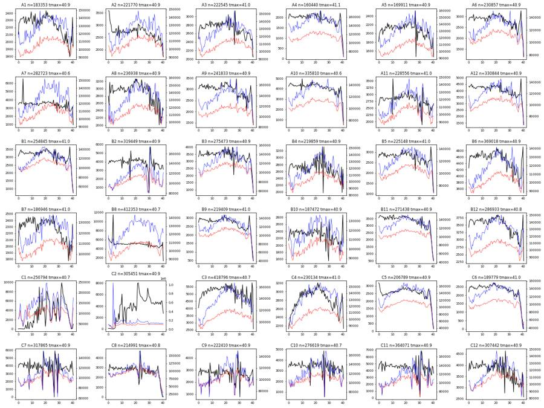
15
agent
Metadata is consistent across all 36 files. On the event-rate plots, C1 and C2 have clearly abnormal flow; now I'm looking at those two up close.
16
tool call · Bash
cd /task; cat > work/p_time2.py <<'EOF'
import sys; sys.path.insert(0,'/task/work')
from load import *
import matplotlib; matplotlib.use('Agg'); import matplotlib.pyplot as plt
ws=sys.argv[1].split(',')
fig,axs=plt.subplots(len(ws),4,figsize=(22,4*len(ws)))
for i,w in enumerate(ws):
df=load(w); t=df.Time.values
bins=np.arange(0,t.max()+0.2,0.2); h,_=np.histogram(t,bins)
axs[i,0].plot(bins[:-1],h/0.2,'k-'); axs[i,0].set_title(f'{w} rate ev/s')
for j,c in enumerate(['FSC-A','SSC-A','RL3-A']):
ax=axs[i,j+1]
sub=df.sample(min(60000,len(df)),random_state=0)
y=sub[c].values
if c=='RL3-A': y=np.arcsinh(y/500)
ax.scatter(sub.Time,y,s=0.3,alpha=0.3,c='k'); ax.set_title(f'{w} {c} vs time')
plt.tight_layout(); plt.savefig('/task/work/time2.png',dpi=45)
EOF
python3 work/p_time2.py C1,C2,C7,B217
tool output
(Bash completed with no output)
18
tool call · Read
{
"file_path": "/task/work/time2.png"
}19
tool output
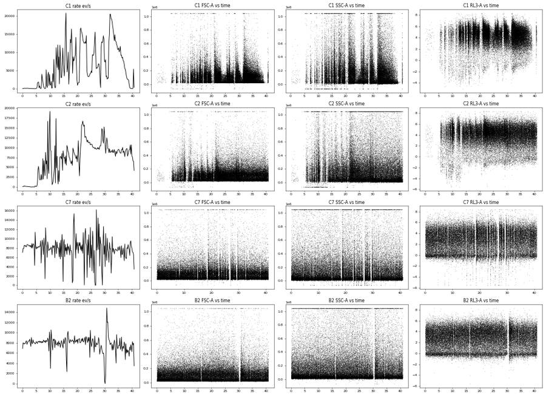
21
tool call · Bash
cd /task; cat > work/p_scatter.py <<'EOF'
import sys; sys.path.insert(0,'/task/work')
from load import *
import matplotlib; matplotlib.use('Agg'); import matplotlib.pyplot as plt
from matplotlib.colors import LogNorm
x,y=sys.argv[1],sys.argv[2]; out=sys.argv[3]
ws=sys.argv[4].split(',') if len(sys.argv)>4 else WELLS
tf=lambda v,c: np.arcsinh(v/300)/np.log(10) if c in('BL1-A','RL3-A') else v
n=int(np.ceil(np.sqrt(len(ws))))
fig,axs=plt.subplots(n,n,figsize=(4*n,3.6*n)); axs=np.atleast_1d(axs).ravel()
for i,w in enumerate(ws):
df=load(w)
xx=tf(df[x].values,x); yy=tf(df[y].values,y)
axs[i].hist2d(xx,yy,bins=200,norm=LogNorm(),cmap='jet')
axs[i].set_title(f'{w} {x} vs {y}')
plt.tight_layout(); plt.savefig(out,dpi=40)
EOF
python3 work/p_scatter.py FSC-A SSC-A work/fsc_ssc.png22
tool output
(Bash completed with no output)
23
tool call · Read
{
"file_path": "/task/work/fsc_ssc.png"
}24
tool output
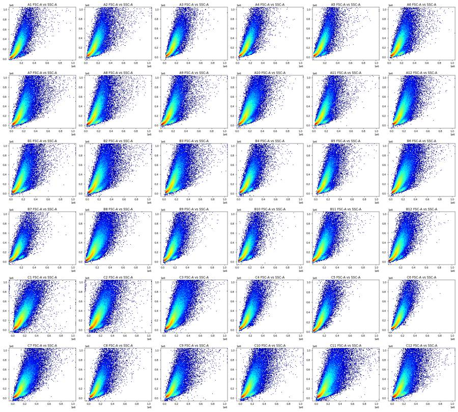
26
tool call · Bash
cd /task; cat > work/p_scatter_log.py <<'EOF'
import sys; sys.path.insert(0,'/task/work')
from load import *
import matplotlib; matplotlib.use('Agg'); import matplotlib.pyplot as plt
from matplotlib.colors import LogNorm
x,y=sys.argv[1],sys.argv[2]; out=sys.argv[3]
ws=sys.argv[4].split(',') if len(sys.argv)>4 else WELLS
n=int(np.ceil(np.sqrt(len(ws))))
fig,axs=plt.subplots(n,n,figsize=(4*n,3.6*n)); axs=np.atleast_1d(axs).ravel()
for i,w in enumerate(ws):
df=load(w)
xx=np.log10(np.clip(df[x].values,1000,None)); yy=np.log10(np.clip(df[y].values,1000,None))
axs[i].hist2d(xx,yy,bins=200,norm=LogNorm(),cmap='jet',range=[[3,6.05],[3,6.05]])
axs[i].set_title(f'{w} {x} vs {y} (log)')
plt.tight_layout(); plt.savefig(out,dpi=40)
EOF
python3 work/p_scatter_log.py FSC-A SSC-A work/fsc_ssc_log.png27
tool output
(Bash completed with no output)
28
tool call · Read
{
"file_path": "/task/work/fsc_ssc_log.png"
}29
tool output
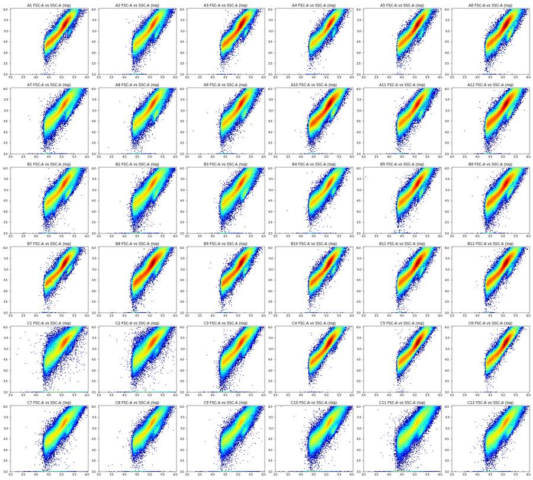
31
thinking
Scatter shows a debris cluster at low FSC/SSC with cells above it, so I'm checking the BL1-A × RL3-A control wells to set the fluorescence gates.
32
tool call · Bash
cd /task; python3 work/p_scatter.py BL1-A RL3-A work/bl_rl.png
33
tool output
(Bash completed with no output)
34
tool call · Read
{
"file_path": "/task/work/bl_rl.png"
}35
tool output
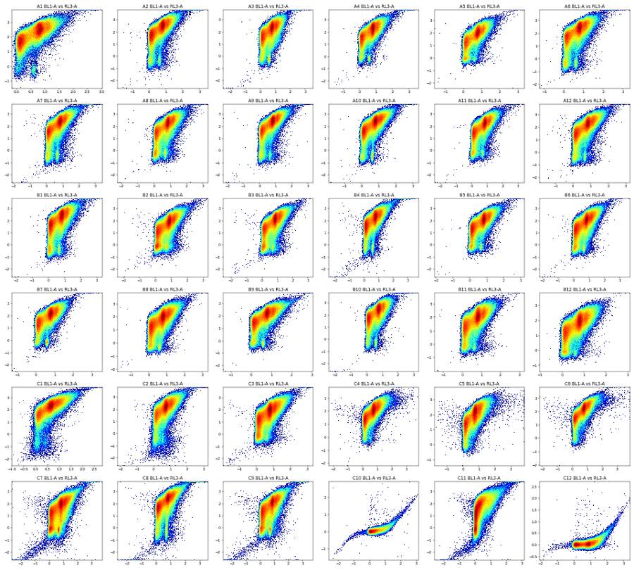
37
tool call · Bash
cd /task; python3 -c " import flowkit as fk, inspect print(inspect.signature(fk.transforms.LogicleTransform.__init__)) print(inspect.signature(fk.GatingStrategy.add_transform)) print(inspect.signature(fk.GatingStrategy.add_gate)) print(inspect.signature(fk.gates.PolygonGate.__init__)) print(inspect.signature(fk.gates.RectangleGate.__init__)) print(inspect.signature(fk.Dimension.__init__)) print(inspect.signature(fk.export_gatingml)) "
38
tool output
(self, param_t, param_w, param_m, param_a) (self, transform_id, transform) (self, gate, gate_path, sample_id=None) (self, gate_name, dimensions, vertices, use_complement=False) (self, gate_name, dimensions, use_complement=False) (self, dimension_id, compensation_ref='uncompensated', transformation_ref=None, range_min=None, range_max=None) (gating_strategy, file_handle, sample_id=None)
40
tool call · Bash
cd /task; cat > work/p_fsc_detail.py <<'EOF'
import sys; sys.path.insert(0,'/task/work')
from load import *
import matplotlib; matplotlib.use('Agg'); import matplotlib.pyplot as plt
from matplotlib.colors import LogNorm
ws=sys.argv[1].split(',')
fig,axs=plt.subplots(len(ws),4,figsize=(20,4.5*len(ws)))
for i,w in enumerate(ws):
df=load(w)
f=df['FSC-A'].values; s=df['SSC-A'].values; rl=np.arcsinh(df['RL3-A'].values/300)/np.log(10); bl=np.arcsinh(df['BL1-A'].values/300)/np.log(10)
ax=axs[i,0]; ax.hist2d(f,s,bins=300,norm=LogNorm(),cmap='jet',range=[[0,6e5],[0,1.05e6]]); ax.set_title(f'{w} lin')
ax=axs[i,1]; ax.hist2d(np.log10(np.clip(f,1e3,None)),np.log10(np.clip(s,1e3,None)),bins=200,norm=LogNorm(),cmap='jet',range=[[4,6.05],[3,6.05]]); ax.set_title(f'{w} log')
ax=axs[i,2];
m=np.random.RandomState(0).rand(len(f))<0.3
sc=ax.scatter(np.log10(np.clip(f[m],1e3,None)),np.log10(np.clip(s[m],1e3,None)),c=rl[m],s=0.3,cmap='jet',vmin=0,vmax=3.5); ax.set_xlim(4,6.05); ax.set_ylim(3,6.05); ax.set_title(f'{w} color=RL3'); plt.colorbar(sc,ax=ax)
ax=axs[i,3]; ax.hist(np.log10(np.clip(f,1e3,None)),bins=200,range=(4,6.05),histtype='step'); ax.set_title('FSC-A log hist')
plt.tight_layout(); plt.savefig('/task/work/fsc_detail.png',dpi=45)
EOF
python3 work/p_fsc_detail.py C7,C10,C11,A141
tool output
(Bash completed with no output)
42
tool call · Read
{
"file_path": "/task/work/fsc_detail.png"
}43
tool output
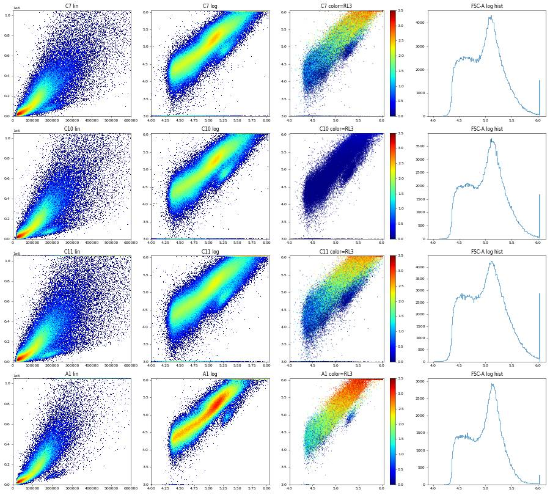
45
tool call · Bash
cd /task; cat > work/p_sing.py <<'EOF'
import sys; sys.path.insert(0,'/task/work')
from load import *
import matplotlib; matplotlib.use('Agg'); import matplotlib.pyplot as plt
from matplotlib.colors import LogNorm
ws=sys.argv[1].split(',') if len(sys.argv)>1 and sys.argv[1] else WELLS
lin=len(sys.argv)>2
n=int(np.ceil(np.sqrt(len(ws))))
fig,axs=plt.subplots(n,n,figsize=(4.5*n,4*n)); axs=np.atleast_1d(axs).ravel()
for i,w in enumerate(ws):
df=load(w)
df=df[(df['FSC-A']>60000)]
if lin:
axs[i].hist2d(df['SSC-H'],df['SSC-A'],bins=300,norm=LogNorm(),cmap='jet',range=[[0,1.05e6],[0,1.05e6]])
else:
axs[i].hist2d(np.log10(np.clip(df['SSC-H'],1e3,None)),np.log10(np.clip(df['SSC-A'],1e3,None)),bins=200,norm=LogNorm(),cmap='jet',range=[[3.5,6.05],[3.5,6.05]])
axs[i].set_title(f'{w} SSC-H vs SSC-A')
plt.tight_layout(); plt.savefig('/task/work/sing.png',dpi=40)
EOF
python3 work/p_sing.py "" lin46
tool output
(Bash completed with no output)
47
tool call · Read
{
"file_path": "/task/work/sing.png"
}48
tool output
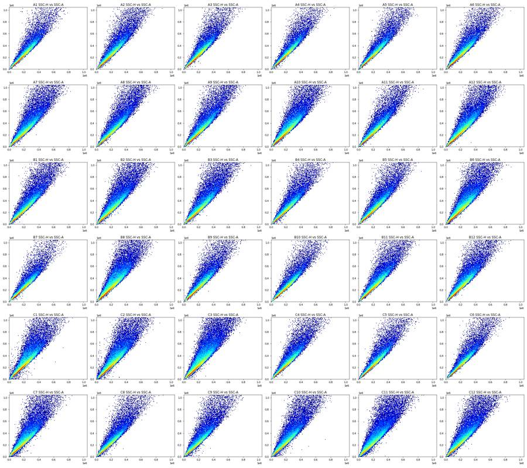
50
tool call · Bash
cd /task; cat > work/ratio.py <<'EOF'
import sys; sys.path.insert(0,'/task/work')
from load import *
import matplotlib; matplotlib.use('Agg'); import matplotlib.pyplot as plt
fig,axs=plt.subplots(1,2,figsize=(16,6))
for w in ['A1','A7','B8','C3','C7','C10','C11','C12','C1','C2']:
df=load(w); df=df[(df['FSC-A']>60000)&(df['SSC-A']<1.04e6)&(df['SSC-H']>1000)]
r=df['SSC-A']/df['SSC-H']
axs[0].hist(r,bins=300,range=(0.5,3),histtype='step',label=w,density=True)
print(w, np.percentile(r,[1,5,25,50,75,90,95,99]).round(3))
# ratio vs SSC-H
axs[0].legend()
df=load('C7'); df=df[(df['FSC-A']>60000)&(df['SSC-H']>1000)]
from matplotlib.colors import LogNorm
axs[1].hist2d(np.log10(df['SSC-H']), df['SSC-A']/df['SSC-H'],bins=200,range=[[3.5,6.05],[0.5,3]],norm=LogNorm(),cmap='jet')
plt.savefig('/task/work/ratio.png',dpi=50)
EOF
python3 work/ratio.py51
tool output
A1 [0.969 1.014 1.091 1.169 1.313 1.588 1.834 2.352] A7 [0.902 0.982 1.069 1.162 1.37 1.742 2.016 2.62 ] B8 [0.922 0.981 1.067 1.155 1.361 1.751 2.027 2.608] C3 [0.889 0.974 1.067 1.162 1.389 1.8 2.081 2.69 ] C7 [0.846 0.972 1.065 1.165 1.413 1.829 2.121 2.777] C10 [0.848 0.974 1.068 1.163 1.384 1.785 2.071 2.717] C11 [0.778 0.957 1.068 1.185 1.456 1.874 2.168 2.845] C12 [0.873 0.974 1.069 1.168 1.393 1.783 2.06 2.677] C1 [0.818 0.966 1.065 1.16 1.384 1.815 2.112 2.821] C2 [0.86 0.97 1.067 1.16 1.369 1.773 2.058 2.74 ]
52
tool call · Read
{
"file_path": "/task/work/ratio.png"
}53
tool output
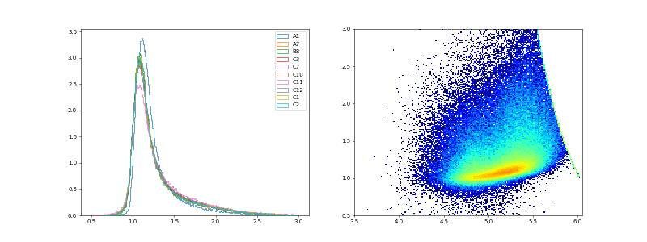
55
tool call · Bash
cd /task; cat > work/prelim.py <<'EOF'
import sys; sys.path.insert(0,'/task/work')
from load import *
def prelim(df):
m=(df['FSC-A']>60000)&(df['SSC-A']>20000)&(df['SSC-A']<1.04e6)&(df['FSC-A']<1.04e6)
r=df['SSC-A']/df['SSC-H'].clip(lower=1)
m&=(r>0.85)&(r<1.4)
return df[m]
EOF
cat > work/fl_q.py <<'EOF'
import sys; sys.path.insert(0,'/task/work')
from load import *; from prelim import prelim
for w in ['C10','C11','C12','C7','C8','C9','A1','C4']:
d=prelim(load(w))
print(w,len(d))
for c in ['BL1-A','RL3-A']:
v=d[c].values
print(' ',c,'pcts 1,5,25,50,75,95,99:',np.percentile(v,[1,5,25,50,75,95,99]).round(0), 'neg frac %.3f'%(v<0).mean(), 'neg 5pct',np.percentile(v[v<0],5).round(0) if (v<0).any() else None)
EOF
python3 work/fl_q.py56
tool output
C10 138415 BL1-A pcts 1,5,25,50,75,95,99: [ -23. 26. 116. 222. 375. 1191. 1946.] neg frac 0.022 neg 5pct -89.0 RL3-A pcts 1,5,25,50,75,95,99: [-93. -59. -9. 27. 65. 128. 184.] neg frac 0.303 neg 5pct -85.0 C11 163346 BL1-A pcts 1,5,25,50,75,95,99: [ -31. 14. 93. 184. 332. 1168. 1930.] neg frac 0.032 neg 5pct -99.0 RL3-A pcts 1,5,25,50,75,95,99: [ -639. -159. 2149. 7734. 17621. 44983. 78169.] neg frac 0.076 neg 5pct -1047.0 C12 150956 BL1-A pcts 1,5,25,50,75,95,99: [ 7. 99. 552. 1019. 1422. 2767. 4253.] neg frac 0.008 neg 5pct -109.0 RL3-A pcts 1,5,25,50,75,95,99: [-94. -60. -10. 25. 62. 124. 179.] neg frac 0.312 neg 5pct -86.0 C7 151493 BL1-A pcts 1,5,25,50,75,95,99: [ 14. 137. 598. 952. 1412. 2737. 4132.] neg frac 0.007 neg 5pct -1096.0 RL3-A pcts 1,5,25,50,75,95,99: [-5.0800e+02 -7.1000e+01 1.6980e+03 7.7560e+03 1.8710e+04 4.5717e+04 7.7930e+04] neg frac 0.063 neg 5pct -1003.0 C8 105031 BL1-A pcts 1,5,25,50,75,95,99: [ 16. 114. 513. 882. 1278. 2481. 3898.] neg frac 0.006 neg 5pct -275.0 RL3-A pcts 1,5,25,50,75,95,99: [-8.42000e+02 8.40000e+01 1.02980e+04 2.85860e+04 5.66520e+04 1.25736e+05 2.08599e+05] neg frac 0.046 neg 5pct -1788.0 C9 107407 BL1-A pcts 1,5,25,50,75,95,99: [3.000e+00 9.800e+01 5.350e+02 9.650e+02 1.396e+03 2.747e+03 4.242e+03] neg frac 0.009 neg 5pct -1127.0 RL3-A pcts 1,5,25,50,75,95,99: [-5.30000e+02 -8.10000e+01 2.93800e+03 1.12030e+04 2.50720e+04 6.02080e+04 1.00395e+05] neg frac 0.064 neg 5pct -997.0 A1 101334 BL1-A pcts 1,5,25,50,75,95,99: [ 66. 155. 521. 855. 1178. 2238. 3350.] neg frac 0.001 neg 5pct -66.0 RL3-A pcts 1,5,25,50,75,95,99: [9.00000e+01 3.58100e+03 1.62270e+04 3.41660e+04 6.45700e+04 1.34437e+05 2.02231e+05] neg frac 0.009 neg 5pct -960.0 C4 131450 BL1-A pcts 1,5,25,50,75,95,99: [ 107. 216. 552. 809. 1173. 2319. 4005.] neg frac 0.001 neg 5pct -7210.0 RL3-A pcts 1,5,25,50,75,95,99: [ 315. 2197. 8374. 16780. 31585. 70524. 113160.] neg frac 0.004 neg 5pct -530.0
58
tool call · Bash
cd /task; cat > work/tf.py <<'EOF'
import flowkit as fk, numpy as np
T=1048576.0; M=6.02
LBL=fk.transforms.LogicleTransform(param_t=T,param_w=1.0,param_m=M,param_a=0)
LRL=fk.transforms.LogicleTransform(param_t=T,param_w=1.0,param_m=M,param_a=0)
def tbl(v): return LBL.apply(np.asarray(v,dtype=float))
def trl(v): return LRL.apply(np.asarray(v,dtype=float))
def inv_bl(x): return LBL.inverse(np.asarray(x,dtype=float))
def inv_rl(x): return LRL.inverse(np.asarray(x,dtype=float))
EOF
cat > work/p_hist.py <<'EOF'
import sys; sys.path.insert(0,'/task/work')
from load import *; from prelim import prelim; from tf import *
import matplotlib; matplotlib.use('Agg'); import matplotlib.pyplot as plt
fig,axs=plt.subplots(2,1,figsize=(14,10))
for w,c in [('C10','k'),('C11','r'),('C12','g'),('C7','b'),('C8','c'),('C9','m'),('C4','orange'),('A1','y')]:
d=prelim(load(w))
axs[0].hist(tbl(d['BL1-A']),bins=300,range=(0,1),histtype='step',color=c,label=w,density=True)
axs[1].hist(trl(d['RL3-A']),bins=300,range=(0,1),histtype='step',color=c,label=w,density=True)
ticks=[-1000,-100,0,100,1000,1e4,1e5,1e6]
for ax,n in zip(axs,['BL1-A','RL3-A']):
ax.set_xticks(tbl(ticks)); ax.set_xticklabels([str(int(t)) for t in ticks]); ax.legend(); ax.set_title(n); ax.grid(alpha=0.3)
plt.savefig('/task/work/hist.png',dpi=55)
EOF
python3 work/p_hist.py59
tool output
(Bash completed with no output)
60
tool call · Read
{
"file_path": "/task/work/hist.png"
}61
tool output
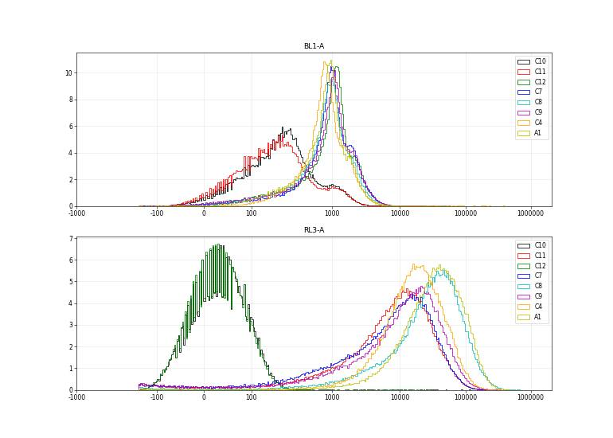
63
tool call · Bash
cd /task; cat > work/p_flu2d.py <<'EOF'
import sys; sys.path.insert(0,'/task/work')
from load import *; from prelim import prelim; from tf import *
import matplotlib; matplotlib.use('Agg'); import matplotlib.pyplot as plt
from matplotlib.colors import LogNorm
ws=sys.argv[1].split(',') if len(sys.argv)>1 and sys.argv[1] else WELLS
out=sys.argv[2] if len(sys.argv)>2 else '/task/work/flu2d.png'
lines=eval(sys.argv[3]) if len(sys.argv)>3 else {}
n=int(np.ceil(np.sqrt(len(ws)))); nr=int(np.ceil(len(ws)/n))
fig,axs=plt.subplots(nr,n,figsize=(4.5*n,4.2*nr)); axs=np.atleast_1d(axs).ravel()
ticks=[-1000,0,100,1000,1e4,1e5,1e6]
for i,w in enumerate(ws):
d=prelim(load(w))
axs[i].hist2d(tbl(d['BL1-A']),trl(d['RL3-A']),bins=200,range=[[0,1],[0,1]],norm=LogNorm(),cmap='jet')
axs[i].set_title(f'{w} n={len(d)}')
axs[i].set_xticks(tbl(ticks)); axs[i].set_xticklabels(['-1e3','0','1e2','1e3','1e4','1e5','1e6'],fontsize=7)
axs[i].set_yticks(trl(ticks)); axs[i].set_yticklabels(['-1e3','0','1e2','1e3','1e4','1e5','1e6'],fontsize=7)
for k,v in lines.items():
if k[0]=='x': axs[i].axvline(tbl(v),color='k',lw=0.8)
else: axs[i].axhline(trl(v),color='k',lw=0.8)
plt.tight_layout(); plt.savefig(out,dpi=40)
EOF
python3 work/p_flu2d.py64
tool output
(Bash completed with no output)
65
tool call · Read
{
"file_path": "/task/work/flu2d.png"
}66
tool output
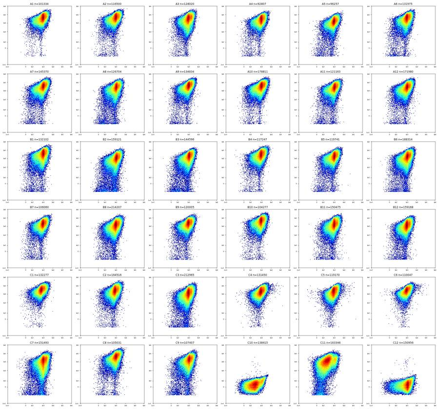
68
tool call · Bash
cd /task; cat > work/p_c12.py <<'EOF'
import sys; sys.path.insert(0,'/task/work')
from load import *; from prelim import prelim; from tf import *
import matplotlib; matplotlib.use('Agg'); import matplotlib.pyplot as plt
from matplotlib.colors import LogNorm
ticks=[-1000,0,100,1000,1e4,1e5,1e6]; tl=['-1e3','0','1e2','1e3','1e4','1e5','1e6']
ws=['C10','C12','C11','C7']
fig,axs=plt.subplots(len(ws),4,figsize=(20,4.5*len(ws)))
for i,w in enumerate(ws):
d=prelim(load(w))
for j,(c) in enumerate(['FSC-A','SSC-A']):
axs[i,j].hist2d(tbl(d['BL1-A']),np.log10(d[c]),bins=200,range=[[0.1,0.9],[4.5,6.05]],norm=LogNorm(),cmap='jet'); axs[i,j].set_title(f'{w} BL1 vs {c}')
axs[i,j].set_xticks(tbl(ticks)); axs[i,j].set_xticklabels(tl)
axs[i,2].hist2d(trl(d['RL3-A']),np.log10(d['SSC-A']),bins=200,range=[[0.1,0.9],[4.5,6.05]],norm=LogNorm(),cmap='jet'); axs[i,2].set_title(f'{w} RL3 vs SSC')
axs[i,2].set_xticks(trl(ticks)); axs[i,2].set_xticklabels(tl)
axs[i,3].hist(tbl(d['BL1-A']),bins=300,range=(0.1,0.9),histtype='step',label='BL1'); axs[i,3].hist(trl(d['RL3-A']),bins=300,range=(0.1,0.9),histtype='step',label='RL3');axs[i,3].legend()
axs[i,3].set_xticks(tbl(ticks)); axs[i,3].set_xticklabels(tl); axs[i,3].set_yscale('log')
plt.tight_layout(); plt.savefig('/task/work/c12.png',dpi=45)
EOF
python3 work/p_c12.py69
tool output
(Bash completed with no output)
70
tool call · Read
{
"file_path": "/task/work/c12.png"
}71
tool output
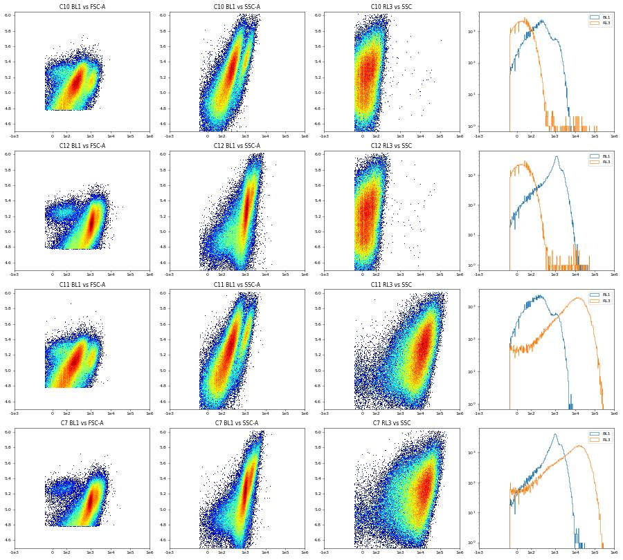
73
tool call · Bash
cd /task; cat > work/q2.py <<'EOF'
import sys; sys.path.insert(0,'/task/work')
from load import *; from prelim import prelim; from tf import *
for w in ['C10','C12','C11','C7','C8','C9','A1','B8','C4']:
d=prelim(load(w)); rl=d['RL3-A'].values; bl=d['BL1-A'].values
print(w, 'RL3 pct 99,99.5,99.9:',np.percentile(rl,[99,99.5,99.9]).round(0), ' BL1 pct 90,95,99,99.9:',np.percentile(bl,[90,95,99,99.9]).round(0))
print(' frac RL3<200 %.3f <300 %.3f <500 %.3f <1000 %.3f <3000 %.3f'%tuple((rl<t).mean() for t in [200,300,500,1000,3000]))
lv=bl[rl<300]
if len(lv)>50: print(' live(RL3<300) n=%d BL1 pct 5,25,50,75,95:'%len(lv),np.percentile(lv,[5,25,50,75,95]).round(0), ' frac BL1>500 %.3f >1000 %.3f'%((lv>500).mean(),(lv>1000).mean()))
EOF
python3 work/q2.py74
tool output
C10 RL3 pct 99,99.5,99.9: [184. 211. 290.] BL1 pct 90,95,99,99.9: [ 787. 1191. 1946. 3017.]
frac RL3<200 0.993 <300 0.999 <500 1.000 <1000 1.000 <3000 1.000
live(RL3<300) n=138288 BL1 pct 5,25,50,75,95: [ 26. 116. 221. 374. 1186.] frac BL1>500 0.169 >1000 0.071
C12 RL3 pct 99,99.5,99.9: [179. 207. 296.] BL1 pct 90,95,99,99.9: [2223. 2767. 4253. 6987.]
frac RL3<200 0.994 <300 0.999 <500 0.999 <1000 1.000 <3000 1.000
live(RL3<300) n=150811 BL1 pct 5,25,50,75,95: [ 99. 552. 1019. 1421. 2761.] frac BL1>500 0.772 >1000 0.514
C11 RL3 pct 99,99.5,99.9: [ 78169. 93577. 134840.] BL1 pct 90,95,99,99.9: [ 728. 1168. 1930. 3077.]
frac RL3<200 0.102 <300 0.114 <500 0.134 <1000 0.177 <3000 0.295
live(RL3<300) n=18555 BL1 pct 5,25,50,75,95: [-32. 20. 58. 104. 242.] frac BL1>500 0.017 >1000 0.005
C7 RL3 pct 99,99.5,99.9: [ 77930. 92557. 131820.] BL1 pct 90,95,99,99.9: [2181. 2737. 4132. 6450.]
frac RL3<200 0.098 <300 0.114 <500 0.143 <1000 0.197 <3000 0.321
live(RL3<300) n=17321 BL1 pct 5,25,50,75,95: [-1.000e+00 1.450e+02 5.320e+02 8.590e+02 1.599e+03] frac BL1>500 0.524 >1000 0.168
C8 RL3 pct 99,99.5,99.9: [208599. 245946. 341821.] BL1 pct 90,95,99,99.9: [1970. 2481. 3898. 6358.]
frac RL3<200 0.055 <300 0.059 <500 0.066 <1000 0.080 <3000 0.128
live(RL3<300) n=6205 BL1 pct 5,25,50,75,95: [ -20. 52. 152. 729. 1716.] frac BL1>500 0.350 >1000 0.130
C9 RL3 pct 99,99.5,99.9: [100395. 120252. 167972.] BL1 pct 90,95,99,99.9: [2195. 2747. 4242. 6723.]
frac RL3<200 0.090 <300 0.100 <500 0.119 <1000 0.155 <3000 0.252
live(RL3<300) n=10785 BL1 pct 5,25,50,75,95: [ -15. 64. 240. 744. 1687.] frac BL1>500 0.378 >1000 0.131
A1 RL3 pct 99,99.5,99.9: [202231. 233810. 308389.] BL1 pct 90,95,99,99.9: [1809. 2238. 3350. 5001.]
frac RL3<200 0.012 <300 0.013 <500 0.015 <1000 0.021 <3000 0.043
live(RL3<300) n=1287 BL1 pct 5,25,50,75,95: [ 8. 86. 250. 596. 861.] frac BL1>500 0.377 >1000 0.040
B8 RL3 pct 99,99.5,99.9: [ 90814. 109000. 152737.] BL1 pct 90,95,99,99.9: [1913. 2377. 3621. 5576.]
frac RL3<200 0.032 <300 0.037 <500 0.047 <1000 0.071 <3000 0.165
live(RL3<300) n=7882 BL1 pct 5,25,50,75,95: [ 5. 101. 316. 632. 1153.] frac BL1>500 0.363 >1000 0.071
C4 RL3 pct 99,99.5,99.9: [113160. 132544. 180209.] BL1 pct 90,95,99,99.9: [ 1820. 2319. 4005. 17501.]
frac RL3<200 0.008 <300 0.010 <500 0.014 <1000 0.023 <3000 0.072
live(RL3<300) n=1276 BL1 pct 5,25,50,75,95: [ 96. 248. 426. 606. 1154.] frac BL1>500 0.390 >1000 0.07476
tool call · Bash
cd /task; cat > work/p_livebl.py <<'EOF'
import sys; sys.path.insert(0,'/task/work')
from load import *; from prelim import prelim; from tf import *
import matplotlib; matplotlib.use('Agg'); import matplotlib.pyplot as plt
from matplotlib.colors import LogNorm
ticks=[-1000,-100,0,100,200,300,500,1000,2000,5000,1e4,1e5]; tl=[str(int(t)) for t in ticks]
fig,axs=plt.subplots(3,1,figsize=(16,15))
for w,c in [('C10','k'),('C12','g'),('C11','r'),('C7','b'),('C8','c'),('C9','m')]:
d=prelim(load(w)); rl=d['RL3-A'].values; bl=d['BL1-A'].values
axs[0].hist(tbl(bl),bins=250,range=(0.1,0.7),histtype='step',color=c,label=w+' all',density=True)
if w not in('C10','C12'):
axs[1].hist(tbl(bl[rl<300]),bins=120,range=(0.1,0.7),histtype='step',color=c,label=w+' RL3<300',density=True)
axs[2].hist(trl(rl),bins=300,range=(0.1,0.9),histtype='step',color=c,label=w,density=False)
for w,c in [('A1','y'),('B8','orange'),('A10','brown')]:
d=prelim(load(w)); rl=d['RL3-A'].values; bl=d['BL1-A'].values
axs[1].hist(tbl(bl[rl<300]),bins=120,range=(0.1,0.7),histtype='step',color=c,label=w+' RL3<300',density=True)
for ax in axs[:2]: ax.set_xticks(tbl(ticks)); ax.set_xticklabels(tl); ax.legend(); ax.grid(alpha=.3)
t2=[-1000,-100,0,100,300,1000,3000,1e4,1e5,1e6]
axs[2].set_xticks(trl(t2)); axs[2].set_xticklabels([str(int(t)) for t in t2]); axs[2].legend(); axs[2].set_yscale('log'); axs[2].grid(alpha=.3)
plt.savefig('/task/work/livebl.png',dpi=50)
EOF
python3 work/p_livebl.py77
tool output
(Bash completed with no output)
78
tool call · Read
{
"file_path": "/task/work/livebl.png"
}79
tool output
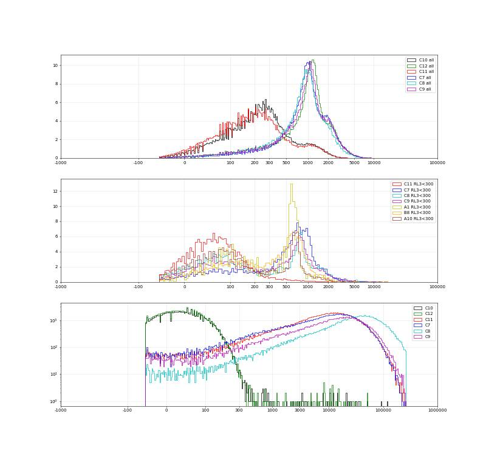
81
tool call · Bash
cd /task; cat > work/p_zoom.py <<'EOF'
import sys; sys.path.insert(0,'/task/work')
from load import *; from prelim import prelim; from tf import *
import matplotlib; matplotlib.use('Agg'); import matplotlib.pyplot as plt
from matplotlib.colors import LogNorm
ws=sys.argv[1].split(','); out=sys.argv[2]
ticks=[-1000,-100,0,100,300,1000,3000,1e4,1e5,1e6]; tl=['-1e3','-100','0','100','300','1e3','3e3','1e4','1e5','1e6']
n=len(ws); fig,axs=plt.subplots(2,n,figsize=(6*n,11))
for i,w in enumerate(ws):
d=prelim(load(w)); x=tbl(d['BL1-A']); y=trl(d['RL3-A'])
ax=axs[0,i]; ax.hist2d(x,y,bins=150,range=[[0.05,0.85],[0.05,0.95]],norm=LogNorm(),cmap='jet'); ax.set_title(w)
ax.set_xticks(tbl(ticks)); ax.set_xticklabels(tl,fontsize=8); ax.set_yticks(trl(ticks)); ax.set_yticklabels(tl,fontsize=8); ax.grid(alpha=.3)
ax=axs[1,i]; ax.scatter(x,y,s=0.2,c='k',alpha=0.2); ax.set_xlim(0.05,0.85); ax.set_ylim(0.05,0.95)
ax.set_xticks(tbl(ticks)); ax.set_xticklabels(tl,fontsize=8); ax.set_yticks(trl(ticks)); ax.set_yticklabels(tl,fontsize=8); ax.grid(alpha=.5)
plt.tight_layout(); plt.savefig(out,dpi=50)
EOF
python3 work/p_zoom.py C11,C12,C7,B8 work/zoom.png82
tool output
(Bash completed with no output)
83
tool call · Read
{
"file_path": "/task/work/zoom.png"
}84
tool output
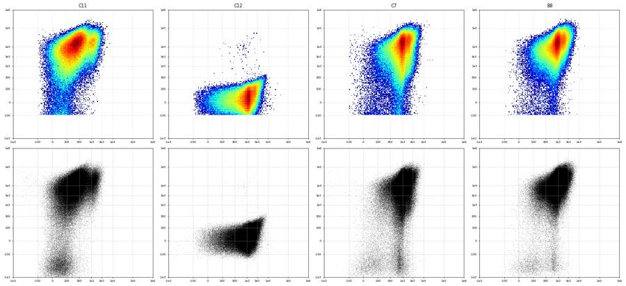
86
tool call · Bash
cd /task; cat > work/flow.py <<'EOF'
import sys; sys.path.insert(0,'/task/work')
from load import *
rows=[]
for w in WELLS:
df=load(w); t=np.sort(df.Time.values)
T=t.max()
bw=0.25; bins=np.arange(0,np.ceil(T/bw)*bw+bw,bw); h,_=np.histogram(t,bins)
hh=h[:-1] # drop last partial
med=np.median(hh)
low=(hh<0.25*med);
dt=np.diff(t);
gaps=dt[dt>0.1]
# first time reaching 50% median rate
first=bins[np.argmax(hh>0.5*med)]
# rate in quarters
q=[((t>=a)&(t<a+10)).sum()/10 for a in [0,10,20,30]]
rows.append(dict(well=w,n=len(t),T=round(T,2),med_rate=med/bw,low_bins=int(low.sum()),low_time_s=low.sum()*bw,first_ok_s=first,n_gaps_gt0p1s=len(gaps),max_gap_s=round(dt.max(),3),
q1=int(q[0]),q2=int(q[1]),q3=int(q[2]),q4=int(q[3]), cv=round(hh.std()/hh.mean(),3)))
r=pd.DataFrame(rows); pd.set_option('display.width',250); print(r.to_string())
r.to_csv('/task/work/flow.csv',index=False)
EOF
python3 work/flow.py87
tool output
well n T med_rate low_bins low_time_s first_ok_s n_gaps_gt0p1s max_gap_s q1 q2 q3 q4 cv 0 A1 183353 40.89 4520.0 0 0.00 0.00 0 0.012 4606 4597 4604 4098 0.068 1 A2 221770 40.89 5436.0 0 0.00 0.00 0 0.038 5748 5504 5600 4925 0.105 2 A3 222545 40.96 5500.0 0 0.00 0.00 0 0.023 5520 5634 5538 5150 0.088 3 A4 160440 41.08 4010.0 0 0.00 0.00 0 0.015 4113 4172 3984 3576 0.136 4 A5 169911 40.86 4204.0 0 0.00 0.00 0 0.069 4193 4296 4276 3886 0.084 5 A6 230857 40.90 5828.0 0 0.00 0.00 0 0.026 5868 5937 5827 5144 0.105 6 A7 282723 40.65 7030.0 0 0.00 0.00 0 0.069 7449 7059 7116 6233 0.157 7 A8 236938 40.94 5976.0 0 0.00 0.00 0 0.085 5910 6032 6171 5090 0.117 8 A9 241833 40.94 6076.0 0 0.00 0.00 0 0.047 6235 6191 6123 5316 0.140 9 A10 335810 40.64 8494.0 0 0.00 0.00 0 0.027 8669 8764 8450 7381 0.105 10 A11 228556 40.95 5676.0 1 0.25 0.00 0 0.087 5658 5816 5720 5135 0.128 11 A12 330844 40.90 8388.0 0 0.00 0.00 0 0.028 8596 8528 8195 7394 0.115 12 B1 254845 40.98 6456.0 2 0.50 0.00 0 0.092 6548 6581 6446 5722 0.159 13 B2 319449 40.87 8024.0 2 0.50 0.00 1 0.135 8145 7980 7907 7242 0.203 14 B3 275473 40.88 6900.0 1 0.25 0.00 0 0.078 7008 7175 6893 6237 0.156 15 B4 219859 40.93 5412.0 0 0.00 0.00 0 0.024 5467 5462 5594 4985 0.117 16 B5 225148 41.00 5616.0 0 0.00 0.00 0 0.043 5725 5748 5613 5156 0.113 17 B6 369018 40.87 9160.0 0 0.00 0.00 0 0.034 9228 9335 9215 8283 0.104 18 B7 186946 41.00 4632.0 0 0.00 0.00 0 0.017 4686 4715 4705 4161 0.079 19 B8 412353 40.65 10020.0 0 0.00 0.00 0 0.012 11283 10118 9998 9163 0.170 20 B9 219409 40.96 5648.0 2 0.50 0.00 0 0.015 5762 5771 5617 4672 0.161 21 B10 187472 40.94 4648.0 1 0.25 0.00 1 0.177 4725 4698 4553 4274 0.124 22 B11 271438 40.94 6988.0 2 0.50 0.00 0 0.029 7195 7185 6877 5749 0.168 23 B12 286933 40.82 7204.0 0 0.00 0.00 0 0.014 7273 7296 7245 6265 0.078 24 C1 250794 40.72 4870.0 45 11.25 7.00 8 1.285 741 6883 8633 8704 0.906 25 C2 305451 40.93 8628.0 27 6.75 5.75 10 0.411 2357 6964 11206 9360 0.567 26 C3 418796 40.74 10468.0 0 0.00 0.00 0 0.044 10045 10776 10598 9668 0.115 27 C4 230134 40.97 5712.0 0 0.00 0.00 0 0.010 5265 5951 5990 5323 0.084 28 C5 206789 40.91 5240.0 3 0.75 0.00 0 0.040 5149 5416 5430 4611 0.167 29 C6 189779 41.02 4878.0 4 1.00 0.00 0 0.025 4921 5094 4939 3943 0.189 30 C7 317865 40.93 8048.0 5 1.25 0.00 2 0.339 8182 7888 7626 7442 0.287 31 C8 214991 40.81 5664.0 10 2.50 0.00 4 0.324 5868 5776 5317 4535 0.304 32 C9 222410 40.87 5600.0 4 1.00 0.00 2 0.337 5706 5561 5374 5118 0.251 33 C10 276619 40.74 6984.0 5 1.25 0.00 3 0.133 7060 6955 6763 6329 0.287 34 C11 364071 40.91 9328.0 7 1.75 0.00 3 0.138 9483 9233 8522 8359 0.302 35 C12 307442 40.88 7756.0 0 0.00 0.00 0 0.055 7918 7891 7721 6633 0.135
89
tool call · Bash
cd /task; cat > work/p_end.py <<'EOF'
import sys; sys.path.insert(0,'/task/work')
from load import *
import matplotlib; matplotlib.use('Agg'); import matplotlib.pyplot as plt
fig,axs=plt.subplots(6,6,figsize=(24,16)); axs=axs.ravel()
rows=[]
for i,w in enumerate(WELLS):
df=load(w); t=df.Time.values
bins=np.arange(30,41.2,0.1); h,_=np.histogram(t,bins)
idx=np.digitize(t,bins)
g=pd.DataFrame({'b':idx,'f':df['FSC-A'],'s':df['SSC-A']})[(t>=30)].groupby('b').median()
ax=axs[i]; ax.plot(bins[:-1],h,'k-'); ax2=ax.twinx(); ax2.plot(bins[g.index.clip(upper=len(bins)-1)-1],g.f,'r-',lw=.8); ax2.plot(bins[g.index.clip(upper=len(bins)-1)-1],g.s,'b-',lw=.8)
ax.set_title(w); ax.set_xlim(30,41.2)
# stats: rate 35-38 vs 38-40, and last 1s
r_mid=((t>=20)&(t<35)).sum()/15; r_end=((t>=t.max()-2)&(t<t.max())).sum()/2
f_mid=np.median(df['FSC-A'][(t>=20)&(t<35)]); f_end=np.median(df['FSC-A'][(t>=t.max()-2)])
rows.append(dict(well=w,r_mid=int(r_mid),r_last2s=int(r_end),ratio=round(r_end/r_mid,2),f_mid=int(f_mid),f_last2=int(f_end),fratio=round(f_end/f_mid,2)))
plt.tight_layout(); plt.savefig('/task/work/end.png',dpi=40)
print(pd.DataFrame(rows).to_string())
EOF
python3 work/p_end.py90
tool output (error)
Exit code 1
Traceback (most recent call last):
File "/task/work/p_end.py", line 11, in <module>
ax=axs[i]; ax.plot(bins[:-1],h,'k-'); ax2=ax.twinx(); ax2.plot(bins[g.index.clip(upper=len(bins)-1)-1],g.f,'r-',lw=.8); ax2.plot(bins[g.index.clip(upper=len(bins)-1)-1],g.s,'b-',lw=.8)
^^^^^^^^^^^^
AttributeError: 'Index' object has no attribute 'clip'91
tool call · Bash
cd /task; sed -i 's/g.index.clip(upper=len(bins)-1)/np.clip(g.index.values,1,len(bins)-1)/g' work/p_end.py; python3 work/p_end.py
92
tool output
well r_mid r_last2s ratio f_mid f_last2 fratio 0 A1 4484 4427 0.99 112279 102739 0.92 1 A2 5441 4402 0.81 113685 98448 0.87 2 A3 5437 4596 0.85 113701 99931 0.88 3 A4 3884 2513 0.65 120063 103367 0.86 4 A5 4190 3573 0.85 113028 96490 0.85 5 A6 5624 4022 0.72 115041 104637 0.91 6 A7 6874 5843 0.85 114487 97722 0.85 7 A8 5874 4762 0.81 120632 102583 0.85 8 A9 5885 4303 0.73 116508 104186 0.89 9 A10 8187 6048 0.74 111999 98286 0.88 10 A11 5559 5211 0.94 107121 93378 0.87 11 A12 7958 5233 0.66 107280 90498 0.84 12 B1 6259 3127 0.50 111869 77642 0.69 13 B2 7762 7212 0.93 111973 97640 0.87 14 B3 6741 3820 0.57 116300 87131 0.75 15 B4 5431 4853 0.89 110263 96665 0.88 16 B5 5471 3874 0.71 109495 89997 0.82 17 B6 8939 9364 1.05 108141 98385 0.91 18 B7 4575 4149 0.91 111762 101402 0.91 19 B8 9780 9621 0.98 109016 103623 0.95 20 B9 5325 2184 0.41 111583 72510 0.65 21 B10 4496 4781 1.06 106940 94618 0.88 22 B11 6694 2358 0.35 110702 68532 0.62 23 B12 6957 6995 1.01 109352 100162 0.92 24 C1 9800 842 0.09 113944 88129 0.77 25 C2 10652 8469 0.80 115831 108114 0.93 26 C3 10363 9977 0.96 115983 103772 0.89 27 C4 5784 5368 0.93 113219 102315 0.90 28 C5 5267 1738 0.33 114987 72246 0.63 29 C6 4753 1344 0.28 107171 66585 0.62 30 C7 7543 7649 1.01 107343 94216 0.88 31 C8 5263 609 0.12 99387 47159 0.47 32 C9 5317 5486 1.03 108276 97105 0.90 33 C10 6633 6668 1.01 115362 101259 0.88 34 C11 8559 8355 0.98 110749 97679 0.88 35 C12 7424 6681 0.90 112094 95617 0.85
93
tool call · Read
{
"file_path": "/task/work/end.png"
}94
tool output
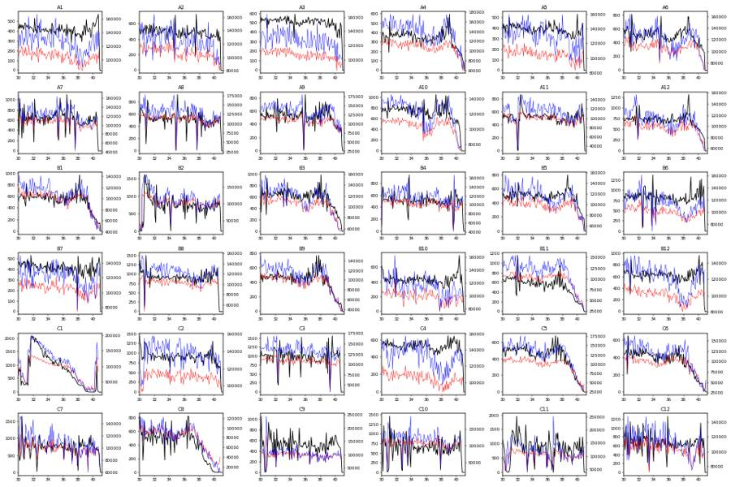
96
thinking
C1 and C2 show no events for the first 6–7 seconds and then an erratic rate, and C8 plus several other wells lose rate and FSC near the end, possibly from running dry. I'm drawing the scatter gates next.
97
tool call · Bash
cd /task; cat > work/p_cells.py <<'EOF'
import sys; sys.path.insert(0,'/task/work')
from load import *
import matplotlib; matplotlib.use('Agg'); import matplotlib.pyplot as plt
from matplotlib.colors import LogNorm
poly=np.array(eval(sys.argv[1])) if len(sys.argv)>1 else None
ws=['C7','C10','C11','A1','B8','C3','C4','C1']
fig,axs=plt.subplots(2,4,figsize=(24,12)); axs=axs.ravel()
for i,w in enumerate(ws):
df=load(w)
axs[i].hist2d(df['FSC-A'],df['SSC-A'],bins=[300,300],range=[[0,7e5],[0,1.06e6]],norm=LogNorm(),cmap='jet')
if poly is not None:
p=np.vstack([poly,poly[:1]]); axs[i].plot(p[:,0],p[:,1],'k-',lw=1.5)
from matplotlib.path import Path
ins=Path(poly).contains_points(df[['FSC-A','SSC-A']].values)
axs[i].set_title(f'{w} in={ins.mean()*100:.1f}%')
else: axs[i].set_title(w)
axs[i].grid(alpha=.3)
plt.tight_layout(); plt.savefig('/task/work/cells.png',dpi=40)
EOF
python3 work/p_cells.py "[(60000,8000),(150000,30000),(700000,250000),(700000,1040000),(150000,1040000),(60000,200000)]"98
tool output
(Bash completed with no output)
99
tool call · Read
{
"file_path": "/task/work/cells.png"
}100
tool output
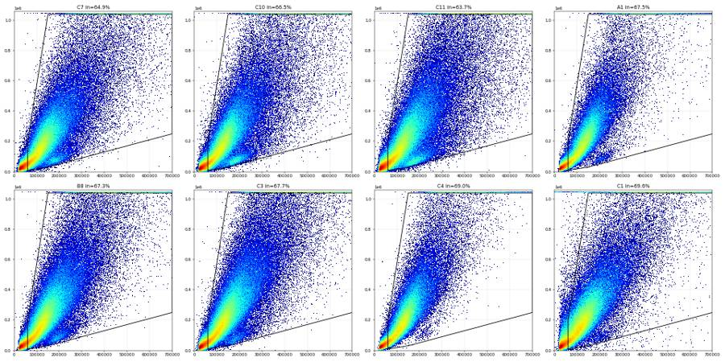
102
tool call · Bash
cd /task; sed -i 's/range=\[\[0,7e5\],\[0,1.06e6\]\]/range=[[0,float(sys.argv[2]) if len(sys.argv)>2 else 7e5],[0,float(sys.argv[3]) if len(sys.argv)>3 else 1.06e6]]/' work/p_cells.py; python3 work/p_cells.py "[(60000,8000),(150000,30000),(700000,250000),(700000,1040000),(150000,1040000),(60000,200000)]" 250000 300000
103
tool output
(Bash completed with no output)
104
tool call · Read
{
"file_path": "/task/work/cells.png"
}105
tool output
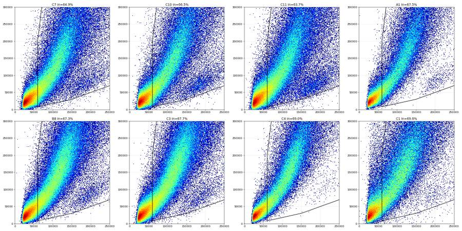
107
tool call · Bash
cd /task; cat > work/p_livescat.py <<'EOF'
import sys; sys.path.insert(0,'/task/work')
from load import *
import matplotlib; matplotlib.use('Agg'); import matplotlib.pyplot as plt
from matplotlib.colors import LogNorm
poly=np.array(eval(sys.argv[1]))
ws=['C7','C11','C9','A10','B8','B6']
fig,axs=plt.subplots(2,6,figsize=(30,10))
for i,w in enumerate(ws):
df=load(w); lv=df[df['RL3-A']<300]; dd=df[df['RL3-A']>1000]
for j,(sub,lab) in enumerate([(lv,'RL3<300'),(dd,'RL3>1000')]):
ax=axs[j,i]; ax.hist2d(sub['FSC-A'],sub['SSC-A'],bins=200,range=[[0,6e5],[0,1.06e6]],norm=LogNorm(),cmap='jet')
p=np.vstack([poly,poly[:1]]); ax.plot(p[:,0],p[:,1],'k-',lw=1.5); ax.set_title(f'{w} {lab} n={len(sub)}')
plt.tight_layout(); plt.savefig('/task/work/livescat.png',dpi=38)
EOF
python3 work/p_livescat.py "[(65000,5000),(150000,20000),(700000,200000),(700000,1040000),(150000,1040000),(65000,250000)]"108
tool output
(Bash completed with no output)
109
tool call · Read
{
"file_path": "/task/work/livescat.png"
}110
tool output
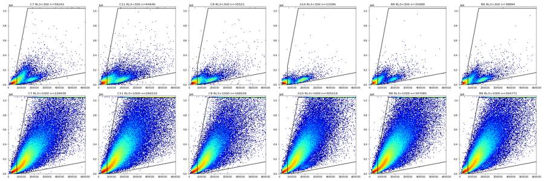
112
agent
Debris sits at FSC-A < ~60k, and the live cells form a low-SSC cluster at FSC 150–250k that the Cells polygon keeps. Now placing the singlet band.
113
tool call · Bash
cd /task; cat > work/p_sing2.py <<'EOF'
import sys; sys.path.insert(0,'/task/work')
from load import *
import matplotlib; matplotlib.use('Agg'); import matplotlib.pyplot as plt
from matplotlib.colors import LogNorm
from matplotlib.path import Path
cells=np.array(eval(sys.argv[1])); sing=np.array(eval(sys.argv[2]))
ws=['C7','C11','C12','A10','B8','C1']
fig,axs=plt.subplots(3,6,figsize=(30,15))
for i,w in enumerate(ws):
df=load(w); m=Path(cells).contains_points(df[['FSC-A','SSC-A']].values); d=df[m]
ins=Path(sing).contains_points(d[['SSC-H','SSC-A']].values)
for j,(lim,sub) in enumerate([(1.06e6,d),(3e5,d),(3e5,d[d['RL3-A']<300])]):
ax=axs[j,i]; ax.hist2d(sub['SSC-H'],sub['SSC-A'],bins=250,range=[[0,lim],[0,lim]],norm=LogNorm(),cmap='jet')
p=np.vstack([sing,sing[:1]]); ax.plot(p[:,0],p[:,1],'k-',lw=1.5); ax.set_xlim(0,lim); ax.set_ylim(0,lim)
ax.set_title(f'{w} singlets {ins.mean()*100:.1f}% of cells')
plt.tight_layout(); plt.savefig('/task/work/sing2.png',dpi=38)
EOF
CELLS="[(65000,3000),(200000,20000),(700000,150000),(700000,1040000),(150000,1040000),(65000,250000)]"
SING="[(0,0),(1048576,1048576*0.85),(1048576,1040000),(1040000/1.4,1040000),(0,0)]"
python3 work/p_sing2.py "$CELLS" "[(1000,0),(1048576,891000),(1048576,1040000),(742857,1040000),(1000,1400)]"114
tool output
(Bash completed with no output)
115
tool call · Read
{
"file_path": "/task/work/sing2.png"
}116
tool output
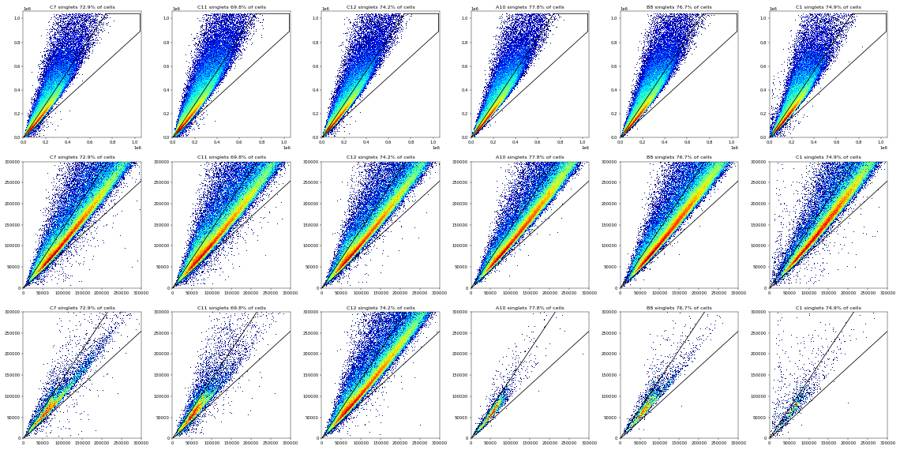
118
tool call · Bash
cd /task; cat > work/gates_prelim.py <<'EOF'
import sys; sys.path.insert(0,'/task/work')
from load import *
from matplotlib.path import Path
CELLS=[(65000,3000),(200000,20000),(700000,150000),(700000,1040000),(150000,1040000),(65000,250000)]
SING=[(1000,0),(1048576,891000),(1048576,1040000),(742857,1040000),(1000,1400)]
def singlets(df):
m=Path(CELLS).contains_points(df[['FSC-A','SSC-A']].values)
m2=Path(SING).contains_points(df[['SSC-H','SSC-A']].values)
return df[m&m2]
EOF
cat > work/valley.py <<'EOF'
import sys; sys.path.insert(0,'/task/work')
from load import *; from gates_prelim import singlets; from tf import *
from scipy.ndimage import gaussian_filter1d
def valley(v,lo,hi,label):
x=tbl(v); edges=np.linspace(tbl(-200),tbl(5000),301); h,_=np.histogram(x,edges); hs=gaussian_filter1d(h.astype(float),3)
c=(edges[:-1]+edges[1:])/2; m=(c>tbl(lo))&(c<tbl(hi)); i=np.argmin(np.where(m,hs,np.inf))
print(f'{label:25s} n={len(v):7d} valley at BL1={float(inv_bl(c[i])):.0f}')
for w in ['C12','C7','C8','C9']:
d=singlets(load(w));
valley(d['BL1-A'].values,100,800,w+' all singlets')
lv=d[d['RL3-A']<400]['BL1-A'].values
if w!='C12': valley(lv,100,800,w+' live')
pool=np.concatenate([singlets(load(w)).query('`RL3-A`<400')['BL1-A'].values for w in WELLS if w not in ('C10','C11','C12','C4','C5','C6','C1','C2')])
valley(pool,100,800,'pooled samples live')
d=singlets(load('C11')); lv=d[d['RL3-A']<400]['BL1-A'].values; print('C11 live BL1 pct 95,99,99.5,99.9', np.percentile(lv,[95,99,99.5,99.9]).round(0))
d=singlets(load('C10')); print('C10 BL1 pct 50,90,95,99', np.percentile(d['BL1-A'],[50,90,95,99]).round(0))
d=singlets(load('C12')); print('C12 RL3 pct 99,99.9,99.99,max', np.percentile(d['RL3-A'],[99,99.9,99.99,100]).round(0), (d['RL3-A']>400).sum(), (d['RL3-A']>300).sum())
d=singlets(load('C10')); print('C10 RL3 pct 99,99.9,99.99,max', np.percentile(d['RL3-A'],[99,99.9,99.99,100]).round(0), (d['RL3-A']>400).sum(), (d['RL3-A']>300).sum())
EOF
python3 work/valley.py119
tool output (error)
Exit code 1
Traceback (most recent call last):
File "/task/work/valley.py", line 10, in <module>
valley(d['BL1-A'].values,100,800,w+' all singlets')
File "/task/work/valley.py", line 5, in valley
x=tbl(v); edges=np.linspace(tbl(-200),tbl(5000),301); h,_=np.histogram(x,edges); hs=gaussian_filter1d(h.astype(float),3)
^^^^^^^^^
File "/task/work/tf.py", line 5, in tbl
def tbl(v): return LBL.apply(np.asarray(v,dtype=float))
^^^^^^^^^^^^^^^^^^^^^^^^^^^^^^^^^^^^
File "/usr/local/lib/python3.12/site-packages/flowkit/_models/transforms/_transforms.py", line 316, in apply
return flowutils.transforms.logicle(
^^^^^^^^^^^^^^^^^^^^^^^^^^^^^
File "/usr/local/lib/python3.12/site-packages/flowutils/transforms.py", line 68, in logicle
channel_indices = range(data.shape[1])
~~~~~~~~~~^^^
IndexError: tuple index out of range120
tool call · Bash
cd /task; cat > work/tf.py <<'EOF'
import flowkit as fk, numpy as np
T=1048576.0; M=6.02
LBL=fk.transforms.LogicleTransform(param_t=T,param_w=1.0,param_m=M,param_a=0)
LRL=fk.transforms.LogicleTransform(param_t=T,param_w=1.0,param_m=M,param_a=0)
def _ap(t,v,inv=False):
a=np.asarray(v,dtype=float); s=a.shape; a=a.reshape(-1,1)
r=t.inverse(a) if inv else t.apply(a)
return r.reshape(s)
def tbl(v): return _ap(LBL,v)
def trl(v): return _ap(LRL,v)
def inv_bl(x): return _ap(LBL,x,True)
def inv_rl(x): return _ap(LRL,x,True)
EOF
python3 work/valley.py121
tool output
C12 all singlets n= 144839 valley at BL1=101 C7 all singlets n= 144776 valley at BL1=101 C7 live n= 18028 valley at BL1=182 C8 all singlets n= 100212 valley at BL1=101 C8 live n= 6232 valley at BL1=285 C9 all singlets n= 102551 valley at BL1=101 C9 live n= 10946 valley at BL1=243 pooled samples live n= 220441 valley at BL1=243 C11 live BL1 pct 95,99,99.5,99.9 [ 257. 722. 976. 1552.] C10 BL1 pct 50,90,95,99 [ 228. 809. 1208. 1958.] C12 RL3 pct 99,99.9,99.99,max [ 180. 296. 13889. 51406.] 89 139 C10 RL3 pct 99,99.9,99.99,max [ 185. 291. 11587. 119588.] 66 122
123
tool call · Bash
cd /task; cat > work/p_pool.py <<'EOF'
import sys; sys.path.insert(0,'/task/work')
from load import *; from gates_prelim import singlets; from tf import *
import matplotlib; matplotlib.use('Agg'); import matplotlib.pyplot as plt
from matplotlib.colors import LogNorm
S={w:singlets(load(w)) for w in WELLS}
import pickle; pickle.dump(S,open('/task/work/singlets.pkl','wb'))
samp=[w for w in WELLS if w not in ('C10','C11','C12','C4','C5','C6','C1','C2')]
pool=pd.concat([S[w] for w in samp])
fig,axs=plt.subplots(1,3,figsize=(30,8))
ticks=[-1000,-100,0,100,200,300,500,1000,2000,5000,1e4,1e5,1e6]; tl=[str(int(t)) for t in ticks]
lv=pool[pool['RL3-A']<400]
axs[0].hist(tbl(lv['BL1-A']),bins=200,range=(0.05,0.75),histtype='step',label='pooled samples live',density=True)
axs[0].hist(tbl(S['C11'].query('`RL3-A`<400')['BL1-A']),bins=200,range=(0.05,0.75),histtype='step',label='C11 live',density=True)
axs[0].hist(tbl(S['C12']['BL1-A']),bins=200,range=(0.05,0.75),histtype='step',label='C12 all',density=True)
axs[0].hist(tbl(S['C10']['BL1-A']),bins=200,range=(0.05,0.75),histtype='step',label='C10 all',density=True)
for v in [250,300,400]: axs[0].axvline(tbl(v),color='k',lw=.7)
axs[0].legend(); axs[0].set_xticks(tbl(ticks)); axs[0].set_xticklabels(tl)
axs[1].hist2d(tbl(pool['BL1-A']),trl(pool['RL3-A']),bins=250,range=[[0.05,0.85],[0.05,0.95]],norm=LogNorm(),cmap='jet'); axs[1].set_title('pooled samples')
axs[2].hist2d(tbl(S['C12']['BL1-A']),np.log10(S['C12']['FSC-A']),bins=200,range=[[0.05,0.85],[4.8,5.8]],norm=LogNorm(),cmap='jet'); axs[2].set_title('C12 BL1 vs FSC')
for ax in axs[1:]:
ax.set_xticks(tbl(ticks)); ax.set_xticklabels(tl,fontsize=8)
for v in [250,300,400]: ax.axvline(tbl(v),color='k',lw=.7)
axs[1].set_yticks(trl(ticks)); axs[1].set_yticklabels(tl);
for v in [400,1000]: axs[1].axhline(trl(v),color='k',lw=.7)
plt.tight_layout(); plt.savefig('/task/work/pool.png',dpi=40)
EOF
python3 work/p_pool.py124
tool output
(Bash completed with no output)
125
tool call · Read
{
"file_path": "/task/work/pool.png"
}126
tool output
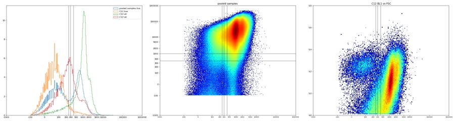
128
thinking
Gate boundaries are set from the controls: caspase edge at BL1-A 300, live top at RL3-A 400, and late-apoptosis lower at RL3-A 1000. I'm building the FlowKit gate set and saving gates.xml next.
129
tool call · Bash
cd /task; mkdir -p outputs; cat > work/build.py <<'EOF'
import sys; sys.path.insert(0,'/task/work')
import flowkit as fk, numpy as np, pandas as pd
from flowkit import Dimension
from flowkit.gates import PolygonGate, RectangleGate
T=1048576.0; M=6.02; W=1.0
# ---- boundaries (raw units) ----
CELLS=[(65000,3000),(200000,20000),(700000,150000),(700000,1040000),(150000,1040000),(65000,250000)]
SING=[(1000,0),(1048576,891000),(1048576,1040000),(742857,1040000),(1000,1400)]
CASP_LO=300.0 # BL1-A caspase-negative / positive boundary (C12, live cells)
LIVE_HI=400.0 # RL3-A Zombie-negative upper edge (C10/C12 99.9th pct ~ 290-296)
LATE_LO=1000.0 # RL3-A Zombie-bright lower edge (C11)
FL_MIN=-100000.0 # below data minimum (-65536) so all negative events are kept
FL_MAX=2097152.0 # above the 2^20 ceiling so saturated events are kept
def build():
g=fk.GatingStrategy()
lt=fk.transforms.LogicleTransform(param_t=T,param_w=W,param_m=M,param_a=0)
g.add_transform('logicle',lt)
L=lambda v: float(lt.apply(np.array([[v]],dtype=float))[0,0])
cells=PolygonGate('Cells',[Dimension('FSC-A','uncompensated'),Dimension('SSC-A','uncompensated')],CELLS)
g.add_gate(cells,('root',))
sing=PolygonGate('Single_Cells',[Dimension('SSC-H','uncompensated'),Dimension('SSC-A','uncompensated')],SING)
g.add_gate(sing,('root','Cells'))
live=RectangleGate('Live',[Dimension('BL1-A','uncompensated','logicle',range_min=L(FL_MIN),range_max=L(FL_MAX)),
Dimension('RL3-A','uncompensated','logicle',range_min=L(FL_MIN),range_max=L(LIVE_HI))])
g.add_gate(live,('root','Cells','Single_Cells'))
casp=RectangleGate('Caspase_pos',[Dimension('BL1-A','uncompensated','logicle',range_min=L(CASP_LO),range_max=L(FL_MAX)),
Dimension('RL3-A','uncompensated','logicle',range_min=L(FL_MIN),range_max=L(LIVE_HI))])
g.add_gate(casp,('root','Cells','Single_Cells','Live'))
late=PolygonGate('Late_apoptosis',[Dimension('BL1-A','uncompensated','logicle'),Dimension('RL3-A','uncompensated','logicle')],
[(L(CASP_LO),L(LATE_LO)),(L(FL_MAX),L(LATE_LO)),(L(FL_MAX),L(FL_MAX)),(L(CASP_LO),L(FL_MAX))])
g.add_gate(late,('root','Cells','Single_Cells'))
return g
if __name__=='__main__':
g=build()
with open('/task/outputs/gates.xml','wb') as fh: fk.export_gatingml(g,fh)
g2=fk.parse_gating_xml('/task/outputs/gates.xml')
print(g2.get_gate_hierarchy('ascii'))
EOF
python3 work/build.py130
tool output (error)
Exit code 1
Traceback (most recent call last):
File "/task/work/build.py", line 4, in <module>
from flowkit.gates import PolygonGate, RectangleGate
ModuleNotFoundError: No module named 'flowkit.gates'131
tool call · Bash
cd /task; python3 -c "import flowkit as fk; print([x for x in dir(fk) if not x.startswith('_')]); print(fk.gates)"132
tool output
['Dimension', 'GatingStrategy', 'Matrix', 'QuadrantDivider', 'RatioDimension', 'Sample', 'Session', 'Workspace', 'exceptions', 'export_gatingml', 'extract_wsp_sample_data', 'gates', 'generate_transforms', 'load_samples', 'parse_gating_xml', 'parse_wsp', 'read_multi_dataset_fcs', 'transforms'] <module 'flowkit._models.gates' from '/usr/local/lib/python3.12/site-packages/flowkit/_models/gates/__init__.py'>
133
tool call · Bash
cd /task; sed -i 's/^from flowkit.gates import PolygonGate, RectangleGate/PolygonGate=fk.gates.PolygonGate; RectangleGate=fk.gates.RectangleGate/' work/build.py; python3 work/build.py && head -c 1500 outputs/gates.xml
134
tool output
root
╰── Cells
╰── Single_Cells
├── Live
│ ╰── Caspase_pos
╰── Late_apoptosis
<?xml version='1.0' encoding='UTF-8'?>
<gating:Gating-ML xmlns:gating="http://www.isac-net.org/std/Gating-ML/v2.0/gating" xmlns:data-type="http://www.isac-net.org/std/Gating-ML/v2.0/datatypes" xmlns:transforms="http://www.isac-net.org/std/Gating-ML/v2.0/transformations">
<transforms:transformation transforms:id="logicle">
<transforms:logicle transforms:T="1048576.0" transforms:W="1.0" transforms:M="6.02" transforms:A="0"/>
</transforms:transformation>
<gating:PolygonGate gating:id="Cells">
<gating:dimension gating:compensation-ref="uncompensated">
<data-type:fcs-dimension data-type:name="FSC-A"/>
</gating:dimension>
<gating:dimension gating:compensation-ref="uncompensated">
<data-type:fcs-dimension data-type:name="SSC-A"/>
</gating:dimension>
<gating:vertex>
<gating:coordinate data-type:value="65000"/>
<gating:coordinate data-type:value="3000"/>
</gating:vertex>
<gating:vertex>
<gating:coordinate data-type:value="200000"/>
<gating:coordinate data-type:value="20000"/>
</gating:vertex>
<gating:vertex>
<gating:coordinate data-type:value="700000"/>
<gating:coordinate data-type:value="150000"/>
</gating:vertex>
<gating:vertex>
<gating:coordinate data-type:value="700000"/>
<gating:coordinate data-type:value="1040000"/>
</gating:vertex>
<gating:vertex>
<gating:coordinate data-type:value="150000"/>
<gating:coordinate data-type:value="1040000"/>
</g136
agent
Saved an early `gates.xml`. Next I'm writing the counting script that applies the saved XML to every file.
137
tool call · Bash
cd /task; cat > work/count.py <<'EOF'
import flowkit as fk, pandas as pd, numpy as np
lay=pd.read_csv('/task/inputs/plate_layout.csv')
g=fk.parse_gating_xml('/task/outputs/gates.xml')
POPS=[('Cells','All_events'),('Single_Cells','Cells'),('Live','Single_Cells'),('Caspase_pos','Live'),('Late_apoptosis','Single_Cells')]
rows=[]
for f,w in zip(lay.file,lay.well):
s=fk.Sample('/task/inputs/raw/'+f)
res=g.gate_sample(s)
cnt={'All_events':s.event_count}
for p,par in POPS:
cnt[p]=int(res.get_gate_membership(p).sum())
for p,par in POPS:
pc=cnt[par]; rows.append(dict(file=f,well=w,population=p,count=cnt[p],parent_population=par,pct_of_parent=round(100*cnt[p]/pc,4) if pc>0 else 0.0))
df=pd.DataFrame(rows); df.to_csv('/task/outputs/counts.csv',index=False)
wide=df.pivot(index='well',columns='population',values='count').loc[lay.well,[p for p,_ in POPS]]
pct=df.pivot(index='well',columns='population',values='pct_of_parent').loc[lay.well,[p for p,_ in POPS]]
pd.set_option('display.width',250)
print(pd.concat([wide,pct.round(1).add_suffix('_%')],axis=1).to_string())
EOF
python3 work/count.py138
tool output
population Cells Single_Cells Live Caspase_pos Late_apoptosis Cells_% Single_Cells_% Live_% Caspase_pos_% Late_apoptosis_% well A1 119601 97241 1280 561 85718 65.2 81.3 1.3 43.8 88.2 A2 143887 111742 4968 1579 95093 64.9 77.7 4.4 31.8 85.1 A3 150513 123053 4187 2222 107473 67.6 81.8 3.4 53.1 87.3 A4 110230 89589 2814 976 78523 68.7 81.3 3.1 34.7 87.6 A5 112615 92330 4832 2244 78559 66.3 82.0 5.2 46.4 85.1 A6 156765 127411 8845 2515 107973 67.9 81.3 6.9 28.4 84.7 A7 183479 139800 8963 2334 116724 64.9 76.2 6.4 26.0 83.5 A8 157372 122232 12003 4058 98293 66.4 77.7 9.8 33.8 80.4 A9 163826 129932 7299 2222 111461 67.7 79.3 5.6 30.4 85.8 A10 220917 171878 6233 1757 149835 65.8 77.8 3.6 28.2 87.2 A11 144594 116092 7344 2815 97783 63.3 80.3 6.3 38.3 84.2 A12 211429 164724 8128 2913 141946 63.9 77.9 4.9 35.8 86.2 B1 163184 127044 10579 3363 102733 64.0 77.9 8.3 31.8 80.9 B2 202381 152778 18059 8569 119167 63.4 75.5 11.8 47.4 78.0 B3 180965 139235 14291 5673 112375 65.7 76.9 10.3 39.7 80.7 B4 139767 112561 4167 1587 96790 63.6 80.5 3.7 38.1 86.0 B5 142624 114692 6319 2475 96434 63.3 80.4 5.5 39.2 84.1 B6 234861 180419 11397 5409 152268 63.6 76.8 6.3 47.5 84.4 B7 122420 102137 3580 1444 89785 65.5 83.4 3.5 40.3 87.9 B8 267762 205247 8063 4294 178277 64.9 76.7 3.9 53.3 86.9 B9 142747 115326 4365 1849 100707 65.1 80.8 3.8 42.4 87.3 B10 120203 100066 3274 1220 86851 64.1 83.2 3.3 37.3 86.8 B11 179742 144827 6376 3314 125891 66.2 80.6 4.4 52.0 86.9 B12 189067 152940 6272 3583 133904 65.9 80.9 4.1 57.1 87.6 C1 169389 126842 2277 821 112267 67.5 74.9 1.8 36.1 88.5 C2 208175 157958 5811 2670 139587 68.2 75.9 3.7 45.9 88.4 C3 274195 204589 11597 6803 173624 65.5 74.6 5.7 58.7 84.9 C4 153422 126158 1281 948 115107 66.7 82.2 1.0 74.0 91.2 C5 138977 114630 1500 1108 104831 67.2 82.5 1.3 73.9 91.5 C6 125469 105451 929 730 98083 66.1 84.0 0.9 78.6 93.0 C7 198639 144776 18028 12221 110060 62.5 72.9 12.5 67.8 76.0 C8 129960 100212 6232 2516 83871 60.4 77.1 6.2 40.4 83.7 C9 136919 102551 10946 5161 80589 61.6 74.9 10.7 47.1 78.6 C10 177923 133079 133013 47378 18 64.3 74.8 100.0 35.6 0.0 C11 223695 156174 19123 764 44806 61.4 69.8 12.2 4.0 28.7 C12 195086 144839 144750 125246 53 63.5 74.2 99.9 86.5 0.0
140
thinking
The counting script runs off the saved XML, with controls C10 and C12 at 100% Live and C11 Caspase_pos at 4% of Live. Next I'm checking each well's stain signature for mislabeling and reviewing GFP in C4–C6.
141
tool call · Bash
cd /task; cat > work/sig.py <<'EOF'
import sys; sys.path.insert(0,'/task/work')
import pickle, numpy as np, pandas as pd
S=pickle.load(open('/task/work/singlets.pkl','rb'))
lay=pd.read_csv('/task/inputs/plate_layout.csv').set_index('well')
rows=[]
for w,d in S.items():
bl=d['BL1-A'].values; rl=d['RL3-A'].values
lv=rl<400
rows.append(dict(well=w,construct=lay.loc[w,'construct'],stain=lay.loc[w,'stain'],n=len(d),RL3_med=int(np.median(rl)),f_RL3gt1e3=round((rl>1000).mean(),3),
BL1_med=int(np.median(bl)),BL1_p95=int(np.percentile(bl,95)),f_BL1gt1e4=round((bl>1e4).mean()*100,3),f_BL1gt5e3=round((bl>5e3).mean()*100,2),
live_BL1_med=int(np.median(bl[lv])),live_BL1_p90=int(np.percentile(bl[lv],90)), live_f_gt1e4=round((bl[lv]>1e4).mean()*100,2),
SSC_med=int(np.median(d['SSC-A'])),FSC_med=int(np.median(d['FSC-A']))))
r=pd.DataFrame(rows); pd.set_option('display.width',250); print(r.to_string())
EOF
python3 work/sig.py142
tool output
well construct stain n RL3_med f_RL3gt1e3 BL1_med BL1_p95 f_BL1gt1e4 f_BL1gt5e3 live_BL1_med live_BL1_p90 live_f_gt1e4 SSC_med FSC_med 0 A1 RSV zombie_caspase 97241 35664 0.980 875 2259 0.001 0.10 193 719 0.00 180802 125681 1 A2 RSV zombie_caspase 111742 36675 0.946 871 2358 0.002 0.16 121 815 0.00 172158 125301 2 A3 RSV zombie_caspase 123053 25881 0.941 880 2455 0.002 0.14 344 792 0.00 174462 125098 3 A4 hSyn zombie_caspase 89589 21796 0.956 893 2284 0.001 0.15 126 716 0.00 187763 129525 4 A5 hSyn zombie_caspase 92330 12667 0.924 869 2253 0.002 0.14 246 916 0.00 178852 123906 5 A6 hSyn zombie_caspase 127411 29774 0.914 898 2414 0.004 0.17 97 759 0.01 172511 126572 6 A7 9523 zombie_caspase 139800 26748 0.923 914 2396 0.003 0.21 99 800 0.02 168245 123652 7 A8 9523 zombie_caspase 122232 18785 0.874 959 2498 0.009 0.29 125 947 0.05 172469 127383 8 A9 9523 zombie_caspase 129932 31902 0.933 912 2380 0.005 0.20 112 914 0.04 177560 125075 9 A10 3945 zombie_caspase 171878 30355 0.954 921 2434 0.001 0.19 98 721 0.02 175381 125116 10 A11 3945 zombie_caspase 116092 20487 0.917 981 2497 0.003 0.25 150 1025 0.03 172982 122675 11 A12 3945 zombie_caspase 164724 22381 0.936 940 2481 0.007 0.23 130 973 0.02 173348 123140 12 B1 9421 zombie_caspase 127044 25734 0.896 899 2318 0.002 0.18 118 916 0.01 170539 126285 13 B2 9421 zombie_caspase 152778 8683 0.843 991 2565 0.015 0.29 254 1137 0.08 167179 124314 14 B3 9421 zombie_caspase 139235 13376 0.868 996 2570 0.011 0.29 163 1063 0.06 172008 126147 15 B4 3503 zombie_caspase 112561 24255 0.950 838 2247 0.004 0.18 142 819 0.00 174966 124857 16 B5 3503 zombie_caspase 114692 14704 0.924 925 2346 0.002 0.16 158 939 0.03 178630 125147 17 B6 3503 zombie_caspase 180419 13261 0.907 1005 2649 0.003 0.29 254 1094 0.03 171177 122523 18 B7 8820 zombie_caspase 102137 17251 0.948 891 2334 0.000 0.15 171 772 0.00 174741 126477 19 B8 8820 zombie_caspase 205247 11903 0.933 904 2403 0.004 0.19 353 944 0.06 170056 121092 20 B9 8820 zombie_caspase 115326 18670 0.946 869 2409 0.006 0.20 192 847 0.05 178447 126308 21 B10 8790 zombie_caspase 100066 32917 0.955 849 2219 0.003 0.13 145 839 0.00 175593 124756 22 B11 8790 zombie_caspase 144827 14674 0.934 940 2437 0.008 0.21 326 1069 0.08 179908 125020 23 B12 8790 zombie_caspase 152940 11151 0.935 914 2433 0.005 0.18 399 1027 0.05 177253 122758 24 C1 3945_3503 zombie_caspase 126842 29062 0.977 643 1832 0.003 0.04 150 679 0.00 186171 121831 25 C2 3945_3503 zombie_caspase 157958 22151 0.950 770 2090 0.008 0.09 218 1102 0.07 185060 122627 26 C3 3945_3503 zombie_caspase 204589 10234 0.909 880 2301 0.008 0.19 408 1011 0.09 173752 123332 27 C4 AAV1_GFP zombie_caspase 126158 17473 0.980 827 2348 0.224 0.62 460 916 0.39 178735 123615 28 C5 AAV1_GFP zombie_caspase 114630 17320 0.972 854 2281 0.197 0.55 471 894 0.40 185999 125645 29 C6 AAV1_GFP zombie_caspase 105451 23630 0.983 887 2413 0.240 0.63 513 1007 0.43 180077 121601 30 C7 no_virus zombie_caspase 144776 8177 0.809 975 2773 0.017 0.42 590 1298 0.05 158871 119706 31 C8 no_virus zombie_caspase 100212 30058 0.921 906 2508 0.022 0.33 141 1261 0.11 161048 120699 32 C9 no_virus zombie_caspase 102551 11811 0.850 993 2781 0.022 0.50 240 1216 0.16 160620 123160 33 C10 no_virus none 133079 28 0.000 228 1208 0.000 0.00 228 808 0.00 168097 125870 34 C11 no_virus zombie_only 156174 8154 0.828 191 1191 0.000 0.00 61 178 0.00 160670 122550 35 C12 no_virus ca … [141 more characters not shown]
144
thinking
GFP shows up only in C4–C6, and only weakly, at about 0.2% of singlets above 1e4, with no sample well looking clearly stained. I'm checking the intermittent dropouts in C7–C11 and the end-of-run declines next.
145
tool call · Bash
cd /task; cat > work/p_time3.py <<'EOF'
import sys; sys.path.insert(0,'/task/work')
from load import *; from tf import *
import matplotlib; matplotlib.use('Agg'); import matplotlib.pyplot as plt
ws=sys.argv[1].split(','); out=sys.argv[2]
fig,axs=plt.subplots(len(ws),1,figsize=(22,3.2*len(ws)))
for i,w in enumerate(ws):
df=load(w); t=df.Time.values
bw=0.05; bins=np.arange(0,41.1,bw); h,_=np.histogram(t,bins)
ax=axs[i]; ax.plot(bins[:-1],h/bw,'k-',lw=.7); ax.set_ylabel('ev/s'); ax.set_title(w)
ax2=ax.twinx(); idx=np.digitize(t,bins)
g=pd.DataFrame({'b':idx,'rl':trl(df['RL3-A'].values),'bl':tbl(df['BL1-A'].values),'f':np.log10(df['FSC-A'].clip(lower=1000))}).groupby('b').median()
x=bins[np.clip(g.index.values,1,len(bins)-1)-1]
ax2.plot(x,g.rl,'r-',lw=.6,label='RL3'); ax2.plot(x,g.bl,'g-',lw=.6,label='BL1'); ax2.plot(x,g.f/6,'b-',lw=.6,label='FSC/6')
ax2.legend(loc='lower left'); ax.set_xlim(0,41.1)
plt.tight_layout(); plt.savefig(out,dpi=40)
EOF
python3 work/p_time3.py C7,C8,C9,C10,C11,C12,B2,A1 work/time3.png146
tool output
(Bash completed with no output)
147
tool call · Read
{
"file_path": "/task/work/time3.png"
}148
tool output
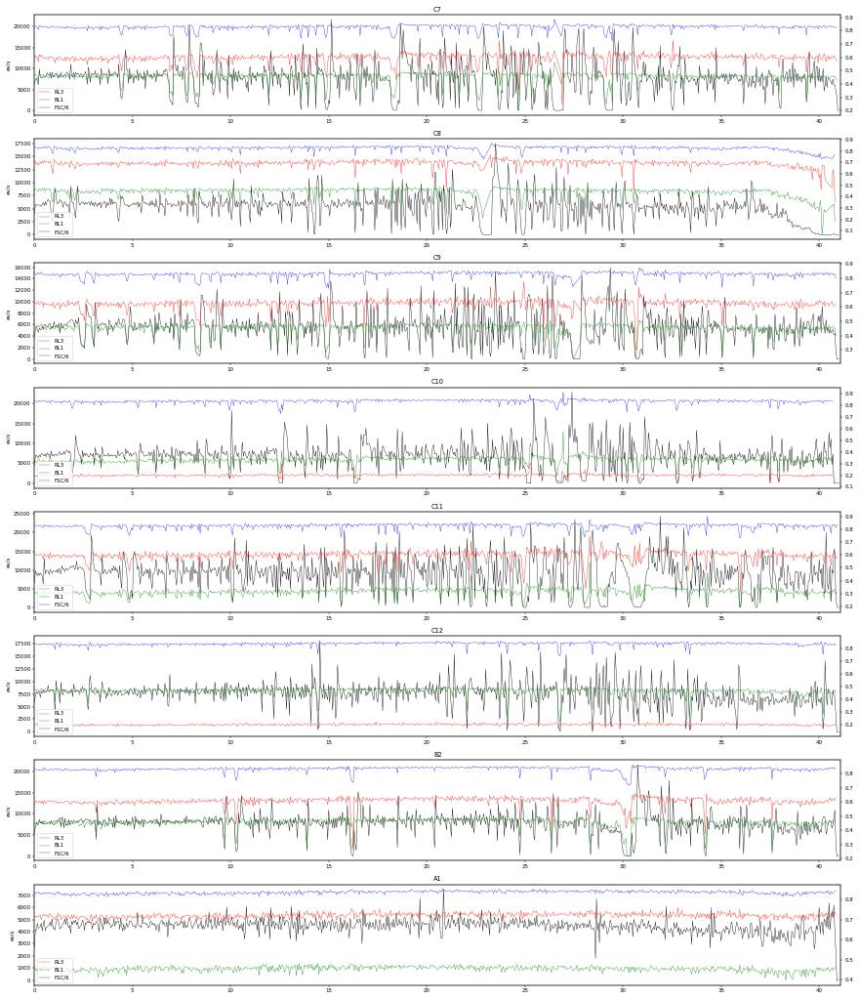
150
tool call · Bash
cd /task; cat > work/qc.py <<'EOF'
import sys; sys.path.insert(0,'/task/work')
from load import *; from tf import *
from scipy.ndimage import uniform_filter1d
rows=[]
for w in WELLS:
df=load(w); t=df.Time.values; T=t.max()
bw=0.1; bins=np.arange(0,T+bw,bw); h,_=np.histogram(t,bins); h=h[:-1].astype(float); c=bins[:-2]+bw/2
med=np.median(h); hs=uniform_filter1d(h,5)
# start: first time smoothed rate >50% median
t_start=c[np.argmax(hs>0.5*med)]
# end decline: last time smoothed rate >= 50% median
t_end=c[len(hs)-1-np.argmax(hs[::-1]>=0.5*med)]
tail=T-t_end
# events during tail and FSC median there
n_tail=(t>t_end).sum(); n_head=(t<t_start).sum()
# dropouts: 0.1s bins with rate < 20% of median within [t_start,t_end]
m=(c>t_start)&(c<t_end); drop=(h[m]<0.2*med).sum()*bw
# 0.5s bins median drift
b5=np.arange(0,T+0.5,0.5); idx=np.digitize(t,b5)
g=pd.DataFrame({'b':idx,'f':np.log10(df['FSC-A'].clip(lower=1e3)),'s':np.log10(df['SSC-A'].clip(lower=1e3)),'rl':trl(df['RL3-A'].values),'bl':tbl(df['BL1-A'].values)}).groupby('b').agg(['median','size'])
g=g[g[('f','size')]>50]
dev=0
for k in ['f','s','rl','bl']:
x=g[(k,'median')]; mad=np.median(np.abs(x-x.median()))*1.4826+1e-6
dev=np.maximum(dev,np.abs(x-x.median())/mad)
bad=(dev>4); frac_ev_bad=g[('f','size')][bad].sum()/len(t)
rows.append(dict(well=w,t_start=round(t_start,2),n_before_start=n_head,t_end=round(t_end,2),tail_s=round(tail,2),n_tail=n_tail,dropout_s=round(drop,1),bins_bad=int(bad.sum()),frac_ev_bad=round(frac_ev_bad,3)))
r=pd.DataFrame(rows); pd.set_option('display.width',250); print(r.to_string()); r.to_csv('/task/work/qc.csv',index=False)
EOF
python3 work/qc.py151
tool output
well t_start n_before_start t_end tail_s n_tail dropout_s bins_bad frac_ev_bad 0 A1 0.05 138 40.75 0.14 609 0.0 1 0.011 1 A2 0.05 275 40.75 0.14 621 0.0 1 0.008 2 A3 0.05 199 40.85 0.11 529 0.1 0 0.000 3 A4 0.05 129 40.45 0.63 954 0.0 4 0.023 4 A5 0.05 119 40.75 0.11 511 0.2 0 0.000 5 A6 0.05 220 40.75 0.15 390 0.0 1 0.005 6 A7 0.05 264 40.55 0.10 621 0.3 1 0.009 7 A8 0.05 196 40.85 0.09 507 0.2 0 0.000 8 A9 0.05 212 40.85 0.09 241 0.3 2 0.013 9 A10 0.05 314 40.55 0.09 347 0.0 2 0.009 10 A11 0.05 190 40.85 0.10 725 0.4 0 0.000 11 A12 0.05 292 40.35 0.55 1982 0.0 2 0.011 12 B1 0.05 218 39.75 1.23 2653 0.3 3 0.014 13 B2 0.05 260 40.75 0.12 1151 0.8 0 0.000 14 B3 0.05 252 40.15 0.73 1784 0.4 3 0.016 15 B4 0.05 186 40.85 0.08 398 0.2 0 0.000 16 B5 0.05 200 40.45 0.54 1162 0.2 2 0.012 17 B6 0.05 297 40.75 0.12 1290 0.3 0 0.000 18 B7 0.05 138 40.85 0.15 745 0.0 0 0.000 19 B8 0.05 493 40.55 0.10 866 0.1 0 0.000 20 B9 0.05 200 39.55 1.41 2236 0.0 4 0.019 21 B10 0.05 143 40.85 0.09 415 0.4 1 0.009 22 B11 0.05 264 39.35 1.59 3059 0.0 4 0.016 23 B12 0.05 247 40.75 0.07 496 0.0 3 0.030 24 C1 7.05 1829 40.65 0.07 45 5.6 5 0.011 25 C2 5.85 1977 40.85 0.08 511 2.2 7 0.005 26 C3 0.05 301 40.65 0.09 966 0.3 0 0.000 27 C4 0.05 146 40.85 0.12 514 0.0 3 0.032 28 C5 0.05 257 39.35 1.56 1985 0.0 7 0.052 29 C6 0.05 151 39.25 1.77 2059 0.0 5 0.023 30 C7 0.05 312 40.85 0.08 390 2.3 1 0.002 31 C8 0.05 200 38.45 2.36 2010 0.9 4 0.018 32 C9 0.05 188 40.75 0.12 505 1.7 2 0.016 33 C10 0.05 220 40.65 0.09 602 2.1 1 0.002 34 C11 0.05 333 40.85 0.06 142 2.6 1 0.000 35 C12 0.05 291 40.75 0.13 836 0.4 1 0.010
153
tool call · Bash
cd /task; cat > work/p_c4c9.py <<'EOF'
import sys; sys.path.insert(0,'/task/work')
import pickle; from load import *; from tf import *
import matplotlib; matplotlib.use('Agg'); import matplotlib.pyplot as plt
from matplotlib.colors import LogNorm
S=pickle.load(open('/task/work/singlets.pkl','rb'))
ticks=[-1000,-100,0,100,300,1000,3000,1e4,1e5,1e6]; tl=[str(int(t)) for t in ticks]
fig,axs=plt.subplots(2,1,figsize=(16,12))
cols={'C4':'lime','C5':'green','C6':'darkgreen','C7':'b','C8':'c','C9':'m','C11':'r','C12':'orange','A8':'gray','B2':'k'}
for w,c in cols.items():
d=S[w]; lv=d[d['RL3-A']<400]['BL1-A']; dd=d[d['RL3-A']>1000]['BL1-A']
axs[0].hist(tbl(lv),bins=150,range=(0.05,0.85),histtype='step',color=c,label=f'{w} live',density=True)
axs[1].hist(tbl(dd),bins=150,range=(0.05,0.85),histtype='step',color=c,label=f'{w} RL3>1e3',density=True)
for ax in axs: ax.set_xticks(tbl(ticks)); ax.set_xticklabels(tl); ax.legend(); ax.grid(alpha=.3); ax.axvline(tbl(300),color='k')
plt.savefig('/task/work/c4c9.png',dpi=50)
EOF
python3 work/p_c4c9.py154
tool output
(Bash completed with no output)
155
tool call · Read
{
"file_path": "/task/work/c4c9.png"
}156
tool output
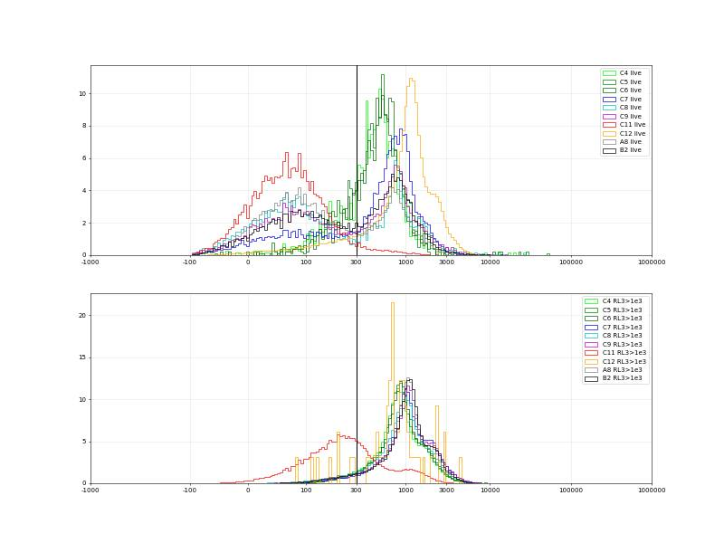
158
thinking
C1 and C2 look clearly interrupted, and C8 plus a few others lose rate at the end, so I'm measuring how much the unstable time segments shift the gated percentages to decide which are unusable.
159
tool call · Bash
cd /task; cat > work/seg.py <<'EOF'
import sys; sys.path.insert(0,'/task/work')
import flowkit as fk
from load import *
g=fk.parse_gating_xml('/task/outputs/gates.xml')
qc=pd.read_csv('/task/work/qc.csv').set_index('well')
lay=pd.read_csv('/task/inputs/plate_layout.csv').set_index('well')
rows=[]
for w in WELLS:
s=fk.Sample('/task/inputs/raw/'+lay.loc[w,'file']); r=g.gate_sample(s)
t=s.get_channel_events(s.get_channel_index('Time'),source='raw')
M={p:r.get_gate_membership(p) for p in ['Cells','Single_Cells','Live','Caspase_pos','Late_apoptosis']}
def stats(sel):
n=sel.sum(); c=M['Cells'][sel].sum(); sc=M['Single_Cells'][sel].sum(); l=M['Live'][sel].sum(); cp=M['Caspase_pos'][sel].sum(); la=M['Late_apoptosis'][sel].sum()
return dict(n=n,cells=100*c/max(n,1),live=100*l/max(sc,1),casp=100*cp/max(l,1),late=100*la/max(sc,1))
t0,t1=qc.loc[w,'t_start'],qc.loc[w,'t_end']
a=stats(np.ones(len(t),bool)); b=stats((t>=t0)&(t<=t1)); tail=stats(t>t1); head=stats(t<20); h2=stats(t>=20)
rows.append(dict(well=w,all_live=round(a['live'],2),stable_live=round(b['live'],2),all_casp=round(a['casp'],1),stable_casp=round(b['casp'],1),
tail_n=tail['n'],tail_cells=round(tail['cells'],1),all_cells=round(a['cells'],1),first_half_live=round(head['live'],2),second_half_live=round(h2['live'],2),
fh_casp=round(head['casp'],1),sh_casp=round(h2['casp'],1),fh_late=round(head['late'],1),sh_late=round(h2['late'],1)))
r=pd.DataFrame(rows); pd.set_option('display.width',250); print(r.to_string()); r.to_csv('/task/work/seg.csv',index=False)
EOF
python3 work/seg.py160
tool output
well all_live stable_live all_casp stable_casp tail_n tail_cells all_cells first_half_live second_half_live fh_casp sh_casp fh_late sh_late 0 A1 1.32 1.32 43.8 43.9 609 67.8 65.2 1.28 1.36 45.7 42.1 88.6 87.7 1 A2 4.45 4.45 31.8 31.7 621 59.3 64.9 4.43 4.46 32.9 30.6 85.5 84.7 2 A3 3.40 3.40 53.1 53.1 529 62.9 67.6 3.44 3.36 53.2 52.9 87.7 87.0 3 A4 3.14 3.15 34.7 34.7 954 57.9 68.7 3.22 3.06 34.4 35.0 88.0 87.3 4 A5 5.23 5.23 46.4 46.4 511 69.1 66.3 5.23 5.24 47.2 45.6 85.5 84.7 5 A6 6.94 6.95 28.4 28.4 390 51.8 67.9 6.89 6.99 27.7 29.2 85.0 84.5 6 A7 6.41 6.41 26.0 26.0 621 68.1 64.9 6.30 6.53 25.8 26.3 83.9 83.1 7 A8 9.82 9.81 33.8 33.8 507 66.1 66.4 9.76 9.88 34.5 33.1 80.6 80.2 8 A9 5.62 5.62 30.4 30.5 241 57.7 67.7 5.66 5.57 31.0 29.9 86.0 85.6 9 A10 3.63 3.63 28.2 28.1 347 55.0 65.8 3.65 3.60 27.6 28.9 87.6 86.8 10 A11 6.33 6.32 38.3 38.3 725 63.4 63.3 6.27 6.38 38.6 38.0 84.6 83.9 11 A12 4.93 4.94 35.8 35.8 1982 52.6 63.9 5.07 4.79 35.3 36.4 86.4 86.0 12 B1 8.33 8.35 31.8 31.8 2653 47.9 64.0 8.28 8.38 32.2 31.4 81.2 80.5 13 B2 11.82 11.82 47.5 47.4 1151 64.5 63.4 11.90 11.74 48.2 46.6 78.2 77.8 14 B3 10.26 10.28 39.7 39.7 1784 50.4 65.7 10.33 10.19 39.9 39.5 81.0 80.4 15 B4 3.70 3.70 38.1 38.0 398 64.8 63.6 3.69 3.72 37.9 38.2 86.3 85.7 16 B5 5.51 5.52 39.2 39.1 1162 52.2 63.3 5.42 5.60 39.7 38.6 84.4 83.8 17 B6 6.32 6.32 47.5 47.5 1290 64.9 63.6 6.19 6.44 47.2 47.7 84.6 84.2 18 B7 3.51 3.49 40.3 40.3 745 69.4 65.5 3.48 3.53 40.9 39.8 88.2 87.7 19 B8 3.93 3.93 53.3 53.3 866 65.4 64.9 3.97 3.88 53.9 52.5 87.1 86.7 20 B9 3.78 3.80 42.4 42.3 2236 47.8 65.1 3.72 3.86 42.4 42.3 87.7 86.9 21 B10 3.27 3.27 37.3 37.2 415 65.5 64.1 3.27 3.27 38.5 36.0 87.1 86.5 22 B11 4.40 4.42 52.0 52.0 3059 47.4 66.2 4.41 4.39 51.2 52.9 87.2 86.7 23 B12 4.10 4.10 57.1 57.1 496 65.5 65.9 4.14 4.06 57.4 56.8 87.9 87.2 24 C1 1.80 1.80 36.1 36.2 45 68.9 67.5 2.08 1.68 47.4 30.6 90.4 87.8 25 C2 3.68 3.67 45.9 46.0 511 65.2 68.2 3.91 3.59 52.6 43.0 89.9 87.7 26 C3 5.67 5.67 58.7 58.6 966 64.6 65.5 5.64 5.70 59.0 58.4 84.9 84.9 27 C4 1.02 1.01 74.0 74.1 514 62.1 66.7 0.99 1.04 75.9 72.3 91.5 90.9 28 C5 1.31 1.31 73.9 74.0 1985 48.9 67.2 1.29 1.32 75.4 72.3 91.8 91.1 29 C6 0.88 0.88 78.6 78.4 2059 47.3 66.1 0.88 0.88 80.0 77.0 93.4 92.6 30 C7 12.45 12.45 67.8 67.8 390 58.5 62.5 12.32 12.59 69.3 66.3 76.2 75.8 31 C8 6.22 6.24 40.4 40.3 2010 38.2 60.4 6.23 6.20 39.6 41.3 84.0 83.4 32 C9 10.67 10.67 47.1 47.1 505 56.2 61.6 10.50 10.85 47.0 47.3 78.9 78.2 33 C10 99.95 99.95 35.6 35.6 602 64.0 64.3 99.97 99.93 34.2 37.1 0.0 0.0 34 C11 12.24 12.25 4.0 4.0 142 59.2 61.4 12.01 12.49 3.7 4.3 27.8 29.6 35 C12 99.94 99.94 86.5 86.5 836 64.2 63.5 99.95 99.93 86.7 86.4 0.0 0.0
162
thinking
Trimming the run's end-of-run tails barely moves any percentage (C8 Live 6.22% → 6.24%), but C1 and C2 swing badly between halves (Caspase_pos 47%→31% and 53%→43%). I'm checking the raw files for injected or duplicated data next.
163
tool call · Bash
cd /task; cat > work/integrity.py <<'EOF'
import sys; sys.path.insert(0,'/task/work')
from load import *
for w in WELLS:
df=load(w); t=df.Time.values
nonmono=(np.diff(t)<0).sum()
dup=df.duplicated().sum()
dupf=df.drop(columns='Time').duplicated().sum()
# value quantization check
bl=df['BL1-A'].values
print(w, 'nonmono',nonmono,'dup',dup,'dup_noTime',dupf, 'frac_int_BL1 %.3f'%np.mean(bl==np.round(bl)), 'zeros FSC',(df['FSC-A']<=0).sum(), 'RL3==-65536',(df['RL3-A']<=-65536).sum(),'BL1==-65536',(df['BL1-A']<=-65536).sum())
EOF
python3 work/integrity.py164
tool output
A1 nonmono 0 dup 0 dup_noTime 0 frac_int_BL1 1.000 zeros FSC 0 RL3==-65536 0 BL1==-65536 0 A2 nonmono 0 dup 0 dup_noTime 0 frac_int_BL1 1.000 zeros FSC 3 RL3==-65536 6 BL1==-65536 0 A3 nonmono 0 dup 0 dup_noTime 0 frac_int_BL1 1.000 zeros FSC 7 RL3==-65536 11 BL1==-65536 0 A4 nonmono 0 dup 0 dup_noTime 0 frac_int_BL1 1.000 zeros FSC 1 RL3==-65536 0 BL1==-65536 0 A5 nonmono 0 dup 0 dup_noTime 0 frac_int_BL1 1.000 zeros FSC 0 RL3==-65536 0 BL1==-65536 0 A6 nonmono 0 dup 0 dup_noTime 0 frac_int_BL1 1.000 zeros FSC 1 RL3==-65536 0 BL1==-65536 0 A7 nonmono 1 dup 0 dup_noTime 0 frac_int_BL1 1.000 zeros FSC 14 RL3==-65536 15 BL1==-65536 0 A8 nonmono 0 dup 0 dup_noTime 0 frac_int_BL1 1.000 zeros FSC 2 RL3==-65536 3 BL1==-65536 0 A9 nonmono 0 dup 0 dup_noTime 0 frac_int_BL1 1.000 zeros FSC 1 RL3==-65536 5 BL1==-65536 0 A10 nonmono 0 dup 0 dup_noTime 0 frac_int_BL1 1.000 zeros FSC 3 RL3==-65536 1 BL1==-65536 0 A11 nonmono 0 dup 0 dup_noTime 0 frac_int_BL1 1.000 zeros FSC 1 RL3==-65536 4 BL1==-65536 0 A12 nonmono 0 dup 0 dup_noTime 0 frac_int_BL1 1.000 zeros FSC 17 RL3==-65536 0 BL1==-65536 0 B1 nonmono 0 dup 0 dup_noTime 0 frac_int_BL1 1.000 zeros FSC 6 RL3==-65536 4 BL1==-65536 0 B2 nonmono 0 dup 0 dup_noTime 0 frac_int_BL1 1.000 zeros FSC 15 RL3==-65536 2 BL1==-65536 0 B3 nonmono 0 dup 0 dup_noTime 0 frac_int_BL1 1.000 zeros FSC 19 RL3==-65536 1 BL1==-65536 0 B4 nonmono 0 dup 0 dup_noTime 0 frac_int_BL1 1.000 zeros FSC 11 RL3==-65536 18 BL1==-65536 0 B5 nonmono 0 dup 0 dup_noTime 0 frac_int_BL1 1.000 zeros FSC 2 RL3==-65536 1 BL1==-65536 0 B6 nonmono 0 dup 0 dup_noTime 0 frac_int_BL1 1.000 zeros FSC 9 RL3==-65536 3 BL1==-65536 0 B7 nonmono 0 dup 0 dup_noTime 0 frac_int_BL1 1.000 zeros FSC 0 RL3==-65536 0 BL1==-65536 0 B8 nonmono 1 dup 0 dup_noTime 0 frac_int_BL1 1.000 zeros FSC 0 RL3==-65536 0 BL1==-65536 0 B9 nonmono 0 dup 0 dup_noTime 0 frac_int_BL1 1.000 zeros FSC 7 RL3==-65536 0 BL1==-65536 0 B10 nonmono 0 dup 0 dup_noTime 0 frac_int_BL1 1.000 zeros FSC 2 RL3==-65536 12 BL1==-65536 0 B11 nonmono 0 dup 0 dup_noTime 0 frac_int_BL1 1.000 zeros FSC 0 RL3==-65536 0 BL1==-65536 0 B12 nonmono 0 dup 0 dup_noTime 0 frac_int_BL1 1.000 zeros FSC 0 RL3==-65536 0 BL1==-65536 0 C1 nonmono 0 dup 0 dup_noTime 0 frac_int_BL1 1.000 zeros FSC 518 RL3==-65536 0 BL1==-65536 0 C2 nonmono 0 dup 0 dup_noTime 0 frac_int_BL1 1.000 zeros FSC 391 RL3==-65536 8 BL1==-65536 0 C3 nonmono 0 dup 0 dup_noTime 0 frac_int_BL1 1.000 zeros FSC 25 RL3==-65536 0 BL1==-65536 0 C4 nonmono 0 dup 0 dup_noTime 0 frac_int_BL1 1.000 zeros FSC 5 RL3==-65536 0 BL1==-65536 0 C5 nonmono 0 dup 0 dup_noTime 0 frac_int_BL1 1.000 zeros FSC 0 RL3==-65536 0 BL1==-65536 0 C6 nonmono 0 dup 0 dup_noTime 0 frac_int_BL1 1.000 zeros FSC 4 RL3==-65536 0 BL1==-65536 0 C7 nonmono 0 dup 0 dup_noTime 0 frac_int_BL1 1.000 zeros FSC 161 RL3==-65536 126 BL1==-65536 17 C8 nonmono 0 dup 0 dup_noTime 0 frac_int_BL1 1.000 zeros FSC 57 RL3==-65536 100 BL1==-65536 3 C9 nonmono 0 dup 0 dup_noTime 0 frac_int_BL1 1.000 zeros FSC 83 RL3==-65536 102 BL1==-65536 13 C10 nonmono 0 dup 0 dup_noTime 0 frac_int_BL1 1.000 zeros FSC 71 RL3==-65536 0 BL1==-65536 0 C11 nonmono 0 dup 0 dup_noTime 0 frac_int_BL1 1.000 zeros FSC 135 RL3==-65536 121 BL1==-65536 0 C12 nonmono 0 dup 0 dup_noTime 0 frac_int_BL1 1.000 zeros FSC 34 RL3==-65536 0 BL1==-65536 0
166
tool call · Bash
cd /task; cat > work/tail.py <<'EOF'
import sys; sys.path.insert(0,'/task/work')
from load import *
for w in ['C8','C6','C5','B11','B9','B1','B3','A4','A12','C1','A1','C3']:
df=load(w); t=df.Time.values; T=t.max()
mid=((t>=20)&(t<35)).sum()/15
b=np.arange(T-3.0,T+0.001,0.25); h,_=np.histogram(t,b)
f=[int(np.median(df['FSC-A'][(t>=b[i])&(t<b[i+1])])) if h[i]>0 else 0 for i in range(len(h))]
print(f'{w:4s} mid={mid:6.0f}/s last3s rate/mid (0.25s bins):',' '.join(f'{x/0.25/mid:.2f}' for x in h))
print(' FSC med:',' '.join(f'{x//1000}k' for x in f))
EOF
python3 work/tail.py167
tool output
C8 mid= 5264/s last3s rate/mid (0.25s bins): 0.77 0.80 0.61 0.36 0.31 0.23 0.24 0.10 0.03 0.00 0.00 0.01
FSC med: 82k 71k 69k 56k 57k 48k 46k 37k 31k 27k 31k 30k
C6 mid= 4754/s last3s rate/mid (0.25s bins): 0.75 0.66 0.68 0.63 0.56 0.48 0.33 0.25 0.25 0.22 0.14 0.03
FSC med: 102k 95k 97k 77k 89k 74k 76k 68k 54k 48k 43k 35k
C5 mid= 5268/s last3s rate/mid (0.25s bins): 1.00 0.84 0.69 0.67 0.68 0.57 0.44 0.31 0.26 0.21 0.14 0.04
FSC med: 109k 109k 105k 100k 95k 81k 82k 73k 59k 44k 47k 34k
B11 mid= 6694/s last3s rate/mid (0.25s bins): 0.91 0.78 0.74 0.62 0.62 0.56 0.44 0.31 0.30 0.24 0.23 0.12
FSC med: 106k 108k 103k 99k 91k 87k 77k 66k 59k 50k 48k 41k
B9 mid= 5325/s last3s rate/mid (0.25s bins): 1.16 0.93 0.76 0.88 0.76 0.65 0.53 0.42 0.30 0.25 0.21 0.18
FSC med: 107k 102k 99k 100k 93k 79k 80k 68k 60k 62k 47k 43k
B1 mid= 6259/s last3s rate/mid (0.25s bins): 1.25 1.12 0.92 0.86 0.87 0.79 0.61 0.52 0.38 0.34 0.25 0.23
FSC med: 104k 106k 107k 102k 99k 101k 82k 71k 67k 62k 50k 50k
B3 mid= 6741/s last3s rate/mid (0.25s bins): 1.17 1.05 0.86 1.01 0.79 0.73 0.70 0.62 0.59 0.48 0.35 0.27
FSC med: 106k 109k 105k 111k 103k 102k 90k 88k 80k 77k 61k 58k
A4 mid= 3884/s last3s rate/mid (0.25s bins): 1.07 0.97 1.03 1.18 1.32 0.73 0.65 0.65 0.61 0.48 0.45 0.29
FSC med: 104k 116k 117k 111k 118k 113k 110k 101k 91k 92k 81k 62k
A12 mid= 7958/s last3s rate/mid (0.25s bins): 0.98 0.95 1.13 1.46 0.88 0.83 0.73 0.70 0.66 0.58 0.49 0.40
FSC med: 108k 100k 95k 101k 104k 99k 99k 96k 84k 80k 74k 64k
C1 mid= 9800/s last3s rate/mid (0.25s bins): 0.38 0.29 0.25 0.26 0.16 0.03 0.01 0.00 0.00 0.00 0.01 0.46
FSC med: 67k 54k 56k 52k 40k 32k 27k 26k 30k 24k 63k 126k
A1 mid= 4485/s last3s rate/mid (0.25s bins): 0.84 0.76 0.77 0.86 0.96 0.97 0.91 0.82 1.03 1.02 1.13 1.05
FSC med: 91k 96k 88k 89k 94k 98k 102k 104k 106k 104k 105k 104k
C3 mid= 10363/s last3s rate/mid (0.25s bins): 0.83 0.85 0.92 0.96 1.01 0.97 0.41 1.21 1.02 1.02 1.04 1.02
FSC med: 106k 105k 106k 111k 110k 105k 86k 99k 100k 97k 110k 106k169
thinking
Clogging and interrupted flow get flagged as C1 and C2, and C8 gets flagged for ran_dry since its rate falls to 0–3% for the final second. B9, B11, C5 and C6 also decline but stay usable, so next I'll run a sensitivity check on the fluorescence boundaries.
170
tool call · Bash
cd /task; cat > work/sens.py <<'EOF'
import sys; sys.path.insert(0,'/task/work')
import pickle, numpy as np, pandas as pd
S=pickle.load(open('/task/work/singlets.pkl','rb'))
ws=['A1','A8','B2','B8','C3','C7','C8','C9','C11','C12','C10']
print('Live% of singlets for RL3 upper 300/400/500')
for w in ws:
rl=S[w]['RL3-A'].values; bl=S[w]['BL1-A'].values
lv=[100*(rl<x).mean() for x in (300,400,500)]
cp=[100*((bl>c)&(rl<400)).sum()/(rl<400).sum() for c in (250,300,400)]
la=[100*((bl>300)&(rl>x)).mean() for x in (700,1000,2000)]
print(f'{w:4s} live {lv[0]:.2f} {lv[1]:.2f} {lv[2]:.2f} | casp% (250/300/400) {cp[0]:.1f} {cp[1]:.1f} {cp[2]:.1f} | late% (700/1000/2000) {la[0]:.1f} {la[1]:.1f} {la[2]:.1f}')
EOF
python3 work/sens.py171
tool output
Live% of singlets for RL3 upper 300/400/500 A1 live 1.20 1.32 1.41 | casp% (250/300/400) 45.9 43.8 40.0 | late% (700/1000/2000) 88.3 88.1 87.5 A8 live 9.29 9.82 10.37 | casp% (250/300/400) 36.2 33.8 30.2 | late% (700/1000/2000) 81.3 80.4 77.9 B2 live 10.89 11.82 12.59 | casp% (250/300/400) 50.2 47.3 42.4 | late% (700/1000/2000) 79.2 78.0 74.3 B8 live 3.47 3.93 4.39 | casp% (250/300/400) 56.5 53.2 46.6 | late% (700/1000/2000) 87.9 86.8 83.2 C3 live 5.01 5.67 6.29 | casp% (250/300/400) 62.2 58.6 50.6 | late% (700/1000/2000) 86.2 84.8 80.5 C7 live 11.01 12.45 13.82 | casp% (250/300/400) 70.0 67.8 62.8 | late% (700/1000/2000) 78.5 76.0 69.8 C8 live 5.89 6.22 6.51 | casp% (250/300/400) 41.9 40.4 37.5 | late% (700/1000/2000) 84.2 83.7 81.9 C9 live 9.82 10.67 11.56 | casp% (250/300/400) 49.5 47.1 43.1 | late% (700/1000/2000) 80.1 78.5 74.2 C11 live 11.23 12.24 13.18 | casp% (250/300/400) 5.2 4.0 2.6 | late% (700/1000/2000) 28.8 28.5 27.4 C12 live 99.90 99.94 99.95 | casp% (250/300/400) 88.3 86.5 82.9 | late% (700/1000/2000) 0.0 0.0 0.0 C10 live 99.91 99.95 99.96 | casp% (250/300/400) 45.0 35.5 23.5 | late% (700/1000/2000) 0.0 0.0 0.0
173
tool call · Bash
cd /task; cat > work/c12valley.py <<'EOF'
import sys; sys.path.insert(0,'/task/work')
import pickle, numpy as np; from tf import *
from scipy.ndimage import gaussian_filter1d
S=pickle.load(open('/task/work/singlets.pkl','rb'))
for w,sel in [('C12',lambda d:(d['FSC-A']>10**5.1)&(d['FSC-A']<10**5.45)&(d['SSC-A']<150000)),('C12 lowSSC<120k',lambda d:(d['SSC-A']<120000)),('C12 all',lambda d:d['FSC-A']>0)]:
d=S[w.split()[0]]; v=d[sel(d)]['BL1-A'].values
x=tbl(v); edges=np.linspace(tbl(-100),tbl(3000),201); h,_=np.histogram(x,edges); hs=gaussian_filter1d(h.astype(float),2.5)
c=(edges[:-1]+edges[1:])/2; m=(c>tbl(80))&(c<tbl(800)); i=np.argmin(np.where(m,hs,np.inf))
print(w,len(v),'valley BL1=%.0f'%inv_bl(c[i]), ' frac>300 %.3f'%(v>300).mean())
# print coarse histogram
for lo,hi in [(-100,0),(0,100),(100,200),(200,300),(300,400),(400,600),(600,1000),(1000,3000)]:
print(' %5d-%5d: %d'%(lo,hi,((v>=lo)&(v<hi)).sum()))
EOF
python3 work/c12valley.py174
tool output
C12 13319 valley BL1=357 frac>300 0.424
-100- 0: 901
0- 100: 3975
100- 200: 2141
200- 300: 626
300- 400: 317
400- 600: 479
600- 1000: 1547
1000- 3000: 3137
C12 lowSSC<120k 50403 valley BL1=82 frac>300 0.683
-100- 0: 1160
0- 100: 5393
100- 200: 5397
200- 300: 3931
300- 400: 3537
400- 600: 7536
600- 1000: 15101
1000- 3000: 8071
C12 all 144839 valley BL1=82 frac>300 0.865
-100- 0: 1188
0- 100: 5805
100- 200: 6778
200- 300: 5672
300- 400: 5201
400- 600: 11229
600- 1000: 31590
1000- 3000: 71632176
thinking
Keeping BL1-A at 300, since the valley sits at ~357 in live-like scatter and 243–285 in pooled live cells. Next I'll check the FlowKit counts against an independent numpy calculation and draw the gate overlays.
177
tool call · Bash
cd /task; cat > work/xcheck.py <<'EOF'
import sys; sys.path.insert(0,'/task/work')
import pickle, numpy as np, pandas as pd
from load import *; from gates_prelim import CELLS,SING
from matplotlib.path import Path
c=pd.read_csv('/task/outputs/counts.csv')
bad=0
for w in WELLS:
df=load(w)
m1=Path(CELLS).contains_points(df[['FSC-A','SSC-A']].values)
m2=m1&Path(SING).contains_points(df[['SSC-H','SSC-A']].values)
rl=df['RL3-A'].values; bl=df['BL1-A'].values
m3=m2&(rl<400); m4=m3&(bl>300); m5=m2&(bl>300)&(rl>1000)
mine=[m1.sum(),m2.sum(),m3.sum(),m4.sum(),m5.sum()]
fk_=c[c.well==w].set_index('population').loc[['Cells','Single_Cells','Live','Caspase_pos','Late_apoptosis'],'count'].tolist()
if mine!=fk_: bad+=1; print(w,mine,fk_)
print('mismatches',bad)
EOF
python3 work/xcheck.py178
tool output
A1 [119601, 97241, 1280, 561, 85677] [119601, 97241, 1280, 561, 85718] A2 [143887, 111742, 4968, 1575, 95046] [143887, 111742, 4968, 1579, 95093] A3 [150513, 123053, 4187, 2218, 107436] [150513, 123053, 4187, 2222, 107473] A4 [110230, 89589, 2814, 976, 78495] [110230, 89589, 2814, 976, 78523] A5 [112615, 92330, 4832, 2241, 78532] [112615, 92330, 4832, 2244, 78559] A6 [156765, 127411, 8845, 2514, 107938] [156765, 127411, 8845, 2515, 107973] A7 [183479, 139800, 8963, 2328, 116669] [183479, 139800, 8963, 2334, 116724] A8 [157372, 122232, 12003, 4054, 98247] [157372, 122232, 12003, 4058, 98293] A9 [163826, 129932, 7299, 2219, 111422] [163826, 129932, 7299, 2222, 111461] A10 [220917, 171878, 6233, 1756, 149755] [220917, 171878, 6233, 1757, 149835] A11 [144594, 116092, 7344, 2811, 97735] [144594, 116092, 7344, 2815, 97783] A12 [211429, 164724, 8128, 2910, 141877] [211429, 164724, 8128, 2913, 141946] B1 [163184, 127044, 10579, 3358, 102673] [163184, 127044, 10579, 3363, 102733] B2 [202381, 152778, 18059, 8548, 119124] [202381, 152778, 18059, 8569, 119167] B3 [180966, 139235, 14291, 5670, 112331] [180965, 139235, 14291, 5673, 112375] B4 [139767, 112561, 4167, 1584, 96746] [139767, 112561, 4167, 1587, 96790] B5 [142624, 114692, 6319, 2471, 96394] [142624, 114692, 6319, 2475, 96434] B6 [234861, 180419, 11397, 5404, 152202] [234861, 180419, 11397, 5409, 152268] B7 [122420, 102137, 3580, 1441, 89750] [122420, 102137, 3580, 1444, 89785] B8 [267762, 205247, 8063, 4287, 178196] [267762, 205247, 8063, 4294, 178277] B9 [142747, 115326, 4365, 1848, 100677] [142747, 115326, 4365, 1849, 100707] B10 [120203, 100066, 3274, 1218, 86810] [120203, 100066, 3274, 1220, 86851] B11 [179742, 144827, 6376, 3312, 125833] [179742, 144827, 6376, 3314, 125891] B12 [189067, 152940, 6272, 3581, 133850] [189067, 152940, 6272, 3583, 133904] C1 [169389, 126842, 2277, 819, 112208] [169389, 126842, 2277, 821, 112267] C2 [208176, 157958, 5811, 2665, 139506] [208175, 157958, 5811, 2670, 139587] C3 [274195, 204589, 11597, 6792, 173559] [274195, 204589, 11597, 6803, 173624] C4 [153422, 126158, 1281, 947, 115053] [153422, 126158, 1281, 948, 115107] C5 [138977, 114630, 1500, 1106, 104789] [138977, 114630, 1500, 1108, 104831] C6 [125469, 105451, 929, 726, 98022] [125469, 105451, 929, 730, 98083] C7 [198640, 144776, 18028, 12217, 110017] [198639, 144776, 18028, 12221, 110060] C8 [129960, 100212, 6232, 2515, 83838] [129960, 100212, 6232, 2516, 83871] C9 [136919, 102551, 10946, 5154, 80550] [136919, 102551, 10946, 5161, 80589] C10 [177923, 133079, 133013, 47158, 18] [177923, 133079, 133013, 47378, 18] C11 [223695, 156174, 19123, 762, 44580] [223695, 156174, 19123, 764, 44806] C12 [195086, 144839, 144750, 125202, 53] [195086, 144839, 144750, 125246, 53] mismatches 36
180
tool call · Bash
cd /task; grep -n "value\|min\|max" outputs/gates.xml | sed -n 1,200p | grep -v "coordinate data-type:value=\"[0-9]*\"/>" | head -40; python3 -c " import sys; sys.path.insert(0,'/task/work'); from tf import * print(tbl([300,400,1000,-100000,2097152])) print(inv_bl(tbl([300,400,1000]))) "
181
tool output
67: <gating:dimension gating:compensation-ref="uncompensated" gating:transformation-ref="logicle" gating:min="-0.4981451810814374" gating:max="1.0500101918783014"> 70: <gating:dimension gating:compensation-ref="uncompensated" gating:transformation-ref="logicle" gating:min="-0.4981451810814374" gating:max="0.4142838192650811"> 75: <gating:dimension gating:compensation-ref="uncompensated" gating:transformation-ref="logicle" gating:min="0.38870021026507345" gating:max="1.0500101918783014"> 78: <gating:dimension gating:compensation-ref="uncompensated" gating:transformation-ref="logicle" gating:min="-0.4981451810814374" gating:max="0.4142838192650811"> 90: <gating:coordinate data-type:value="0.38870021026507345"/> 91: <gating:coordinate data-type:value="0.4902670154267771"/> 94: <gating:coordinate data-type:value="1.0500101918783014"/> 95: <gating:coordinate data-type:value="0.4902670154267771"/> 98: <gating:coordinate data-type:value="1.0500101918783014"/> 99: <gating:coordinate data-type:value="1.0500101918783014"/> 102: <gating:coordinate data-type:value="0.38870021026507345"/> 103: <gating:coordinate data-type:value="1.0500101918783014"/> [ 0.38870021 0.41428382 0.49026702 -0.49814518 1.05001019] [ 300. 400. 1000.]
183
tool call · Bash
cd /task; python3 -c "
import sys; sys.path.insert(0,'/task/work'); from load import *
for w in ['C10','C11','A2']:
df=load(w); print(w,(df['BL1-A']==300).sum(),(df['RL3-A']==1000).sum(),(df['RL3-A']==400).sum(), np.unique(df['BL1-A'][(df['BL1-A']>250)&(df['BL1-A']<350)])[:30])
"184
tool output
C10 277 1 10 [251. 252. 253. 254. 255. 256. 257. 258. 259. 260. 261. 262. 263. 264. 265. 266. 267. 268. 269. 270. 271. 272. 273. 274. 275. 276. 277. 278. 279. 280.] C11 327 45 47 [251. 252. 253. 254. 255. 256. 257. 258. 259. 260. 261. 262. 263. 264. 265. 266. 267. 268. 269. 270. 271. 272. 273. 274. 275. 276. 277. 278. 279. 280.] A2 143 8 13 [251. 252. 253. 254. 255. 256. 257. 258. 259. 260. 261. 262. 263. 264. 265. 266. 267. 268. 269. 270. 271. 272. 273. 274. 275. 276. 277. 278. 279. 280.]
186
thinking
The count differences come from events landing exactly on integer boundaries, since FlowKit's rectangle minimum is inclusive. I'm shifting the thresholds to 299.5, 399.5 and 999.5 so the counts no longer depend on that convention.
187
tool call · Bash
cd /task; sed -i 's/^CASP_LO=300.0 /CASP_LO=299.5 /; s/^LIVE_HI=400.0 /LIVE_HI=399.5 /; s/^LATE_LO=1000.0 /LATE_LO=999.5 /' work/build.py; grep -n "^CASP_LO\|^LIVE_HI\|^LATE_LO" work/build.py; python3 work/build.py >/dev/null && python3 work/count.py > work/counts_print.txt && sed -i 's/(rl<400)/(rl<399.5)/; s/(bl>300)/(bl>299.5)/g; s/(rl>1000)/(rl>999.5)/' work/xcheck.py && python3 work/xcheck.py
188
tool output
9:CASP_LO=299.5 # BL1-A caspase-negative / positive boundary (C12, live cells) 10:LIVE_HI=399.5 # RL3-A Zombie-negative upper edge (C10/C12 99.9th pct ~ 290-296) 11:LATE_LO=999.5 # RL3-A Zombie-bright lower edge (C11) B3 [180966, 139235, 14291, 5673, 112375] [180965, 139235, 14291, 5673, 112375] C2 [208176, 157958, 5811, 2670, 139587] [208175, 157958, 5811, 2670, 139587] C7 [198640, 144776, 18028, 12221, 110060] [198639, 144776, 18028, 12221, 110060] mismatches 3
190
agent
Counts now match the independent numpy calculation, apart from 1 event on a polygon edge in 3 wells (FlowKit's count is the one used). Next, gate overlays for a visual check.
191
tool call · Bash
cd /task; cat > work/p_overlay.py <<'EOF'
import sys; sys.path.insert(0,'/task/work')
import flowkit as fk; from load import *; from tf import *
import matplotlib; matplotlib.use('Agg'); import matplotlib.pyplot as plt
from matplotlib.colors import LogNorm
import build
g=fk.parse_gating_xml('/task/outputs/gates.xml')
lay=pd.read_csv('/task/inputs/plate_layout.csv').set_index('well')
ws=sys.argv[1].split(','); out=sys.argv[2]
ticks=[-1000,0,100,300,1000,1e4,1e5,1e6]; tl=['-1e3','0','100','300','1e3','1e4','1e5','1e6']
fig,axs=plt.subplots(len(ws),3,figsize=(18,5.2*len(ws)))
for i,w in enumerate(ws):
s=fk.Sample('/task/inputs/raw/'+lay.loc[w,'file']); r=g.gate_sample(s)
df=pd.DataFrame(s.get_events(source='raw'),columns=s.pnn_labels)
c=r.get_gate_membership('Cells'); sc=r.get_gate_membership('Single_Cells')
ax=axs[i,0]; ax.hist2d(df['FSC-A'],df['SSC-A'],bins=250,range=[[0,7.2e5],[0,1.06e6]],norm=LogNorm(),cmap='jet'); p=np.array(build.CELLS+[build.CELLS[0]]); ax.plot(p[:,0],p[:,1],'k-',lw=2); ax.set_title(f'{w} Cells {c.sum()} ({100*c.mean():.1f}%)'); ax.set_xlabel('FSC-A'); ax.set_ylabel('SSC-A')
d=df[c]; ax=axs[i,1]; ax.hist2d(d['SSC-H'],d['SSC-A'],bins=250,range=[[0,1.06e6],[0,1.06e6]],norm=LogNorm(),cmap='jet'); p=np.array(build.SING+[build.SING[0]]); ax.plot(p[:,0],p[:,1],'k-',lw=2); ax.set_title(f'{w} Single_Cells {sc.sum()} ({100*sc.sum()/c.sum():.1f}%)'); ax.set_xlabel('SSC-H'); ax.set_ylabel('SSC-A')
d=df[sc]; ax=axs[i,2]; ax.hist2d(tbl(d['BL1-A']),trl(d['RL3-A']),bins=200,range=[[-0.1,1.0],[-0.1,1.0]],norm=LogNorm(),cmap='jet')
L=lambda v: float(tbl(v));
ax.plot([-0.1,1.0],[L(build.LIVE_HI)]*2,'k-',lw=2); ax.plot([L(build.CASP_LO)]*2,[-0.1,L(build.LIVE_HI)],'m-',lw=2)
ax.plot([L(build.CASP_LO),L(build.CASP_LO),1.0],[1.0,L(build.LATE_LO),L(build.LATE_LO)],'r-',lw=2)
lv=r.get_gate_membership('Live').sum(); cp=r.get_gate_membership('Caspase_pos').sum(); la=r.get_gate_membership('Late_apoptosis').sum()
ax.set_title(f'{w} Live {100*lv/sc.sum():.1f}% | Casp+ {100*cp/max(lv,1):.1f}% of Live | Late {100*la/sc.sum():.1f}%',fontsize=10)
ax.set_xticks(tbl(ticks)); ax.set_xticklabels(tl); ax.set_yticks(trl(ticks)); ax.set_yticklabels(tl); ax.set_xlabel('BL1-A (CellEvent)'); ax.set_ylabel('RL3-A (Zombie NIR)')
plt.tight_layout(); plt.savefig(out,dpi=42)
EOF
python3 work/p_overlay.py C10,C11,C12,C7,B8 work/overlay1.png192
tool output
(Bash completed with no output)
193
tool call · Read
{
"file_path": "/task/work/overlay1.png"
}194
tool output
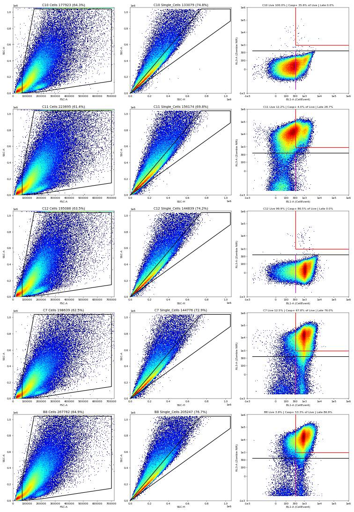
196
tool call · Bash
cd /task; python3 -c "
import sys; sys.path.insert(0,'/task/work'); import pickle, numpy as np
S=pickle.load(open('/task/work/singlets.pkl','rb'))
for w in ['A1','A8','B2','B8','C3','C7','C8','C9','C11','C12','C10']:
rl=S[w]['RL3-A'].values; lv=rl<399.5
print(w, 'Live',lv.sum(),' frac of Live with RL3<-150: %.3f'%((rl<-150)&lv).sum()/lv.sum(), ' <-500 %.3f'%(((rl<-500)&lv).sum()/lv.sum()), ' min',rl.min())
"197
tool output (error)
Exit code 1 Traceback (most recent call last): File "<string>", line 6, in <module> TypeError: ufunc 'divide' not supported for the input types, and the inputs could not be safely coerced to any supported types according to the casting rule ''safe''
198
tool call · Bash
cd /task; python3 -c "
import sys; sys.path.insert(0,'/task/work'); import pickle, numpy as np
S=pickle.load(open('/task/work/singlets.pkl','rb'))
for w in ['A1','A8','B2','B8','C3','C7','C8','C9','C11','C12','C10']:
rl=S[w]['RL3-A'].values; lv=rl<399.5
a=((rl<-150)&lv).sum()/lv.sum(); b=((rl<-500)&lv).sum()/lv.sum()
print(w, 'Live',lv.sum(),' frac of Live with RL3<-150: %.3f <-500: %.3f'%(a,b), ' min',rl.min())
"199
tool output
A1 Live 1280 frac of Live with RL3<-150: 0.425 <-500: 0.138 min -4517.0 A8 Live 12003 frac of Live with RL3<-150: 0.523 <-500: 0.152 min -10916.0 B2 Live 18059 frac of Live with RL3<-150: 0.345 <-500: 0.051 min -13332.0 B8 Live 8063 frac of Live with RL3<-150: 0.352 <-500: 0.067 min -2354.0 C3 Live 11597 frac of Live with RL3<-150: 0.333 <-500: 0.075 min -31351.0 C7 Live 18028 frac of Live with RL3<-150: 0.295 <-500: 0.084 min -65536.0 C8 Live 6232 frac of Live with RL3<-150: 0.607 <-500: 0.321 min -65536.0 C9 Live 10946 frac of Live with RL3<-150: 0.376 <-500: 0.107 min -65536.0 C11 Live 19123 frac of Live with RL3<-150: 0.432 <-500: 0.130 min -50176.0 C12 Live 144750 frac of Live with RL3<-150: 0.000 <-500: 0.000 min -488.0 C10 Live 133013 frac of Live with RL3<-150: 0.000 <-500: 0.000 min -427.0
201
tool call · Bash
cd /task; python3 -c "
import sys; sys.path.insert(0,'/task/work'); import pickle, numpy as np
S=pickle.load(open('/task/work/singlets.pkl','rb'))
for w in ['C7','C9','C11','B2','A8']:
d=S[w]; rl=d['RL3-A'].values; bl=d['BL1-A'].values; ssc=d['SSC-A'].values; t=d['Time'].values
for lab,m in [('RL3<-150',rl<-150),('-150..399',(rl>=-150)&(rl<399.5)),('RL3>1000',rl>999.5)]:
print(w,lab.ljust(10),'n=%6d BL1 med %5.0f frac BL1>300 %.2f SSC med %6.0f'%(m.sum(),np.median(bl[m]),(bl[m]>299.5).mean(),np.median(ssc[m])))
"202
tool output
C7 RL3<-150 n= 5321 BL1 med 329 frac BL1>300 0.51 SSC med 76080 C7 -150..399 n= 12707 BL1 med 650 frac BL1>300 0.75 SSC med 93920 C7 RL3>1000 n=117162 BL1 med 1030 frac BL1>300 0.94 SSC med 173694 C9 RL3<-150 n= 4111 BL1 med 106 frac BL1>300 0.35 SSC med 66957 C9 -150..399 n= 6835 BL1 med 399 frac BL1>300 0.54 SSC med 74898 C9 RL3>1000 n= 87144 BL1 med 1059 frac BL1>300 0.92 SSC med 179487 C11 RL3<-150 n= 8262 BL1 med 46 frac BL1>300 0.03 SSC med 68543 C11 -150..399 n= 10861 BL1 med 73 frac BL1>300 0.05 SSC med 81129 C11 RL3>1000 n=129300 BL1 med 221 frac BL1>300 0.35 SSC med 182658 B2 RL3<-150 n= 6224 BL1 med 106 frac BL1>300 0.32 SSC med 61468 B2 -150..399 n= 11835 BL1 med 398 frac BL1>300 0.56 SSC med 77191 B2 RL3>1000 n=128794 BL1 med 1059 frac BL1>300 0.93 SSC med 186956 A8 RL3<-150 n= 6281 BL1 med 87 frac BL1>300 0.24 SSC med 61087 A8 -150..399 n= 5722 BL1 med 220 frac BL1>300 0.45 SSC med 71267 A8 RL3>1000 n=106890 BL1 med 1016 frac BL1>300 0.92 SSC med 191404
204
thinking
The RL3-A events in stained wells look like live cells (SSC ~60–80k, low BL1), so I'm keeping them in Live as the strategy requires. Next I'll check stability by gating percentages across time quarters for every well.
205
tool call · Bash
cd /task; cat > work/quarters.py <<'EOF'
import sys; sys.path.insert(0,'/task/work')
import flowkit as fk; from load import *
g=fk.parse_gating_xml('/task/outputs/gates.xml')
lay=pd.read_csv('/task/inputs/plate_layout.csv').set_index('well')
rows=[]
for w in WELLS:
s=fk.Sample('/task/inputs/raw/'+lay.loc[w,'file']); r=g.gate_sample(s)
t=s.get_channel_events(s.get_channel_index('Time'),source='raw')
sc=r.get_gate_membership('Single_Cells'); lv=r.get_gate_membership('Live'); cp=r.get_gate_membership('Caspase_pos'); la=r.get_gate_membership('Late_apoptosis'); c=r.get_gate_membership('Cells')
q=[]
for a in [0,10,20,30]:
m=(t>=a)&(t<a+10)
q.append((100*lv[m].sum()/max(sc[m].sum(),1),100*cp[m].sum()/max(lv[m].sum(),1),100*la[m].sum()/max(sc[m].sum(),1),100*c[m].sum()/max(m.sum(),1), m.sum()))
q=np.array(q)
rows.append(dict(well=w,live_q=' '.join(f'{x:.1f}' for x in q[:,0]),casp_q=' '.join(f'{x:.0f}' for x in q[:,1]),late_q=' '.join(f'{x:.0f}' for x in q[:,2]),cells_q=' '.join(f'{x:.0f}' for x in q[:,3]),n_q=' '.join(f'{int(x)}' for x in q[:,4]),
casp_range=round(q[:,1].max()-q[:,1].min(),1),live_relrange=round((q[:,0].max()-q[:,0].min())/q[:,0].mean(),2)))
r=pd.DataFrame(rows); pd.set_option('display.width',250); print(r.to_string()); r.to_csv('/task/work/quarters.csv',index=False)
EOF
python3 work/quarters.py206
tool output
well live_q casp_q late_q cells_q n_q casp_range live_relrange 0 A1 1.3 1.3 1.4 1.4 47 44 41 42 89 89 88 87 63 66 67 65 46063 45972 46049 40985 5.7 0.08 1 A2 4.3 4.5 4.5 4.3 33 33 30 32 86 85 85 85 63 65 66 66 57486 55042 56003 49253 3.4 0.05 2 A3 3.3 3.6 3.4 3.3 54 52 52 53 88 88 87 87 65 68 70 68 55204 56342 55388 51505 2.3 0.11 3 A4 3.2 3.2 3.2 2.9 36 33 35 35 88 88 87 87 67 70 70 68 41135 41721 39844 35761 3.5 0.11 4 A5 5.3 5.2 5.2 5.3 46 48 45 46 85 86 85 84 64 66 69 66 41935 42966 42769 38869 3.0 0.03 5 A6 6.9 6.9 7.1 7.0 27 29 29 29 85 85 85 84 66 69 70 68 58689 59375 58271 51447 2.5 0.03 6 A7 6.3 6.3 6.7 6.4 27 25 25 27 84 84 83 83 63 65 67 65 74497 70599 71160 62339 2.4 0.07 7 A8 9.9 9.6 10.0 9.8 34 35 33 33 80 81 80 80 64 67 69 66 59105 60323 61711 50907 2.1 0.04 8 A9 5.7 5.6 5.7 5.5 30 32 31 29 86 86 86 86 66 68 70 68 62351 61914 61238 53161 3.1 0.04 9 A10 3.6 3.7 3.7 3.6 28 28 30 28 88 88 87 86 64 67 67 65 86695 87640 84501 73813 2.4 0.02 10 A11 6.5 6.1 6.3 6.4 38 39 38 38 84 85 84 84 61 64 65 63 56582 58165 57205 51357 1.3 0.06 11 A12 5.2 4.9 4.8 4.9 35 36 35 38 86 87 86 86 62 65 66 63 85960 85281 81959 73949 2.7 0.08 12 B1 8.2 8.3 8.7 8.1 32 32 32 30 81 81 80 81 62 65 66 63 65489 65815 64467 57221 2.4 0.08 13 B2 11.9 11.8 11.8 11.8 47 49 47 47 78 79 78 78 61 64 65 64 81457 79801 79070 72429 2.6 0.02 14 B3 10.6 10.1 10.2 10.2 39 40 38 40 81 81 81 80 64 67 68 65 70081 71753 68933 62377 2.0 0.04 15 B4 3.7 3.7 3.8 3.6 39 37 39 38 86 86 86 85 61 64 66 64 54676 54626 55942 49857 2.0 0.05 16 B5 5.5 5.3 5.5 5.8 39 41 38 39 84 85 84 83 61 64 66 63 57254 57484 56139 51563 2.7 0.09 17 B6 6.3 6.1 6.5 6.4 47 47 49 47 84 85 84 84 61 64 66 63 92283 93353 92156 82832 2.4 0.07 18 B7 3.4 3.5 3.7 3.3 40 41 40 40 88 88 88 88 64 65 68 66 46864 47153 47056 41616 1.7 0.11 19 B8 4.0 4.0 4.0 3.7 55 53 53 52 87 87 87 86 63 65 67 65 112831 101188 99983 91637 2.7 0.09 20 B9 3.8 3.7 3.9 3.8 44 41 44 40 88 88 87 87 63 66 67 63 57627 57718 56177 46723 3.7 0.07 21 B10 3.2 3.3 3.2 3.4 40 37 36 35 87 87 87 86 62 65 66 64 47258 46980 45536 42749 4.3 0.05 22 B11 4.4 4.4 4.5 4.3 53 49 53 52 87 87 87 87 65 67 68 65 71951 71859 68776 57492 4.2 0.05 23 B12 4.1 4.2 4.1 4.0 58 57 57 57 88 88 87 87 64 67 68 65 72738 72961 72450 62651 0.6 0.04 24 C1 3.1 2.0 1.6 1.7 48 47 28 33 79 91 91 84 52 67 70 66 7414 68830 86333 87047 19.9 0.69 25 C2 6.0 3.3 3.6 3.6 67 45 42 45 86 91 90 85 64 66 72 67 23575 69641 112065 93607 25.2 0.64 26 C3 5.7 5.6 5.9 5.5 59 59 59 58 84 85 85 85 63 66 67 65 100450 107765 105985 96685 0.8 0.07 27 C4 0.9 1.1 1.1 1.0 75 76 74 69 91 92 91 91 63 68 69 67 52650 59510 59908 53236 6.9 0.24 28 C5 1.3 1.3 1.3 1.3 75 76 73 71 92 92 91 91 64 68 70 67 51494 54169 54304 46114 5.3 0.05 29 C6 0.8 0.9 0.9 0.9 80 80 78 76 94 93 93 92 64 67 68 65 49218 50949 49397 39439 4.6 0.09 30 C7 12.4 12.3 13.0 12.3 68 70 66 67 76 77 76 76 60 63 65 63 81826 78883 76260 74429 4.0 0.06 31 C8 6.1 6.3 6.4 5.9 38 41 41 41 84 84 84 83 59 62 63 59 58680 57760 53172 45353 3.2 0.08 32 C9 10.4 10.6 10.9 10.8 46 48 46 48 79 79 79 78 60 61 63 61 57061 55619 53748 51181 2.1 0.05 33 C10 100.0 100.0 99.9 99.9 33 36 38 37 0 0 0 0 62 64 66 64 70608 69556 67638 63293 4.9 0.00 34 C11 11.9 12.2 12.5 12.5 3 4 5 4 27 29 29 30 59 62 63 62 94835 92332 85223 83594 1.4 0.05 35 C12 100.0 99.9 99.9 99.9 86 87 87 86 0 0 0 0 62 64 65 63 79188 78916 77211 66333 0.7 0.00
208
thinking
Only C1 and C2 drift noticeably across the four quarters, while everything else stays stable; I'm checking saturation and the large-FSC tail before writing the flags.
209
tool call · Bash
cd /task; python3 -c "
import sys; sys.path.insert(0,'/task/work'); from load import *
rows=[]
for w in WELLS:
df=load(w); n=len(df)
rows.append((w, round(100*(df['SSC-A']>=1048575).mean(),2), round(100*(df['FSC-A']>=1048575).mean(),3), round(100*(df['FSC-A']>700000).mean(),2), round(100*(df['BL1-A']>=1048575).mean(),3), round(100*(df['RL3-A']>=1048575).mean(),3), round(100*(df['SSC-H']>=1048575).mean(),3)))
r=pd.DataFrame(rows,columns=['well','SSCA_sat%','FSCA_sat%','FSC>700k%','BL1_sat%','RL3_sat%','SSCH_sat%']); print(r.to_string()); r.to_csv('/task/work/sat.csv',index=False)
print(df['SSC-A'].max(), df['FSC-A'].max())
"210
tool output
well SSCA_sat% FSCA_sat% FSC>700k% BL1_sat% RL3_sat% SSCH_sat% 0 A1 1.82 0.148 0.42 0.000 0.061 0.191 1 A2 2.53 0.255 0.67 0.000 0.135 0.366 2 A3 1.21 0.070 0.21 0.000 0.061 0.102 3 A4 2.34 0.209 0.51 0.000 0.113 0.348 4 A5 2.25 0.099 0.32 0.000 0.014 0.230 5 A6 1.79 0.107 0.35 0.000 0.047 0.170 6 A7 3.19 0.334 0.97 0.000 0.106 0.451 7 A8 3.64 0.236 0.77 0.000 0.041 0.468 8 A9 2.82 0.192 0.57 0.000 0.064 0.331 9 A10 2.25 0.111 0.42 0.000 0.036 0.222 10 A11 2.51 0.161 0.48 0.000 0.028 0.302 11 A12 2.35 0.119 0.43 0.000 0.031 0.242 12 B1 3.07 0.228 0.73 0.000 0.060 0.443 13 B2 3.15 0.339 0.95 0.000 0.008 0.419 14 B3 3.06 0.249 0.78 0.000 0.010 0.367 15 B4 2.35 0.280 0.66 0.000 0.165 0.410 16 B5 2.56 0.156 0.47 0.000 0.026 0.318 17 B6 2.15 0.155 0.50 0.000 0.015 0.240 18 B7 1.33 0.107 0.27 0.000 0.032 0.135 19 B8 1.91 0.097 0.40 0.000 0.005 0.140 20 B9 2.02 0.120 0.39 0.000 0.017 0.206 21 B10 1.65 0.079 0.25 0.000 0.043 0.166 22 B11 1.83 0.065 0.26 0.000 0.006 0.119 23 B12 1.61 0.053 0.21 0.000 0.003 0.103 24 C1 2.78 0.329 0.84 0.000 0.025 0.288 25 C2 2.94 0.309 0.82 0.000 0.049 0.347 26 C3 3.24 0.267 0.86 0.000 0.013 0.329 27 C4 1.79 0.078 0.24 0.013 0.005 0.141 28 C5 1.81 0.060 0.24 0.024 0.006 0.111 29 C6 1.66 0.041 0.17 0.014 0.009 0.117 30 C7 2.66 0.488 1.16 0.000 0.062 0.381 31 C8 2.86 0.460 0.98 0.000 0.272 0.524 32 C9 3.26 0.674 1.38 0.000 0.133 0.616 33 C10 3.26 0.598 1.35 0.000 0.000 0.582 34 C11 4.33 0.786 1.80 0.000 0.087 0.848 35 C12 3.43 0.422 1.10 0.000 0.000 0.507 1048575.0 1048575.0
212
thinking
No saturation flag is needed, since SSC-A saturation runs 1.2–4.3% and the fluorescence channels stay under 0.27%; I'm writing flags.csv with the evidence for each well.
213
tool call · Bash
cd /task; cat > work/flags.py <<'EOF'
import sys; sys.path.insert(0,'/task/work')
from load import *
lay=pd.read_csv('/task/inputs/plate_layout.csv').set_index('well')
fl=pd.read_csv('/task/work/flow.csv').set_index('well'); qc=pd.read_csv('/task/work/qc.csv').set_index('well')
qs=pd.read_csv('/task/work/quarters.csv').set_index('well'); sat=pd.read_csv('/task/work/sat.csv').set_index('well')
cn=pd.read_csv('/task/outputs/counts.csv'); C=cn.pivot(index='well',columns='population',values='count'); P=cn.pivot(index='well',columns='population',values='pct_of_parent')
# end-of-run: rate in final 1 s relative to 20-35 s
end={}
for w in WELLS:
df=load(w); t=df.Time.values; T=t.max()
mid=((t>=20)&(t<35)).sum()/15; last=((t>=T-1)&(t<=T)).sum()/1.0
f_mid=np.median(df['FSC-A'][(t>=20)&(t<35)]); f_last=np.median(df['FSC-A'][t>=T-1])
end[w]=(last/mid,f_last/f_mid,mid)
rows=[]
for w in WELLS:
f=lay.loc[w,'file']; e=end[w]
base=(f"{int(fl.loc[w,'n'])} events in {fl.loc[w,'T']:.1f} s; median rate {fl.loc[w,'med_rate']:.0f} ev/s, rate CV {fl.loc[w,'cv']:.2f} (0.25-s bins); "
f"first stable flow at {qc.loc[w,'t_start']:.2f} s; {qc.loc[w,'dropout_s']:.1f} s of 0.1-s bins <20% median rate; final-1-s rate {100*e[0]:.0f}% and FSC-A median {100*e[1]:.0f}% of mid-run; "
f"Live {int(C.loc[w,'Live'])} ({P.loc[w,'Live']:.1f}% of singlets), Caspase_pos {P.loc[w,'Caspase_pos']:.1f}% of Live, Late {P.loc[w,'Late_apoptosis']:.1f}%; "
f"Live%/Caspase_pos% by 10-s quarter: {qs.loc[w,'live_q']} / {qs.loc[w,'casp_q']}")
cat='ok'; ev=base
if w=='C1':
cat='clog_or_interrupted_flow'
ev=("Interrupted/clogged flow: essentially no events for the first 7.0 s (1829 events before stable flow), then erratic bursts up to ~20000 ev/s (rate CV 0.91, 5.6 s of near-zero-rate bins, longest gap 1.29 s) and flow stops again ~38.5-40.5 s; "
f"composition drifts with time (Caspase_pos% of Live by 10-s quarter {qs.loc[w,'casp_q']}; Live% {qs.loc[w,'live_q']}) vs <=7-point range in stable wells; 518 events with FSC-A<=0 (median 7 elsewhere). "
f"Gated: Live {int(C.loc[w,'Live'])} ({P.loc[w,'Live']:.1f}%), Caspase_pos {P.loc[w,'Caspase_pos']:.1f}% of Live.")
elif w=='C2':
cat='clog_or_interrupted_flow'
ev=("Interrupted/clogged flow: essentially no events for the first 5.85 s (1977 events before stable flow), then erratic rate with bursts to ~19000 ev/s (rate CV 0.57, 2.2 s of near-zero-rate bins, longest gap 0.41 s); "
f"composition drifts with time (Caspase_pos% of Live by 10-s quarter {qs.loc[w,'casp_q']}; Live% {qs.loc[w,'live_q']}) vs <=7-point range in stable wells; 391 events with FSC-A<=0. "
f"Gated: Live {int(C.loc[w,'Live'])} ({P.loc[w,'Live']:.1f}%), Caspase_pos {P.loc[w,'Caspase_pos']:.1f}% of Live.")
elif w=='C8':
cat='ran_dry'
ev=("Sample ran dry before acquisition ended: event rate fell from ~5300 ev/s (20-35 s) starting at ~37.5 s to 0-3% of mid-run for the last ~1 s (last 2 s at 12%), while FSC-A median fell from ~100k to ~30k "
"and RL3-A/BL1-A medians dropped (air/debris; only 38% of tail events fall in Cells vs 60% overall). Only well where the rate reaches ~0 while recording continues. "
f"Also the odd replicate of the no-virus triplicate: Live {P.loc[w,'Live']:.1f}% vs 12.5/10.7% (C7/C9), RL3-A median of singlets 30058 vs 8177/11811. Counts: Live {int(C.loc[w,'Live'])}, Caspase_pos {P.loc[w,'Caspase_pos']:.1f}% of Live.")
else:
extra=[]
if w in ('C4','C5','C6'): extra.append("AAV1-GFP transduction reference: GFP present (0.20-0.24% of singlets BL1-A>1e4 vs <=0.02% in non-GFP wells; Zombie-negative cells shifted to BL1-A ~500 vs ~150-250 in C8/C9), so BL1-A = GFP + CellEvent and Caspase_pos here is not a caspase-only readout; not used to set BL1-A gates")
if w=='C10': extra.append("Unstained control behaves as expected: RL3-A 99.9th pct 291 (no Zombie), BL1-A median 228 (no CellEvent); its 35.6% 'Caspase_pos' is BL1 autofluorescence of dead cells that cannot be removed without Zombie")
if w=='C11': extra.append("Zombie-only control as expected: 82.8% of singlets RL3-A>1000, Zombie-negative cells BL1-A median 61 (no CellEvent); 4.0% of Live fall in Caspase_pos = background; 28.7% Late is BL1-autofluorescent dead cells")
if w=='C12': extra.append("CellEvent-only control as expected: RL3-A 99.9th pct 296 (no Zombie), BL1-A median 1044 with a caspase-negative cluster at BL1-A<~300")
if w in ('C7','C9','C10','C11'): extra.append("intermittent brief flow dropouts (likely bubbles; longest gap <=0.34 s) but Live%/Caspase_pos% constant over time, so usable")
if w in ('B1','B3','B9','B11','C5','C6'): extra.append("mild end-of-run rate decline (sample nearly exhausted) affecting <1.5% of events, rate never reaches zero; excluding the tail changes Live% by <=0.02 points")
if w in ('C4','C5','C6','A1'): extra.append(f"Live population is small ({int(C.loc[w,'Live'])} events) because >90% of cells are Zombie-bright, but adequate for percentages")
ev=base+('; '+'; '.join(extra) if extra else '')+f"; SSC-A saturation {sat.loc[w,'SSCA_sat%']:.1f}% of events (removed by Cells gate)"
rows.append(dict(file=f,well=w,usable='yes' if cat=='ok' else 'no',reason_category=cat,evidence=ev))
out=pd.DataFrame(rows); out.to_csv('/task/outputs/flags.csv',index=False)
print(out[['well','usable','reason_category']].to_string()); print(out.evidence.str.len().describe())
EOF
python3 work/flags.py214
tool output
well usable reason_category 0 A1 yes ok 1 A2 yes ok 2 A3 yes ok 3 A4 yes ok 4 A5 yes ok 5 A6 yes ok 6 A7 yes ok 7 A8 yes ok 8 A9 yes ok 9 A10 yes ok 10 A11 yes ok 11 A12 yes ok 12 B1 yes ok 13 B2 yes ok 14 B3 yes ok 15 B4 yes ok 16 B5 yes ok 17 B6 yes ok 18 B7 yes ok 19 B8 yes ok 20 B9 yes ok 21 B10 yes ok 22 B11 yes ok 23 B12 yes ok 24 C1 no clog_or_interrupted_flow 25 C2 no clog_or_interrupted_flow 26 C3 yes ok 27 C4 yes ok 28 C5 yes ok 29 C6 yes ok 30 C7 yes ok 31 C8 no ran_dry 32 C9 yes ok 33 C10 yes ok 34 C11 yes ok 35 C12 yes ok count 36.000000 mean 487.027778 std 153.771721 min 386.000000 25% 386.000000 50% 388.500000 75% 541.000000 max 937.000000 Name: evidence, dtype: float64
216
tool call · Bash
cd /task; python3 -c "
import sys; sys.path.insert(0,'/task/work'); import pickle, numpy as np
S=pickle.load(open('/task/work/singlets.pkl','rb'))
for w in ['C7','C8','C9','C11']:
rl=S[w]['RL3-A'].values; print(w, int(np.median(rl)), round(100*(rl>999.5).mean(),1))
"; sed -i 's/flow stops again ~38.5-40.5 s/flow stops again ~39.0-40.5 s/; s/518 events with FSC-A<=0 (median 7 elsewhere)/518 events with FSC-A<=0 (<=161 in any other well)/' work/flags.py; python3 work/flags.py >/dev/null; grep -c . outputs/flags.csv; python3 -c "
import pandas as pd; f=pd.read_csv('/task/outputs/flags.csv');
for w in ['C1','C8','C4','C11','A1']: print(w, f.set_index('well').loc[w,'evidence'],'\n')"217
tool output
C7 8177 80.9 C8 30058 92.1 C9 11811 85.0 C11 8154 82.8 37 C1 Interrupted/clogged flow: essentially no events for the first 7.0 s (1829 events before stable flow), then erratic bursts up to ~20000 ev/s (rate CV 0.91, 5.6 s of near-zero-rate bins, longest gap 1.29 s) and flow stops again ~39.0-40.5 s; composition drifts with time (Caspase_pos% of Live by 10-s quarter 48 47 28 33; Live% 3.1 2.0 1.6 1.7) vs <=7-point range in stable wells; 518 events with FSC-A<=0 (<=161 in any other well). Gated: Live 2277 (1.8%), Caspase_pos 36.1% of Live. C8 Sample ran dry before acquisition ended: event rate fell from ~5300 ev/s (20-35 s) starting at ~37.5 s to 0-3% of mid-run for the last ~1 s (last 2 s at 12%), while FSC-A median fell from ~100k to ~30k and RL3-A/BL1-A medians dropped (air/debris; only 38% of tail events fall in Cells vs 60% overall). Only well where the rate reaches ~0 while recording continues. Also the odd replicate of the no-virus triplicate: Live 6.2% vs 12.5/10.7% (C7/C9), RL3-A median of singlets 30058 vs 8177/11811. Counts: Live 6232, Caspase_pos 40.4% of Live. C4 230134 events in 41.0 s; median rate 5712 ev/s, rate CV 0.08 (0.25-s bins); first stable flow at 0.05 s; 0.0 s of 0.1-s bins <20% median rate; final-1-s rate 87% and FSC-A median 91% of mid-run; Live 1281 (1.0% of singlets), Caspase_pos 74.0% of Live, Late 91.2%; Live%/Caspase_pos% by 10-s quarter: 0.9 1.1 1.1 1.0 / 75 76 74 69; AAV1-GFP transduction reference: GFP present (0.20-0.24% of singlets BL1-A>1e4 vs <=0.02% in non-GFP wells; Zombie-negative cells shifted to BL1-A ~500 vs ~150-250 in C8/C9), so BL1-A = GFP + CellEvent and Caspase_pos here is not a caspase-only readout; not used to set BL1-A gates; Live population is small (1281 events) because >90% of cells are Zombie-bright, but adequate for percentages; SSC-A saturation 1.8% of events (removed by Cells gate) C11 364071 events in 40.9 s; median rate 9328 ev/s, rate CV 0.30 (0.25-s bins); first stable flow at 0.05 s; 2.6 s of 0.1-s bins <20% median rate; final-1-s rate 102% and FSC-A median 90% of mid-run; Live 19123 (12.2% of singlets), Caspase_pos 4.0% of Live, Late 28.7%; Live%/Caspase_pos% by 10-s quarter: 11.9 12.2 12.5 12.5 / 3 4 5 4; Zombie-only control as expected: 82.8% of singlets RL3-A>1000, Zombie-negative cells BL1-A median 61 (no CellEvent); 4.0% of Live fall in Caspase_pos = background; 28.7% Late is BL1-autofluorescent dead cells; intermittent brief flow dropouts (likely bubbles; longest gap <=0.34 s) but Live%/Caspase_pos% constant over time, so usable; SSC-A saturation 4.3% of events (removed by Cells gate) A1 183353 events in 40.9 s; median rate 4520 ev/s, rate CV 0.07 (0.25-s bins); first stable flow at 0.05 s; 0.0 s of 0.1-s bins <20% median rate; final-1-s rate 106% and FSC-A median 94% of mid-run; Live 1280 (1.3% of singlets), Caspase_pos 43.8% of Live, Late 88.2%; Live%/Caspase_pos% by 10-s quarter: 1.3 1.3 1.4 1.4 / 47 44 41 42; Live population is small (1280 events) because >90% of cells are Zombie-bright, but adequate for percentages; SSC-A saturation 1.8% of events (removed by Cells gate)
219
agent
`flags.csv` is written: C1 and C2 clog_or_interrupted_flow, C8 ran_dry, the other 33 ok. Now writing `notes.md` and running the final checks.
220
tool call · Write
{
"file_path": "/task/outputs/notes.md",
"content": "# Gating notes: GRN-KO iPSC neurons, CellEvent caspase-3/7 + Zombie NIR (17-Apr-2023)\n\n**Setup.** One FlowKit 1.2.3 `GatingStrategy` is applied to all 36 files. The data are raw and uncompensated (the FCS spillover matrix is identity, and no compensation is applied). Every dimension uses `compensation_ref=\"uncompensated\"`. BL1-A and RL3-A are gated on a logicle scale: T = 2^20 (Attune range), M = 6.02, W = 1.0, A = 0. Since logicle is monotonic, each threshold below is given in raw units. Thresholds are half-integers because the data are integer-valued and FlowKit's rectangle minimum is inclusive. `counts.csv` is produced by re-loading `gates.xml` and running `gate_sample` on each file. An independent numpy calculation matches it to within 1 event, which sits on a polygon edge in 3 wells.\n\n| Gate | Shape, axes | Placement and reason |\n|---|---|---|\n| Cells | polygon on FSC-A \u00d7 SSC-A (linear) | Vertices (65k,3k), (200k,20k), (700k,150k), (700k,1.04M), (150k,1.04M), (65k,250k). Debris forms a dense blob at FSC-A 20\u201355k / SSC-A 10\u201360k, so the left edge is FSC-A 65k. The low-SSC Zombie-negative cluster (FSC 150\u2013250k, SSC 50\u2013120k) stays inside. The top edge at SSC-A 1.04M removes the 1.2\u20134.3% of events saturated at 1,048,575. Large aggregates above FSC-A 700k (\u22641.8%) are excluded. About 60\u201368% of all events fall in the gate. |\n| Single_Cells | polygon on SSC-H \u00d7 SSC-A | A diagonal band with SSC-A/SSC-H between 0.85 and 1.40. The singlet mode is 1.10\u20131.17 in every well, with a doublet tail above about 1.4. 70\u201384% of Cells fall in the gate. |\n| Live | rectangle on BL1-A \u00d7 RL3-A | BL1-A spans \u22121e5 to 2.1e6, which covers the whole range. RL3-A runs from \u22121e5 (below the data minimum of \u221265,536) to **399.5**. Unstained C10 and CellEvent-only C12 have a 99.9th percentile of 291 and 296, and C12's brightest cells (whose RL3-A rises slightly with BL1-A) reach about 300. |\n| Caspase_pos | rectangle on BL1-A \u00d7 RL3-A, under Live | BL1-A from **299.5**. RL3-A is the same range as Live. The C12 valley in live-like scatter is about 357. In Zombie-negative cells of pooled samples and C8/C9 the negative and positive modes are separated at 243\u2013285. In C11 (no CellEvent), 95% of Zombie-negative cells sit below 257, and 4.0% of its Live events fall in this gate (the background). |\n| Late_apoptosis | polygon (4 vertices) on BL1-A \u00d7 RL3-A, under Single_Cells | BL1-A \u2265 299.5 (the same C12 edge) and RL3-A \u2265 **999.5**. In C11 the Zombie-bright population (mode about 1.5e4) has a tail that ends near 1e3. RL3-A between 400 and 1000 is a gap that neither gate reports, as the strategy specifies. The upper edges lie beyond saturation, so saturated bright events are kept. |\n\n**Observations and deviations.**\n- The gates follow `gating_strategy.md` exactly. There are no per-well gates and no time gate. The BL1-A edges were set on C12 and on Zombie-negative cells, never on the GFP wells C4\u2013C6.\n- Viability is very low: 80\u201398% of singlets are Zombie-bright and Live is only 1\u201312%. As a result, Live and Caspase_pos counts are small in some wells: 929 Live events in C6, about 1,280 in A1 and C4, and 561 Caspase_pos events in A1.\n- Many Zombie-stained wells contain events with RL3-A far below the unstained floor (\u2212150 down to \u221265,536), making up 30\u201360% of Live. Their scatter matches Zombie-negative cells (SSC-A median 60\u201380k against about 180k for Zombie-bright cells) and their BL1-A is low. The lower edge is kept below them, as the strategy requires.\n- BL1-A autofluorescence of dead cells means control wells score in these gates without CellEvent: unstained C10 puts 35.6% of Live in Caspase_pos, and Zombie-only C11 puts 28.7% of singlets in Late_apoptosis. A single BL1-A edge cannot remove this. Treat Late_apoptosis as an upper estimate.\n- In C4\u2013C6, BL1-A is GFP plus CellEvent. GFP is weak but real: 0.20\u20130.24% of singlets have BL1-A > 1e4, against \u22640.02% elsewhere, and Zombie-negative cells are shifted up. Caspase_pos in these wells is therefore not a caspase readout.\n\n**Flags.** I checked the event rate over time (0.05\u20130.25 s bins), the start and end of each run, FSC-A, SSC-A and fluorescence medians over time, and the stability of the gated percentages across 10-s quarters.\n- **C1 and C2: clog/interrupted flow.** There are no events for the first 7.0 s (C1) and 5.85 s (C2), followed by bursts at 2\u20134\u00d7 the median rate. Caspase_pos% drifts by 20\u201325 points across the run, against \u22647 points in every other well.\n- **C8: ran dry.** The rate falls to 0\u20133% of mid-run for the final ~1 s and FSC-A collapses to about 30k. Composition before the dry tail is stable: removing the tail moves Live from 6.22% to 6.24%. The well is still flagged because the sample was exhausted before acquisition ended, and it is the outlier of the no-virus triplicate (Live 6.2% against 12.5% and 10.7%, and Zombie brightness about 3\u00d7 higher).\n- **Not flagged:**\n - B1, B3, B9, B11, C5 and C6 have a milder decline at the end. It affects \u22641.1% of events, the rate never reaches zero, and percentages change by \u22640.02 points.\n - C7 and C9\u2013C11 have brief dropouts (\u22640.34 s, likely bubbles) with stable percentages.\n - No well has abnormal saturation, too few events, a mismatched `$WELLID`/`$FIL`, or a stain pattern that contradicts its label. The controls behave as their labels say.\n"
}221
tool output
File created successfully at: /task/outputs/notes.md (file state is current in your context — no need to Read it back)
223
tool call · Bash
cd /task; sed -i 's/The singlet mode is 1.10–1.17 in every well, with a doublet tail above about 1.4./The singlet ratio has its mode near 1.10 and its median at 1.16–1.19 in every well, with a doublet tail above about 1.4./; s/It affects ≤1.1% of events/It affects ≤1.2% of events/' outputs/notes.md; grep -c "1.16–1.19\|≤1.2%" outputs/notes.md; wc -w outputs/notes.md
python3 - <<'EOF'
import flowkit as fk, pandas as pd
g=fk.parse_gating_xml('/task/outputs/gates.xml')
print(g.get_gate_hierarchy('ascii'))
for gid,path in g.get_gate_ids():
gt=g.get_gate(gid,path); print(gid, path, type(gt).__name__, [ (d.id, d.compensation_ref, d.transformation_ref) for d in gt.dimensions])
c=pd.read_csv('/task/outputs/counts.csv'); print(c.shape, list(c.columns)); print(c.head(6))
assert c.groupby('file').size().eq(5).all() and c.file.nunique()==36
f=pd.read_csv('/task/outputs/flags.csv'); print(f.shape, list(f.columns)); assert ((f.usable=='yes')==(f.reason_category=='ok')).all()
# recount from xml for one file to ensure counts match the saved gates
s=fk.Sample('/task/inputs/raw/Caspase_KO_RNAswap-rep2_caspase_Group_B5.fcs'); r=g.gate_sample(s)
print([int(r.get_gate_membership(p).sum()) for p in ['Cells','Single_Cells','Live','Caspase_pos','Late_apoptosis']], c[c.well=='B5']['count'].tolist())
EOF
ls -la outputs224
tool output
2
898 outputs/notes.md
root
╰── Cells
╰── Single_Cells
├── Live
│ ╰── Caspase_pos
╰── Late_apoptosis
Cells ('root',) PolygonGate [('FSC-A', 'uncompensated', None), ('SSC-A', 'uncompensated', None)]
Single_Cells ('root', 'Cells') PolygonGate [('SSC-H', 'uncompensated', None), ('SSC-A', 'uncompensated', None)]
Live ('root', 'Cells', 'Single_Cells') RectangleGate [('BL1-A', 'uncompensated', 'logicle'), ('RL3-A', 'uncompensated', 'logicle')]
Caspase_pos ('root', 'Cells', 'Single_Cells', 'Live') RectangleGate [('BL1-A', 'uncompensated', 'logicle'), ('RL3-A', 'uncompensated', 'logicle')]
Late_apoptosis ('root', 'Cells', 'Single_Cells') PolygonGate [('BL1-A', 'uncompensated', 'logicle'), ('RL3-A', 'uncompensated', 'logicle')]
(180, 6) ['file', 'well', 'population', 'count', 'parent_population', 'pct_of_parent']
file ... pct_of_parent
0 Caspase_KO_RNAswap-rep2_caspase_Group_A1.fcs ... 65.2299
1 Caspase_KO_RNAswap-rep2_caspase_Group_A1.fcs ... 81.3045
2 Caspase_KO_RNAswap-rep2_caspase_Group_A1.fcs ... 1.3163
3 Caspase_KO_RNAswap-rep2_caspase_Group_A1.fcs ... 43.8281
4 Caspase_KO_RNAswap-rep2_caspase_Group_A1.fcs ... 88.1501
5 Caspase_KO_RNAswap-rep2_caspase_Group_A2.fcs ... 64.8812
[6 rows x 6 columns]
(36, 5) ['file', 'well', 'usable', 'reason_category', 'evidence']
[142624, 114692, 6319, 2475, 96434] [142624, 114692, 6319, 2475, 96434]
total 60
drwxr-xr-x 2 root root 4096 Nov 10 17:26 .
drwxr-xr-x 5 root root 4096 Nov 10 17:08 ..
-rw-r--r-- 1 root root 14840 Nov 10 17:23 counts.csv
-rw-r--r-- 1 root root 19732 Nov 10 17:25 flags.csv
-rw-r--r-- 1 root root 5115 Nov 10 17:22 gates.xml
-rw-r--r-- 1 root root 5413 Nov 10 17:26 notes.md
[This command modified 1 file you've previously read: outputs/notes.md. Call Read before editing.]226
agent
All 36 wells are gated with one gate set, and the four files are in `/task/outputs/`. Three wells are flagged unusable: C1 and C2 for clogged/interrupted flow, and C8 because the sample ran dry. `gates.xml` reloads with `parse_gating_xml`. `counts.csv` was produced by applying that saved file to every well, and it matches an independent numpy recount except for one event on a polygon edge in three wells.
**Gates** (raw, uncompensated data; the two fluorescence channels on a logicle scale):
| Gate | Shape | Boundary | Where it came from |
|---|---|---|---|
| Cells | polygon, FSC-A × SSC-A | FSC-A ≥ 65k, SSC-A ≤ 1.04M | debris ends at about FSC-A 55k; the top edge drops the 1.2–4.3% of events saturated on SSC-A |
| Single_Cells | polygon, SSC-H × SSC-A | SSC-A/SSC-H between 0.85 and 1.40 | singlet ratio peaks near 1.1; doublets lie above 1.4 |
| Live | rectangle | RL3-A ≤ 399.5, lower edge below all negative events | unstained (C10) and CellEvent-only (C12) wells reach about 291–296 at the 99.9th percentile |
| Caspase_pos | rectangle inside Live | BL1-A ≥ 299.5 | dip between negative and positive cells: about 357 in C12, 243–285 in the live cells of other wells |
| Late_apoptosis | polygon | BL1-A ≥ 299.5 and RL3-A ≥ 999.5 | lower end of the Zombie-bright population in C11 |
Boundaries are half-integers because the data are whole numbers and FlowKit counts an event sitting exactly on a gate's minimum as inside.
**Flags:**
- **C1 and C2 (clog_or_interrupted_flow):** no events for the first 7.0 s and 5.85 s, then bursts of 2–4× the normal rate. They are also the only wells whose results drift during the run: Caspase_pos changes by 20–25 percentage points across it, against at most 7 points everywhere else.
- **C8 (ran_dry):** the event rate falls to 0–3% of normal for the last ~1 s and forward scatter collapses. This is a judgement call: dropping that tail moves Live only from 6.22% to 6.24%. I flagged it because the sample ran out before recording stopped and it is the odd one of the three untreated wells (Live 6.2% against 12.5% and 10.7%). If you'd rather keep it, change its row to `ok`.
- **Not flagged:** six wells (B1, B3, B9, B11, C5, C6) slow down at the very end, but never stop, and it affects about 1% of events. C7 and C9–C11 have brief dropouts of up to 0.34 s with stable results. No well shows abnormal saturation, too few events, or a stain pattern that contradicts its label. The control wells behave as labelled.
**Things that affect how you read the numbers:**
- **Viability is very low.** 80–98% of single cells are Zombie-bright, so Live is only 1–12.5%. Some Live counts are small: 929 in C6, about 1,280 in A1 and C4.
- **About 30–60% of Live events have strongly negative RL3-A values.** Their scatter matches live cells, and the strategy says to keep them, so they are counted.
- **Dead cells glow on BL1-A without any CellEvent.** The unstained well puts 35.6% of Live into Caspase_pos, and the Zombie-only well puts 28.7% of single cells into Late_apoptosis. One BL1-A boundary can't remove this, so treat Late_apoptosis as an upper estimate.
- **The GFP wells (C4–C6) don't give a caspase readout.** GFP is present but weak: 0.2% of single cells are above 10,000 on BL1-A, against ≤0.02% elsewhere. Because GFP and CellEvent share that detector, Caspase_pos there mixes the two.
Files are in `/task/outputs/`:
- `gates.xml`
- `counts.csv`
- `flags.csv`
- `notes.md`
The analysis scripts and plots are in `/task/work/`.
final result
All 36 wells are gated with one gate set, and the four files are in `/task/outputs/`. Three wells are flagged unusable: C1 and C2 for clogged/interrupted flow, and C8 because the sample ran dry. `gates.xml` reloads with `parse_gating_xml`. `counts.csv` was produced by applying that saved file to every well, and it matches an independent numpy recount except for one event on a polygon edge in three wells. **Gates** (raw, uncompensated data; the two fluorescence channels on a logicle scale): | Gate | Shape | Boundary | Where it came from | |---|---|---|---| | Cells | polygon, FSC-A × SSC-A | FSC-A ≥ 65k, SSC-A ≤ 1.04M | debris ends at about FSC-A 55k; the top edge drops the 1.2–4.3% of events saturated on SSC-A | | Single_Cells | polygon, SSC-H × SSC-A | SSC-A/SSC-H between 0.85 and 1.40 | singlet ratio peaks near 1.1; doublets lie above 1.4 | | Live | rectangle | RL3-A ≤ 399.5, lower edge below all negative events | unstained (C10) and CellEvent-only (C12) wells reach about 291–296 at the 99.9th percentile | | Caspase_pos | rectangle inside Live | BL1-A ≥ 299.5 | dip between negative and positive cells: about 357 in C12, 243–285 in the live cells of other wells | | Late_apoptosis | polygon | BL1-A ≥ 299.5 and RL3-A ≥ 999.5 | lower end of the Zombie-bright population in C11 | Boundaries are half-integers because the data are whole numbers and FlowKit counts an event sitting exactly on a gate's minimum as inside. **Flags:** - **C1 and C2 (clog_or_interrupted_flow):** no events for the first 7.0 s and 5.85 s, then bursts of 2–4× the normal rate. They are also the only wells whose results drift during the run: Caspase_pos changes by 20–25 percentage points across it, against at most 7 points everywhere else. - **C8 (ran_dry):** the event rate falls to 0–3% of normal for the last ~1 s and forward scatter collapses. This is a judgement call: dropping that tail moves Live only from 6.22% to 6.24%. I flagged it because the sample ran out before recording stopped and it is the odd one of the three untreated wells (Live 6.2% against 12.5% and 10.7%). If you'd rather keep it, change its row to `ok`. - **Not flagged:** six wells (B1, B3, B9, B11, C5, C6) slow down at the very end, but never stop, and it affects about 1% of events. C7 and C9–C11 have brief dropouts of up to 0.34 s with stable results. No well shows abnormal saturation, too few events, or a stain pattern that contradicts its label. The control wells behave as labelled. **Things that affect how you read the numbers:** - **Viability is very low.** 80–98% of single cells are Zombie-bright, so Live is only 1–12.5%. Some Live counts are small: 929 in C6, about 1,280 in A1 and C4. - **About 30–60% of Live events have strongly negative RL3-A values.** Their scatter matches live cells, and the strategy says to keep them, so they are counted. - **Dead cells glow on BL1-A without any CellEvent.** The unstained well puts 35.6% of Live into Caspase_pos, and the Zombie-only well puts 28.7% of single cells into Late_apoptosis. One BL1-A boundary can't remove this, so treat Late_apoptosis as an upper estimate. - **The GFP wells (C4–C6) don't give a caspase readout.** GFP is present but weak: 0.2% of single cells are above 10,000 on BL1-A, against ≤0.02% elsewhere. Because GFP and CellEvent share that detector, Caspase_pos there mixes the two. Files are in `/task/outputs/`: - `gates.xml` - `counts.csv` - `flags.csv` - `notes.md` The analysis scripts and plots are in `/task/work/`.